29 شناساییِ ساختگاه و کارهای عمرانی
29.1 نقشهٔ فصل
پس از این فصل، خواننده میتواند:
- نقشهبرداری و شناساییِ زمین را برنامهریزی و نتیجهاش را با دقت و حدهایش بخواند: شبکهٔ کنترل، مدلِ رقومی، گمانه، SPT، CPT، شکستِ لرزهای، آبِ زیرزمینی و خاکِ ویژه.
- مبنای طراحیِ عمرانی را بنویسد: راه، شیب و قوس، خاکریزی و موازنه، سنگدانه، سکوی جرثقیل، ترانشه، زهکشی، آبرو، فرسایش، و مرزهای عمران با رشتههای دیگر.
- کیفیتِ اجرا را با قاعدههای از پیش نوشته بپذیرد یا رد کند: تراکم، بتن، پوشش، نقطههای توقف، رسوب، غبار، خاکِ رویی و گزارشهای عدمِ انطباق.
- گزارشِ ژئوتکنیک را بازبینی کند و پرسشهایی برای مهندسانِ دارای صلاحیت بنویسد، بیآنکه راهحلی را فرض کند.
- خطرهای اقلیمی را با مقدارِ بازگشت، روند و احتمال در عمر به طرح پیوند دهد و دفترِ سازگاری بنویسد.
- زیرساختِ آتشنشانیِ ساختگاه را با جایگاهدارها هماهنگ کند: دسترسی، ذخیرهٔ جدا و مهارِ روانآب.
- منبعِ آب، مالکیت و آبدهی را بسنجد، ترازنامهٔ ماهانهٔ ساخت و بهرهبرداری را بسازد، و راهبردِ شستوشو را با آب، هزینه، انرژی، ایمنی و محیط برگزیند.
- دالانِ اتصال و جای پست را به زبانِ عمرانی بنویسد: دکلها، گذرها، سیل، دفترِ قیدها و بازگرداندنِ زمین.
پیشنیازها: فیزیک و مواد (فصل 4)، غربالِ ساختگاه و چیدمان (فصل 14)، آمار و مقدارهای فرین (فصل 3)، عدمِ قطعیت (فصل 2)، معماریِ آب (فصل 18) و آلودگیِ پنلها (فصل 10).
- دو خطای مستقلِ 3 و 4 cm روی هم چه خطایی میسازند؟
- شیبِ زمینی که در 50 m به اندازهٔ 2 m بالا میرود چند درصد است؟
- توزیعِ گامبل برای چه دادهای به کار میرود؟
- چرا آبِ سالانهٔ کافی ممکن است در یک ماه کم بیاید؟
- سطحِ هزینه در فصلِ ۱۴ چه کاری میکرد؟
پاسخها: (۱) \(\sqrt{3^2+4^2} = 5\,\text{cm}\)؛ (۲) 4 %؛ (۳) بیشینههای سالانه؛ (۴) چون مصرف و منبع در ماههای مختلف اوج دارند؛ (۵) مسیری را مییافت که مجموعِ هزینهٔ گذر از خانههای شبکهٔ نقشه را کمینه کند و حریمها را دور بزند. اگر دو پرسش یا بیشتر را نتوانستید، فصل 2 و فصل 14 را مرور کنید.
جایگاهِ این فصل در نیروگاهِ P. این فصل بخشِ ششم را باز میکند: نیروگاه از نقشهها و مطالعهها پایین میآید و روی زمین مینشیند. چیدمانِ فصلِ ۱۴، معماریِ آبِ فصلِ ۱۸، سیاستهای شستوشوی فصلِ ۱۰ و خطِ صادراتِ فصلهای ۲۴ و ۲۸ اینجا با زمین، آب، اقلیم و سیل روبهرو میشوند. تحویلدادنیها مدلِ زمین و پرسشها، مبنای طراحیِ عمرانی، برنامههای بازرسی، برنامهٔ مدیریتِ آب، دفترِ دالان و دفترِ خطرهای اقلیمیاند، با تصمیمِ D-033. فصلِ ۳۰ فونداسیونها را روی همین مدلِ زمین طراحی میکند، فصلِ ۳۱ حمل و جرثقیل را روی همین راهها، و فصلهای ۳۲ و ۳۳ ایمنی و محیطِ زیست را.
ساختگاه، گمانهها، رکوردِ اقلیم، چاهها و همهٔ عددها ساختگی و آموزشیاند (A-349 تا A-355). هیچ فونداسیونی اینجا انتخاب نمیشود: طراحیِ فونداسیون، شیبها، زهکشی و تأمینِ آب کارِ مهندسانِ دارای صلاحیت بر پایهٔ آییننامههای محل است، و همبستگیها فقط برای غربالاند. عددهای آتشنشانی جایگاهدارند تا راهبردِ آتشنشانی، مرجعِ دارای صلاحیت و آزمونهای محصول آنها را بدهند (U-105). حقابه و پروانهها مختصِ پروژهاند (U-104). رکوردِ اقلیم یک مطالعهٔ خطر نیست.
29.2 الف. نقشهبرداری و مدلِ زمین
هر عددِ عمرانیِ این فصل روی دو پایه میایستد: جای چیزها (نقشهبرداری) و آنچه زیرِ آنهاست (مدلِ زمین). هر دو را میتوان بد ساخت و تا روزِ گودبرداری نفهمید. این بخش نشان میدهد هر کدام چگونه ساخته میشود، دقتش چقدر است و کجا فقط حدس است. شکل 29.1 کلِ راه را از مطالعهٔ دفتری تا سوابقِ چونساخت نشان میدهد. پیکانِ خطچین مهمترین درسِ آن است: زمینی که در گودبرداری دیده میشود به مدل برمیگردد و مدل را عوض میکند.
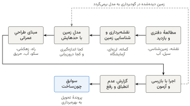
دادهها. ساختگاه همان شبکهٔ ساختگیِ 13 × 7 km فصلِ ۱۴ است: چیدمانِ W2b، بلوکِ PV شرقی و پستِ میانی (D-018). ده گمانه، دو خطِ لرزهای، رکوردِ سیسالهٔ بارش و گرما، چاهها و نیازهای آب همه ساختگی و آموزشیاند (A-349 تا A-355). پروژهٔ واقعی این عددها را از شناساییِ خودش، پروانههایش و راهبردِ آتشنشانیاش میگیرد.
برنامهها:
python -m companion.ch29.examples_a # survey, terrain, ground model
python -m companion.ch29.examples_k # levelling, drone, lens, soils29.2.1 کنترلِ نقشهبرداری و بودجهٔ خطا
ایده. هر نقطهای که پیاده میشود، از محورِ دکل تا ردیفِ شمعهای PV، از شبکهٔ کنترل مختصات میگیرد: چند نقطهٔ پایدار با مختصاتِ معلوم که ایستگاهِ مبنای GNSS یا دوربینِ نقشهبرداری روی آنها مینشیند. هر حلقهٔ این زنجیر خطای خودش را دارد: مختصاتِ مبنا، گیرندهٔ متحرکِ RTK، شاقول و سهپایه، و جابهجاییِ خودِ نقطهٔ کنترل. خطاهای مستقل با جذرِ مجموعِ مربعها جمع میشوند:
\[ \sigma = \sqrt{\sum_i \sigma_i^2} \tag{29.1}\]
این همان قاعدهٔ ترکیبِ عدمِ قطعیتِ فصلِ ۲ است. خروجیِ برنامه بودجه را با رواداریِ سه کارِ نمونه مقایسه میکند. معیار «نسبت به \(2\sigma\)» است، یعنی رواداری باید دستکم دو برابرِ انحرافِ معیار باشد:
survey control: horizontal error budget (1 sigma, m, teaching)
base station coordinates (network) 0.010
RTK rover, single fix 0.020
setting out (pole and tripod) 0.010
monument stability 0.005
combined (root sum of squares) 0.025
tolerance value ratio to 2 sigma
anchor cage centre (teaching) 0.050 1.00
PV pile row line 0.030 0.60
substation slab corner 0.020 0.40
the budget shows which tolerance the survey can hold with
margin (ratio above 1) and which needs a better method
(static GNSS or a total station from local control) -
chosen before setting out, not after the first misfitمثال 29.1 (کدام رواداری با RTK نگه داشته میشود؟) پرسش. با بودجهٔ بالا، کدامیک از سه کار را میتوان با گیرندهٔ RTK پیاده کرد؟
پاسخ. هیچکدام با حاشیه. قفسهٔ مهارِ دکل درست روی مرز است (نسبتِ 1.00). ردیفِ شمعها (0.60) و گوشهٔ دالِ پست (0.40) زیرِ مرزند.
تفسیر. این سه کار روشِ بهتری میخواهند: GNSS ایستا برای نقطههای کنترلِ محلی، سپس دوربینِ نقشهبرداری (توتالاستیشن) از همان نقطهها. این انتخاب پیش از پیادهکردن انجام میشود، نه پس از نخستین ناجوری. وارسی: \(\sqrt{0.01^2+0.02^2+0.01^2+0.005^2} = 0.025\,\text{m}\).
مرزها و قطعهها. مرزِ ساختگاه و قطعههای زمینِ فصلِ ۱۴ (U-085) مرزِ حقوقیاند. آنها را نقشهبردارِ دارای پروانه از سندِ ثبتی و نشانههای روی زمین پیاده میکند، نه با مختصاتِ نقشهٔ طراحی. حصار، راه یا ترانشهای که از مرز بگذرد، اختلافِ زمین میسازد؛ پس پیادهکردنِ مرز پیش از هر کارِ ساختمانی است.
29.2.2 ترازیابی و خطای بستار
ایده. ارتفاع را ترازیابی از یک نقطهٔ مبنای ارتفاعی (BM) میبرد و حلقه را به همان نقطه برمیگرداند. جمعِ اختلافِ ارتفاعها در حلقهٔ بسته باید صفر باشد. آنچه میماند خطای بستار \(w\) است. مشخصاتِ فنی برای آن حدی میگذارد که با جذرِ طولِ حلقه رشد میکند:
\[ |w| \le a_\text{l}\,\sqrt{\ell}, \qquad \delta_i = -w\,\frac{\ell_i}{\ell} \tag{29.2}\]
در این رابطه \(\ell\) طولِ حلقه بر حسبِ کیلومتر است، \(\ell_i\) طولِ هر ساق، و \(a_\text{l}\) ضریبِ ردهٔ کار (اینجا 12 mm، آموزشی). اگر خطا در حد باشد، به نسبتِ طول میانِ ساقها پخش میشود (\(\delta_i\)).
a closed levelling loop from benchmark BM1 (teaching)
length 6.20 km; misclosure +14 mm; allowed 12 sqrt(K) = 30 mm
leg km observed m correction mm adjusted m height m
BM1-P1 1.10 +2.315 -2.5 +2.313 1202.313
P1-P2 0.95 -0.842 -2.1 -0.844 1201.468
P2-P3 1.30 +1.976 -2.9 +1.973 1203.441
P3-P4 0.85 -3.104 -1.9 -3.106 1200.336
P4-P5 1.20 +0.521 -2.7 +0.518 1200.854
P5-BM1 0.80 -0.852 -1.8 -0.854 1200.000
the loop closes within its allowance, so the misclosure
is shared in proportion to length and BM1 returns to
1200.000 m; a loop outside it is re-observed, never
'adjusted' - the error is found, not spreadمثال 29.2 (پخشِ خطا یا پیداکردنِ خطا) پرسش. خطای بستار +14 mm روی 6.2 km است. پخشش کنیم یا دوباره بخوانیم؟
پاسخ. حدِ مجاز \(12\sqrt{6.2} = 30\,\text{mm}\) است، پس خطا پخش میشود. ساقِ اول −2.5 mm تصحیح میگیرد و BM1 دوباره روی 1200.000 m مینشیند.
تفسیر. اگر بستار بیرون از حد بود، پخشکردنش یک اشتباهِ بزرگ (خواندنِ غلطِ شاخص، جابهجاشدنِ نقطه) را در همهٔ ارتفاعها پنهان میکرد. حلقهٔ بیرون از حد دوباره خوانده میشود. وارسی: \(-14 \times 1.10/6.20 = -2.5\,\text{mm}\).
29.2.3 نقشهبرداریِ پهپادی
ایده. مدلِ رقومیِ زمین با شبکهٔ 50 m فصلِ ۱۴ برای انتخابِ جای چیزها بس بود، اما برای طراحی نه. سکوی جرثقیل، شیبِ کوتاهِ پیش از آبرو و ردیفِ میزهای PV روی زمینی در مقیاسِ متر مینشینند. پهپاد با دوربین این زمین را میسازد. اندازهٔ هر پیکسل روی زمین، یعنی فاصلهٔ نمونهٔ زمینی، از هندسهٔ دوربین به دست میآید:
\[ \text{GSD} = \frac{p_\text{x}\,H_\text{f}}{f} \tag{29.3}\]
در این رابطه \(p_\text{x}\) اندازهٔ پیکسلِ حسگر، \(H_\text{f}\) ارتفاعِ پرواز و \(f\) فاصلهٔ کانونی است. همپوشانیِ عکسها (جلو 75 %، کنار 65 %) فاصلهٔ خطهای پرواز را تعیین میکند.
a drone survey planned from the camera (teaching values)
ground sample distance at 100 m: 2.74 cm; image 150 x 100 m
65 % side and 75 % front overlap: lines 52.5 m apart, photos every 25.0 m
PV block 1.19 km2
roads, 60 m corridor x 28 km 1.68 km2
turbine areas 200 x 200 m 0.48 km2
substation and compound 0.10 km2
total 3.45 km2 -> 66 km of flight lines -> 6 flights of 20 min at 10 m/s
15 check points: mean error +0.4 cm, RMSE 2.2 cm (teaching requirement 5 cm)
the check points are surveyed separately and never used
to fit the model; the RMSE is within the requirement and
the mean shows no bias - a mean far from zero (a datum or
antenna-height error) would fail the model even with a
small spreadمثال 29.3 (نقطههای وارسی جدا از برازش) پرسش. چرا پانزده نقطهٔ وارسی را جدا اندازه میگیرند و در ساختنِ مدل به کار نمیبرند؟
پاسخ. چون نقطهای که در برازش به کار رفته، خطای مدل را در جای خودش کم نشان میدهد. نقطهٔ جدا خطای واقعی را میسنجد: میانگینِ +0.4 cm و RMSE 2.2 cm در برابرِ الزامِ آموزشیِ 5 cm.
تفسیر. RMSE پراکندگی و سوگیری را با هم میسنجد، اما میانگین سوگیری را جدا نشان میدهد. خطای مبنای ارتفاعی یا ارتفاعِ آنتن کلِ مدل را یکجا بالا یا پایین میبرد. مدلی با پراکندگیِ کم و میانگینِ دور از صفر پذیرفتنی نیست. وارسی: \(2.41\times10^{-6} \times 100 / 8.8\times10^{-3} = 2.74\,\text{cm}\).
پرواز در هر کشور قاعدهٔ خودش را دارد: مجوز، حریمِ هوایی، و نزدیکیِ فرودگاه یا خطِ برق. نقشهبرداریِ مرز و ثبت هم کارِ نقشهبردارِ دارای پروانه است. این فصل فقط منطقِ دقت و پوشش را نشان میدهد.
- چرا خطاهای مستقل با جذرِ مجموعِ مربعها جمع میشوند و نه با جمعِ ساده؟
- اگر خطای ایستگاهِ مبنا به 0.005 m برسد، بودجهٔ کل چقدر میشود؟
- حدِ بستارِ یک حلقهٔ 4 km با \(a_\text{l} = 12\,\text{mm}\) چیست؟
- اگر ارتفاعِ پرواز دو برابر شود، GSD و تعدادِ پروازها چگونه عوض میشوند؟
- چرا نقطهٔ وارسی نباید در برازشِ مدلِ پهپادی به کار رود؟
- یک خطای مبنای ارتفاعیِ 10 cm در RMSE چگونه دیده میشود و در میانگین چگونه؟
- مرزِ حقوقیِ ساختگاه را چه کسی پیاده میکند و چرا نه از روی نقشهٔ طراحی؟
- حلقهای با بستارِ 45 mm روی 6 km چه میخواهد؟
29.2.4 زمین در جای دکلها و بلوکِ PV
ایده. پیش از هر طراحیِ عمرانی، باید دانست زمین در جای هر سازه چه شکلی دارد. خروجیِ زیر برای هر توربین و برای بلوکِ PV، ترازِ زمین و شیب را از مدلِ زمینِ فصلِ ۱۴ میخواند. حجمِ برداشت و ریختنِ سکویی 40 × 40 m را هم حساب میکند که در میانگینِ ترازِ زمینش تسطیح شود. نمونهبرداریِ مدل دوخطی است، نه نزدیکترین خانه، چون درسِ فصلِ ۱۴ نشان داد خانهٔ نزدیک پلههای ساختگی میسازد.
terrain at the turbines and the PV block (ch 14 grid, 50 m cells)
place ground m slope % pad cut m3 pad fill m3 (40 x 40 m pad)
T01 1193.8 0.4 43 43
T02 1193.5 1.3 98 98
T03 1194.2 0.9 71 71
T04 1194.5 0.8 66 66
T05 1194.2 0.3 24 24
T06 1194.0 0.7 53 53
T07 1200.8 0.8 58 58
T08 1197.7 0.2 20 20
T09 1198.0 0.4 28 28
T10 1199.1 0.3 19 19
T11 1198.3 0.2 16 16
T12 1199.6 0.6 46 46
PV block: mean slope 0.4 %, 95th percentile 0.8 %
(pad levelled at its mean ground: cut and fill balance)
the plain is gentle: pads need little earthworks; a 50 m
grid hides the metre-scale ground a pad or a tracker row
sits on - the topographic survey (0.5 m contours or a
drone model) replaces it before designمثال 29.4 (زمینِ هموار، اما با چه دقتی؟) پرسش. سکوی کدام توربین بیشترین خاکبرداری را میخواهد و این عدد تا چه حد قابلِ اعتماد است؟
پاسخ. T02 با شیبِ 1.3 % حدودِ 98 m³ برداشت و همانقدر ریختن میخواهد. همهٔ سکوها روی هم کمتر از 600 m³ میشوند.
تفسیر. دشت هموار است و خاکریزیِ سکوها هزینهٔ بزرگی نیست. اما شبکهٔ 50 m زمینِ مقیاسِ متر را نمیبیند: پشتهای کوچک، آبراههای کمعمق یا تپهٔ ماسهای. این عددها غربالاند. نقشهبرداریِ توپوگرافیِ دقیق (بخش 29.2.3) پیش از طراحی جای آنها را میگیرد. وارسی: روی صفحهای با شیبِ یکنواختِ \(s\) و ضلعِ \(L\) که در میانگین تسطیح شود، حجمِ برداشت \(V = s\,L^3/8 = 0.013 \times 40^3/8 = 104\,\text{m}^3\) است. این به 98 m³ خروجی نزدیک است؛ زمینِ واقعی دقیقاً یک صفحه نیست.
نقشه، نه فقط عدد. خروجیِ مدلِ زمین چهار کاربردِ فوری دارد:
- سکوها و پیها: ترازِ سکو در میانگینِ زمین یا کمی بالاتر، تا آب از آن دور شود.
- راهها: نیمرخِ طولی برای شیب (بخش 29.3.1) و برای خاکبرداری و خاکریزی (بخش 29.3.2).
- زهکشی: جهتِ جریانِ روانآب و حوضهٔ آبریزِ هر آبرو (بخش 29.3.9).
- بلوکِ PV: شیبِ شمالی–جنوبی و شرقی–غربی برای میزهای ثابت (فصلِ ۱۰). در صدکِ ۹۵ امِ شیب (0.8 %) هیچ تسطیحی لازم نیست.
- چرا ترازِ سکو را کمی بالاتر از میانگینِ زمین میگیرند؟
- سکویی 40 × 40 m با شیبِ یکنواختِ 2 % چه حجمی برداشت میخواهد (برش و ریختنِ برابر)؟
- چرا مدلِ زمین با نمونهبرداریِ نزدیکترین خانه شیبهای ساختگی نشان میدهد؟
- صدکِ ۹۵ امِ شیبِ بلوکِ PV به چه تصمیمی کمک میکند؟
- دو عارضهٔ کوچکِ زمین را نام ببرید که شبکهٔ 50 m نمیبیند و بر طراحی اثر دارند.
29.2.5 گمانهها: زمین در چند نقطه
ایده. گمانه چاهی باریک است که زمین را لایهلایه نشان میدهد: جنسِ هر لایه، عمقِ آبِ زیرزمینی، و نتیجهٔ آزمایشهای درجا و آزمایشگاهی. مهمترین آزمایشِ درجا آزمایشِ نفوذِ استاندارد (SPT) است: تعدادِ ضربههای لازم برای راندنِ نمونهگیر به اندازهٔ 300 mm، که آن را \(N\) مینامند. آزمایشِ نفوذِ مخروط (CPT) نیمرخِ پیوستهای از مقاومتِ نوک و اصطکاکِ جداره میدهد، اما نمونه بیرون نمیآورد. هر گمانه در کد یک رکورد است:
@dataclass
class Layer:
top: float # m below ground
bottom: float
soil: str
spt_n: int | None # blows / 300 mm, uncorrected (None: not tested)
@dataclass
class Borehole:
name: str
xy: tuple[float, float]
layers: list[Layer]
water_m: float | None # groundwater depth, None: not recorded
lab: set = field(default_factory=set) # lab tests doneده گمانهٔ ساختگیِ نیروگاهِ P عمداً ناقصاند (A-349) تا آزمایشگاهِ بخشِ ت (بخش 29.5) چیزی برای یافتن داشته باشد. شکل 29.2 گمانههای هفت توربین را کنارِ هم نشان میدهد.
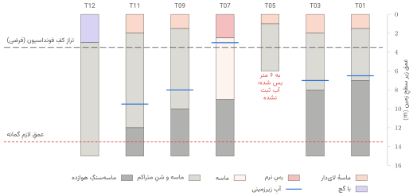
نگاهِ نخست به شکل سه پرسش میسازد که بخشِ ت آنها را دقیق میکند. چرا T05 زیرِ کفِ فونداسیون فقط 2.5 m دادهٔ زمین دارد؟ لایهٔ نرمِ T07 در نشست و سختیِ دورانی چه میکند؟ و چرا آب در T05 و T12 ثبت نشده است؟
| روش | آنچه میدهد | آنچه نمیدهد |
|---|---|---|
| گمانه با SPT | لایهها، نمونه برای آزمایشگاه، \(N\)، آب | نیمرخِ پیوسته؛ زمینِ میانِ گمانهها |
| CPT | نیمرخِ پیوسته، لایههای نازک | نمونه؛ در سنگ و شنِ درشت گیر میکند |
| چاهکِ آزمایشی | دیدنِ لایههای بالایی، نمونهٔ بزرگ | عمق (حدودِ 3–4 m) |
| شکستِ لرزهای | سرعتِ لایهها میانِ گمانهها | جنسِ لایهها؛ لایهٔ کندِ زیرِ تند |
| مقاومتِ ویژهٔ الکتریکی | آب و رس، زمینکردن (فصلِ ۲۶) | مقاومتِ مکانیکی |
29.2.6 شکستِ لرزهای: زمین میانِ گمانهها
ایده. ضربهای روی زمین موجی میسازد. موجِ مستقیم با سرعتِ لایهٔ رویی \(v_1\) به گیرندهها میرسد. موجِ شکستیافته به لایهٔ تندترِ زیرین (\(v_2\)) فرو میرود، با سرعتِ آن لایه میدود و بالا برمیگردد. نزدیکِ منبع موجِ مستقیم زودتر میرسد و دور از منبع موجِ شکستیافته. فاصلهای که این دو همزمان میرسند، فاصلهٔ تقاطع \(x_c\)، عمقِ لایهٔ تند را میدهد:
\[ t_\text{d} = \frac{x}{v_1}, \qquad t_\text{r} = \frac{x}{v_2} + \frac{2h\sqrt{v_2^2-v_1^2}}{v_1 v_2}, \qquad h = \frac{x_c}{2}\sqrt{\frac{v_2-v_1}{v_2+v_1}} \tag{29.4}\]
رابطهٔ سوم از برابر گذاشتنِ دو زمانِ رسیدن در \(x = x_c\) به دست میآید. این رابطه فقط برای دو لایهٔ تخت و \(v_2 > v_1\) درست است.
def refraction_depth(x_cross: float, v1: float, v2: float) -> float:
"""Depth (m) of a flat refractor from the crossover distance x_cross
(m) of a two-layer seismic refraction line, velocities v1 < v2."""
if v2 <= v1:
raise ValueError("the lower layer must be faster (v2 > v1)")
return x_cross / 2 * math.sqrt((v2 - v1) / (v2 + v1))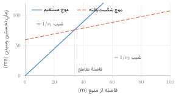
seismic refraction tied to the boreholes
line crossover m v1 / v2 m/s depth m
SL-1 along the turbine rows 34 450 / 2100 13.7
SL-2 across the wadi 18 380 / 1600 7.1
boreholes along SL-1 meet weathered sandstone at 7-8 m; the
refraction puts its 2,100 m/s layer at about 14 m: the
methods see different things (the weathered rock is not
yet fast) - geophysics spans the ground between boreholes,
and boreholes tell it what its layers areمثال 29.5 (دو روش، دو جواب) پرسش. گمانههای کنارِ SL-1 ماسهسنگِ هوازده را در 7–8 m میبینند، اما شکستِ لرزهای لایهٔ تند را در 13.7 m میگذارد. کدام درست است؟
پاسخ. هر دو. ماسهسنگِ هوازده هنوز «تند» نیست: سرعتش به لایهٔ رویی نزدیک است و موجِ شکستیافته از سنگِ سالمترِ زیرِ آن میآید.
تفسیر. ژئوفیزیک زمینِ میانِ گمانهها را میپوشاند و گمانه به آن میگوید لایههایش چیستند. نتیجهٔ لرزهای بیگمانه را نباید «عمقِ سنگ» خواند. لایهٔ کند زیرِ لایهٔ تند هم در این روش اصلاً دیده نمیشود. وارسی: \(17\sqrt{1650/2550} = 13.67\,\text{m}\).
29.2.7 درونیابی و حدهایش
ایده. پنج توربین (T02، T04، T06، T08، T10) گمانه ندارند. سادهترین برآورد برای آنها وزندهی با عکسِ فاصله است: هر گمانه با وزنی برابر با عکسِ توانی از فاصلهاش در برآورد سهم دارد.
\[ \hat z(x) = \frac{\sum_i w_i z_i}{\sum_i w_i}, \qquad w_i = d_i^{-\alpha} \tag{29.5}\]
(\(d_i\) فاصله تا گمانهٔ \(i\) است و \(\alpha\) توانِ وزندهی، اینجا ۲.)
def idw(xy, points, values, power: float = 2.0) -> float:
"""Inverse-distance-weighted estimate at xy from (points, values)."""
d = np.array([math.dist(xy, p) for p in points])
if d.min() < 1e-6:
return float(values[int(d.argmin())])
w = 1 / d ** power
return float(np.sum(w * values) / np.sum(w))top of the dense layer (m) at turbines without a borehole: IDW estimate
turbine estimate m nearest boreholes range m nearest borehole km
T02 1.7 1.5 to 2.0 0.60
T04 1.5 1.0 to 2.0 0.60
T06 1.4 1.0 to 1.5 0.60
T08 1.6 1.5 to 2.0 0.60
T10 1.8 1.5 to 2.0 0.60
BH-04 (T07) has no dense layer at all - soft clay over
medium sand: an interpolation from its neighbours would
hide it; every turbine gets its own borehole (or a CPT)
before its foundation is designed, and the ground model
states where it is interpolated and where it is measuredمثال 29.6 (درونیابیای که لایهٔ نرم را پنهان میکند) پرسش. اگر BH-04 هم مثلِ گمانههای دیگر لایهٔ متراکم داشت، درونیابی برای T07 چه میگفت؟ و حالا که ندارد، برای همسایههایش چه میگوید؟
پاسخ. برای T07 ترازی میانِ 1.5 و 2 m میداد، مثلِ همهٔ همسایهها، و رسِ نرم را هرگز نشان نمیداد. همسایههای T07 هم از گمانههایی برآورد میشوند که لایهٔ متراکم دارند، پس درونیابی هیچ اثری از رس نمیگیرد.
تفسیر. درونیابی زمینِ هموار را حدس میزند. استثنا را، که مهمترین چیزِ زمین است، هرگز حدس نمیزند. پس قاعده این است: هر توربین گمانه یا CPT خودش را پیش از طراحیِ فونداسیون میگیرد، و مدلِ زمین میگوید کجا اندازهگیری است و کجا درونیابی. وارسی: فاصلهٔ هر توربینِ بیگمانه تا نزدیکترین گمانه 0.60 km است، یعنی یک فاصلهٔ ردیف.
29.2.8 عدسیِ نرم: کاوش چند نقطه باید باشد؟
ایده. فرض کنید زیرِ بخشی از جای فونداسیونی به قطرِ 20 m یک عدسیِ نرم (لایهٔ رس یا ماسهٔ سستِ محدود) به قطرِ \(d_\text{l}\) هست، با مرکزی تصادفی. یک گمانهٔ مرکزی فقط وقتی آن را مییابد که مرکزِ فونداسیون درونِ عدسی باشد. برای عدسی به شعاعِ \(r_\text{l} = d_\text{l}/2\) که مرکزش در دایرهای به شعاعِ \(R_\text{f} + r_\text{l}\) پخش شده باشد:
\[ P_\text{f} = \frac{r_\text{l}^2}{(R_\text{f}+r_\text{l})^2} \tag{29.6}\]
(\(P_\text{f}\) احتمالِ یافتن است و \(R_\text{f}\) شعاعِ جای فونداسیون.)
برای چند نقطهٔ کاوش، برنامه همین احتمال را با شبیهسازیِ مونتکارلو میشمارد:
the chance that probes find a soft lens which lies under part of a
20 m footprint (lens centre random; Monte Carlo, 40,000 draws)
lens diameter m 1 borehole + 3 CPTs at 7 m + 6 CPTs at 8 m
5 4 % 16 % 28 %
10 11 % 38 % 64 %
20 25 % 57 % 76 %
40 44 % 72 % 84 %
(one central borehole, exact: r^2/(R+r)^2 = 4 % for a 5 m lens)
one borehole finds a small lens only by luck; more probes
raise the chance quickly, and geophysics or a CPT pattern
is what a foundation on mixed ground needs - between the
turbines, 600 m apart, a lens is never found by boreholes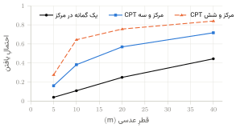
مثال 29.7 (یک گمانه بهاندازهٔ شانس) پرسش. عدسیِ 10 m را یک گمانه با چه احتمالی پیدا میکند و الگوی هفتنقطهای با چه احتمالی؟
پاسخ. 11 % در برابرِ 64 %.
تفسیر. گمانهٔ تنها برای زمینِ یکنواخت بس است. برای زمینِ ناهمگن، که لایهٔ نرمِ T07 نشانهاش است، چند CPT یا ژئوفیزیکِ محلی لازم است. میانِ توربینها، با فاصلهٔ 600 m، گمانه هرگز عدسی را پیدا نمیکند؛ راهها و ترانشهها به چاهکِ آزمایشی، آزمایشِ CBR و دیدنِ زمین در اجرا تکیه میکنند. وارسی: \(5^2/15^2 = 11\,\%\) برای گمانهٔ مرکزی.
- چرا SPT نمونه میدهد و CPT نه؟ هر کدام برای چه کاری بهتر است؟
- با \(x_c = 25\,\text{m}\)، \(v_1 = 500\) و \(v_2 = 1{,}800\,\text{m/s}\)، عمقِ لایهٔ تند چقدر است؟
- چرا شکستِ لرزهای لایهٔ کندِ زیرِ لایهٔ تند را نمیبیند؟
- در معادلهٔ 29.5، اگر \(\alpha\) بزرگ شود، برآورد به چه نزدیک میشود؟
- چرا درونیابی لایهٔ نرمِ T07 را پنهان میکند؟
- با معادلهٔ 29.6، عدسیِ 20 m را یک گمانه با چه احتمالی پیدا میکند؟
- دو جای نیروگاه را نام ببرید که گمانه در آنها کمکی نمیکند و روشِ دیگری لازم است.
- اگر \(v_2 < v_1\) باشد، تابعِ refraction_depth چه میکند و چرا؟
29.2.9 ردهبندیِ خاک: توصیفِ صحرایی و آزمایش
ایده. کارشناسِ گمانه خاک را توصیف میکند: رنگ، دانهبندیِ چشمی، تراکم و رطوبت. آزمایشگاه آن را ردهبندی میکند: درصدِ شن، ماسه و ریزدانه از دانهبندی، و برای ریزدانهها حدِ روانی (\(LL\)) و نشانهٔ خمیری (\(PI\)). در ردهبندیِ یکپارچه، که اینجا به شکلِ سادهشده و آموزشی آمده، رس از لای با «خطِ A» در نمودارِ خمیری جدا میشود:
\[ PI_A = 0.73\,(LL - 20) \tag{29.7}\]
نمونهای که \(PI\) اش بالای خطِ A (و بیش از ۴) باشد رفتارِ رسی دارد (\(C\))، وگرنه لای (\(M\)) است. درشتدانهها با درصدِ ریزدانه و ضریبهای دانهبندی ردهٔ خوبدانهبندی (\(W\)) یا بددانهبندی (\(P\)) میگیرند.
soil classes from the laboratory results (unified classification,
simplified teaching rules; A-line PI = 0.73 (LL - 20))
sample gravel sand fines LL PI class log description
BH-01 0.5 m 5 70 25 22 3 SM silty sand
BH-01 3.0 m 55 41 4 NP - GW sand and gravel
BH-04 1.0 m 0 20 80 42 22 CL silty clay, soft
BH-04 5.0 m 5 87 8 NP - SP-SM sand, medium dense
BH-07 1.0 m 10 60 30 28 7 SC silty sand, gypsum
BH-09 0.5 m 2 68 30 24 3 SM silty sand
BH-07's 'silty sand' is a clayey sand (SC) in the
laboratory: the log is a field description, the class a
test - where they disagree the test wins and the log is
annotated; the class alone never gives design valuesمثال 29.8 (لاگ میگوید ماسهٔ لایدار، آزمایش میگوید ماسهٔ رسی) پرسش. نمونهٔ BH-07 در 1 m در لاگ «ماسهٔ لایدار با گچ» است. آزمایشگاه چه میگوید و کدام معتبر است؟
پاسخ. \(LL = 28\) و \(PI = 7\). خطِ A در \(0.73 \times 8 = 5.8\) است و \(PI\) بالای آن قرار میگیرد. پس نمونه ماسهٔ رسی (SC) است.
تفسیر. توصیفِ صحرایی (STD-135) و ردهبندیِ آزمایشگاهی دو کارِ جدا هستند. جایی که با هم نمیخوانند، آزمایش معتبر است و لاگ با یادداشت اصلاح میشود. اما رده هم بهتنهایی عددِ طراحی نمیدهد: «SC» نه مقاومت دارد و نه سختی. وارسی: \(0.73 \times (28 - 20) = 5.84 < 7\).
29.2.10 از ضربههای SPT تا زاویهٔ اصطکاک و باربری
ایده. عددِ \(N\) به انرژیِ چکش بستگی دارد. همان زمین با چکشی که 45 % انرژیاش را میرساند ضربهٔ بیشتری میگیرد تا با چکشی که 80 % را میرساند. پس \(N\) به یک انرژیِ مبنا (60 %) برگردانده میشود (\(N_{60}\)). این کار فقط وقتی شدنی است که انرژیِ چکش ثبت شده باشد؛ روشِ آزمایش و گزارشِ آن در ISO 22476-3 (STD-133) آمده است. سپس رابطهای تجربی \(N_{60}\) را به زاویهٔ اصطکاکِ داخلی \(\varphi\) میبرد. از \(\varphi\) ضریبهای باربری و ظرفیتِ باربریِ نهاییِ پیِ مربعی به دست میآیند:
\[ \begin{aligned} N_q &= e^{\pi\tan\varphi}\,\tan^2\!\left(45^\circ + \tfrac{\varphi}{2}\right), \qquad N_\gamma = 2\,(N_q + 1)\tan\varphi \\ q_\text{ult} &= 1.3\,c\,N_c + \gamma D\,N_q + 0.4\,\gamma B\,N_\gamma \end{aligned} \tag{29.8}\]
در این رابطه \(c\) چسبندگی است، \(\gamma\) وزنِ واحدِ خاک، \(D\) عمقِ کفِ پی و \(B\) عرضِ آن. نشستِ کشسانِ فوری هم با رابطهٔ زیر برآورد میشود، که در آن \(E\) مدولِ خاک، \(\nu\) ضریبِ پواسون و \(I\) ضریبِ شکل است:
\[ s = \frac{q\,B\,(1-\nu^2)\,I}{E} \tag{29.9}\]
def bearing_factors(phi_deg: float) -> tuple[float, float, float]:
"""Bearing capacity factors (Nc, Nq, Ngamma) for a friction angle
(Nq and Nc of Prandtl-Reissner, Ngamma of Vesic)."""
phi = math.radians(phi_deg)
nq = (math.exp(math.pi * math.tan(phi))
* math.tan(math.pi / 4 + phi / 2) ** 2)
nc = (nq - 1) / math.tan(phi) if phi > 0 else 5.14
ng = 2 * (nq + 1) * math.tan(phi)
return nc, nq, ng
def bearing_square(c_kpa: float, phi_deg: float, gamma: float,
b_m: float, depth_m: float) -> float:
"""Ultimate bearing pressure (kPa) of a square footing, Terzaghi's
shape factors: 1.3 c Nc + q Nq + 0.4 gamma B Ngamma."""
nc, nq, ng = bearing_factors(phi_deg)
q = gamma * depth_m
return 1.3 * c_kpa * nc + q * nq + 0.4 * gamma * b_m * ngSPT N to a screening friction angle and bearing (square 20 m, 3.5 m deep)
(phi = 27.1 + 0.3 N60 - 0.00054 N60^2, a published screening fit;
energy ratio unknown: 45 to 80 % -> N60 range)
layer at 3.5 m N N60 range phi deg q_ult kPa FS 3 kPa
sand and gravel, dense 33 25 to 44 34.2 8438 2813
sand, medium dense (T07) 18 14 to 24 31.1 5362 1787
settlement under 200 kPa: 53 mm (E 60 MPa), 128 mm (E 25 MPa)
(lowest energy ratio used: the cautious end)
bearing is seldom what limits a turbine foundation on such
ground; settlement, rotational stiffness and the soft
layer at T07 are - questions for the geotechnical engineer
and ch 30, not a foundation chosen hereمثال 29.9 (باربری کم نیست؛ نشست و سختی پرسشاند) پرسش. با کمترین انرژیِ ممکنِ چکش (محتاطانهترین حالت)، ظرفیتِ باربریِ پیِ مربعیِ 20 m در عمقِ 3.5 m روی ماسهٔ متوسطِ T07 چقدر است؟ آیا باربری مسئله است؟
پاسخ. \(\varphi \approx 31^\circ\) و \(q_\text{ult} \approx 5{,}360\,\text{kPa}\)، یعنی با ضریبِ اطمینانِ ۳ حدودِ 1,790 kPa. فشارِ زیرِ فونداسیونِ توربین معمولاً کسرِ کوچکی از این است. نشست زیرِ 200 kPa اما با مدولِ 25 MPa به 128 mm میرسد.
تفسیر. روی چنین زمینی باربری بهندرت محدودکننده است. نشست، سختیِ دورانی (که بسامدِ برج را عوض میکند، فصلِ ۱۱) و لایهٔ نرمِ T07 محدودکنندهاند. اینها پرسشهایی برای مهندسِ ژئوتکنیک و فصلِ ۳۰ هستند. اینجا هیچ فونداسیونی انتخاب نمیشود. وارسی: \(N_q(30^\circ) = e^{\pi \times 0.577}\times 3 = 6.13 \times 3 = 18.4\).
29.2.11 آبِ زیرزمینی زیرِ فونداسیون
ایده. آب از دو راه بر فونداسیون اثر دارد. نیروی برکنش (شناوری) وزنِ مؤثرِ سازه را کم میکند:
\[ U = \gamma_w\,A\,h_\text{w} \tag{29.10}\]
در این رابطه \(h_\text{w}\) عمقی از پی است که زیرِ آب میرود. راهِ دوم: خاکِ زیرِ آب وزنِ مؤثرِ کمتری دارد (\(\gamma' \approx \gamma - \gamma_w\))، پس جملههای \(N_q\) و \(N_\gamma\) در معادلهٔ 29.8 کوچک میشوند.
groundwater at T07 (BH-04: 3.0 m below ground) and a foundation
whose base would sit 3.5 m down (20 m footprint, teaching)
water depth m submerged m uplift kN bearing q_ult kPa (sand phi 31)
deep (dry) 0.0 0 5,362
3.0 0.5 1,541 3,206
2.0 1.5 4,623 3,003
0.5 3.0 9,246 2,698
(water within one footprint width below the base halves
the soil weight in the width term: the dry row is a_spt's)
a rise of the water table from 3.0 to 0.5 m multiplies the
uplift by six and lowers the ultimate bearing by a sixth:
the seasonal and flood range of groundwater (question Q6
of lab D) is a design input, not a borehole footnoteمثال 29.10 (ترازِ آب، پرسشی برای طراحی) پرسش. در T07 آب در 3.0 m است. اگر در فصلِ بارانی تا 0.5 m بالا بیاید، برکنش و باربری چه میشوند؟
پاسخ. برکنش از حدودِ 1,540 به 9,250 kN میرسد، یعنی شش برابر. باربریِ نهایی از 3,210 به 2,700 kPa کم میشود. نسبت به زمینِ خشک (5,360 kPa) نصف میشود.
تفسیر. یک ترازِ آبِ ثبتشده در یک روز، طراحی را بس نیست. بازهٔ فصلی و حالتِ سیلگیر (پرسشِ Q6 در بخش 29.5) ورودیِ طراحی است، نه زیرنویسِ گمانه. وارسی: \(9.81 \times \pi \times 10^2 \times 0.5 = 1{,}541\,\text{kN}\).
29.2.12 خاکِ رمبنده و گچ
ایده. در بیابان، خاکِ خشک و سست میتواند با خیسشدن ناگهان نشست کند. ساختارِ دانههایش را پیوندهای نمکی یا رسی نگه داشتهاند و آب آن پیوندها را میشکند. گچ دو خطرِ دیگر هم دارد: سولفاتش به بتن حمله میکند و خودش در آبِ جاری حل میشود. آزمایشِ ادومتر نمونه را زیرِ بار خیس میکند و کرنشِ رمبش را میسنجد:
collapse on wetting (oedometer at 200 kPa, strain % when flooded;
classes are teaching - published ones differ)
sample strain % class settlement of 1.5 m layer mm
BH-01 0.5 m 0.4 slight 6
BH-09 0.5 m 1.2 moderate 18
BH-07 0.5 m (gypsum) 6.5 severe 98
dry, the gypsum layer at T12 is strong; wetted (a leaking
pipe, ponding beside a pad) it can settle about 100 mm
under a building or a tank: keep water away by design -
falls away from structures, no soakaways near them - and
ask the engineer whether to replace or pre-wet the layerمثال 29.11 (آب را از پی دور نگه دارید) پرسش. لایهٔ 1.5 m گچدار در T12 با کرنشِ رمبشِ 6.5 % زیرِ ساختمانی سبک خیس شود. چقدر نشست میکند؟
پاسخ. حدودِ 98 mm. برای ساختمان یا مخزن این بسیار زیاد است.
تفسیر. علاج دو بخش دارد. طراحیِ زهکشی آب را از سازه دور میبرد: شیب به بیرون، بیچاهِ جذبی نزدیکِ پی، و لولههای آبِ بینشت با آزمایشِ فشار. مهندسِ ژئوتکنیک هم دربارهٔ برداشتنِ لایه، خیسکردن و تراکمِ پیش از ساخت، یا پیِ عمیقتر تصمیم میگیرد. ردهٔ «شدید» آموزشی است و ردهبندیهای منتشرشده با هم فرق دارند. وارسی: \(0.065 \times 1{,}500 = 97.5\,\text{mm}\).
29.2.13 بافتِ لرزهای و سیل، و حدهای شناسایی
دو بافتِ دیگر هم بخشی از مدلِ زمیناند:
- لرزهخیزی: ردهٔ ساختگاه (از سرعتِ موجِ برشیِ 30 m بالایی یا از آزمایشها) و شتابِ طراحی را آییننامهٔ لرزهایِ محل تعیین میکند. این فصل عددی برای آن نمیگذارد (پرسشِ Q8 در بخش 29.5). روانگرایی در ماسهٔ سستِ زیرِ آب هم پرسشی برای مهندسِ ژئوتکنیک است.
- سیل: ترازِ سیلِ وادی و راهِ آبِ بیرونزده از آبراهه در بخش 29.10.3 بررسی میشود. نتیجهٔ مهمش این است که فاصله بهتنهایی حفاظت نیست.
حدهای شناسایی را بنویسید. هر گزارشِ زمین بخشی دارد که میگوید زمین کجا دیده نشده است: میانِ گمانهها، زیرِ عمقِ گمانهها، در فصلی که آب اندازهگیری نشده، و آزمایشهایی که انجام نشدهاند. این بخش همان دفترِ عدمِ قطعیتِ فصلِ ۲ برای زمین است و هر سطرش مالک و راهِ بستن دارد. چارچوبِ آییننامهایاش در EN 1997-2:2024 (STD-134) آمده است: برنامهریزیِ شناسایی، روشها و گزارشِ شناسایی. این فقط نمونهای از ساختار است، نه آییننامهٔ این ساختگاه.
گودبرداری و ترانشه در خاکِ سست یا زیرِ آب ریزش میکند. پایدارسازیِ دیواره و ورودِ ایمن به گود کارِ برنامهٔ ایمنیِ اجرا است (فصلهای ۳۲ و ۴۹)، نه انتخابِ کارگر در محل. هیچکس به گودِ بیپایدارسازی وارد نمیشود.
- نمونهای با \(LL = 45\) و \(PI = 12\) رس است یا لای؟
- چرا \(N\) بی ثبتِ انرژیِ چکش برای طراحی بس نیست؟
- \(N_q\) را برای \(\varphi = 34^\circ\) حساب کنید.
- چرا روی ماسهٔ متراکم، نشست و سختیِ دورانی از باربری مهمترند؟
- نیروی برکنش روی فونداسیونی به قطرِ 18 m که 1 m زیرِ آب است چقدر است؟
- آبِ زیرزمینی از چه دو راهی بر فونداسیون اثر میگذارد؟
- سه کارِ طراحی را نام ببرید که خاکِ رمبنده را خشک نگه میدارند.
- «حدهای شناسایی» در گزارشِ زمین چه چیزهایی را فهرست میکند؟
- چرا ردهٔ SC بهتنهایی عددِ طراحی نمیدهد؟
- چه کسی شتابِ طراحیِ لرزهای را تعیین میکند؟
29.2.14 از آزمون تا مقدارِ طراحی
برنامه:
python -m companion.ch29.examples_rایده. چند آزمون روی یک لایهٔ خاک عددهای متفاوتی میدهند. طراح میانگین را به کار نمیبرد، کمترین عدد را هم نه. او یک برآوردِ محتاطانه از مقداری به کار میبرد که سازوکارِ گسیختگی واقعاً به آن حساس است. با \(n\) آزمون، میانگینِ \(\bar x\)، انحرافِ معیارِ \(s\) و ضریبِ استیودنتِ \(t\) در سطحِ 95 %، دو برآورد چنیناند:
\[ \begin{aligned} x_\text{k,mean} &= \bar x - t\,\frac{s}{\sqrt n} \\ x_\text{k,local} &= \bar x - t\,s\,\sqrt{1 + \frac{1}{n}} \end{aligned} \tag{29.11}\]
برآوردِ نخست برای پیِ بزرگی است که خاکِ زیرش را میانگین میگیرد. برآوردِ دوم برای نقطهای کوچک است، مانندِ نوکِ شمع، که شاید روی همان عدسیِ ضعیف بنشیند.
a cautious value of the friction angle from eight tests (T07 area)
tests: 31, 34, 29, 33, 36, 30, 32, 35 degrees
mean 32.5, standard deviation 2.45, t(0.95, 7) = 1.89
cautious estimate of the MEAN (large raft, averaging): 30.9
cautious estimate of a LOCAL value (pile tip, small area): 27.6
lowest single test: 29
a raft 24 m wide averages the ground under it, so the mean
is what matters; a pile tip sits in one spot and may meet
the weak lens - the same eight tests give two different
cautious values, and the geotechnical engineer chooses by
the mechanism, not by habitمثال 29.12 (یک مجموعه آزمون، دو مقدار) پرسش. از هشت آزمونِ زاویهٔ اصطکاک در محدودهٔ T07، برآوردِ محتاطانه برای پیِ گسترده و برای نوکِ شمع چیست؟
پاسخ. برای میانگین 30.9 درجه و برای مقدارِ محلی 27.6 درجه. کمترین آزمون 29 درجه است.
تفسیر. پیِ 24 m خاکِ زیرش را میانگین میگیرد. نوکِ شمع در یک نقطه است و شاید به عدسیِ ضعیف برسد. پس یک مجموعه آزمون دو مقدارِ محتاطانه میدهد و مهندسِ ژئوتکنیک بر پایهٔ سازوکار انتخاب میکند، نه از روی عادت. آییننامهٔ پروژه میگوید این برآورد چگونه تعریف و با ضریبهای جزئی ترکیب شود (STD-134). وارسی: \(32.5 - 1.89 \times 2.45/\sqrt 8 = 30.9\).
29.2.15 شیبِ دیوارهٔ گودِ موقت
ایده. دیوارهٔ گود در ماسهٔ بیچسبندگی را میتوان «شیبِ بیپایان» فرض کرد. ضریبِ اطمینانِ آن نسبتِ تانژانتِ زاویهٔ اصطکاک به تانژانتِ شیب است. اگر آبِ زیرزمینی موازیِ شیب از دیواره بیرون بزند، وزنِ مؤثرِ خاک کم میشود و ضریبِ اطمینان تقریباً نصف میشود:
\[ \begin{aligned} F_\text{dry} &= \frac{\tan\varphi}{\tan\beta} \\ F_\text{seep} &= \frac{\gamma_\text{sat} - \gamma_\text{w}}{\gamma_\text{sat}}\,\frac{\tan\varphi}{\tan\beta} \end{aligned} \tag{29.12}\]
در این رابطه \(\beta\) زاویهٔ شیب است، \(\gamma_\text{sat}\) وزنِ مخصوصِ خاکِ اشباع و \(\gamma_\text{w}\) وزنِ مخصوصِ آب.
side slope of a temporary excavation in dense sand (phi 36 deg, c = 0)
slope (v:h) angle FS dry FS with seepage parallel to slope
1:1.0 45.0 0.73 0.37
1:1.5 33.7 1.09 0.56
1:2.0 26.6 1.45 0.74
seepage roughly halves the factor of safety: a 1:1.5 side
that just stands in dry sand slides when groundwater flows
out of it, and even 1:2 fails - which is why excavations
near the wadi need the water lowered first or supported
sides, and why nobody enters a trench whose side has not
been checked by a competent person (site procedure)مثال 29.13 (آب، دیواره را میلغزاند) پرسش. دیوارهٔ 1:1.5 در ماسهٔ متراکم (\(\varphi = 36^\circ\)) در حالتِ خشک و با تراوش چه ضریبِ اطمینانی دارد؟
پاسخ. 1.09 در حالتِ خشک و 0.56 با تراوش.
تفسیر. دیوارهای که در ماسهٔ خشک بهزحمت میایستد، وقتی آب از آن بیرون میزند میلغزد. حتی شیبِ 1:2 هم شکست میخورد. گودهای کنارِ وادی یا با پایینآوردنِ آب از پیش کنده میشوند، یا با دیوارهٔ نگهداشته. هیچکس وارد ترانشهای نمیشود که دیوارهاش را فردِ صلاحیتدار وارسی نکرده باشد. قاعدههای نگهداری و ورود در روالِ ساختگاه است (فصلِ ۳۲). وارسی: \(\tan 36^\circ/\tan 33.7^\circ = 0.727/0.667 = 1.09\).
29.3 ب. مبنای طراحیِ عمرانی
مبنای طراحیِ عمرانی سندی است که پیش از هر نقشه میگوید هر سازهٔ عمرانی با چه بار، چه خطر و چه حدی طراحی میشود. سازهها راه، سکو، ترانشه، زهکشی، آبرو و سکوی پستاند. این بخش هر کدام را با یک محاسبهٔ کوچک و یک پرسشِ طراحی پیش میبرد. عددها آموزشیاند (A-353، A-354). حدهای حمل از شرکتِ حمل و سازندهٔ توربین میآیند و هنوز باز هستند (U-106).
برنامهها:
python -m companion.ch29.examples_b # roads, pads, drainage, erosion, trench
python -m companion.ch29.examples_m # earthworks, traffic, ditches, culverts29.3.1 راهها: شیب، قوس و پهنا
ایده. راهِ دسترسی برای خودروهای عادی ساخته نمیشود؛ برای بارهای استثنایی ساخته میشود: پرهای بلندتر از 60 m، مقطعِ برج و ناسل. سه محدودیت شکلِ راه را تعیین میکنند. شیبِ طولی با کششِ کشنده محدود میشود. شعاعِ قوس با طولِ صلبِ بار. پهنای اضافه در قوس را هم «مسیرِ جاروبِ» خودرو میخواهد. برای طولِ صلبِ \(L\) که روی قوسی با شعاعِ داخلیِ \(R\) میگردد، پهنای اضافه تقریباً چنین است:
\[ \Delta b = R - \sqrt{R^2 - L^2} \tag{29.13}\]
the main site track (x = 7,600 m, 5.6 km) from the ch 14 terrain
highest grade 6.1 % over a 50 m step; mean 0.4 %
teaching limits for blade and tower transport (from the
transport company and OEM, U-106): 8 % loaded, 12 % with
a tow vehicle; the steepest 50 m step (6.1 %) is below
the first, but the survey's 1 m resolution, not the 50 m
grid, decides the short steep pieces (culvert approaches,
wadi banks)
widening on a curve for a rigid length L (w = R - sqrt(R^2 - L^2))
inside radius m L 20 m (rear-steered) L 40 m (fixed), teaching
60 3.4 15.3
80 2.5 10.7
120 1.7 6.9
200 1.0 4.0
a tight bend needs metres of extra width (and cleared
overhang for the blade tip) - the swept path of the real
vehicle is checked on the drawing, junction by junction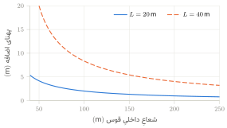
مثال 29.14 (قوسِ تنگ، چند متر پهنای اضافه) پرسش. در قوسی با شعاعِ داخلیِ 60 m، بارِ صلبِ 40 m چقدر پهنای اضافه میخواهد؟ اگر تریلی فرمانِ عقب داشته باشد و طولِ صلبِ مؤثر 20 m شود چه؟
پاسخ. 15.3 m در برابرِ 3.4 m.
تفسیر. فرمانِ عقب یا قوسِ بازتر هزینهٔ راه را بسیار کم میکند. اما معادلهٔ 29.13 فقط یک غربال است: مسیرِ جاروبِ خودروی واقعی، با بیرونزدگیِ نوکِ پره بر فراز زمین و مانعها، در نقشه و برای هر تقاطع جداگانه وارسی میشود. وارسی: \(60 - \sqrt{3600 - 1600} = 60 - 44.7 = 15.3\,\text{m}\).
29.3.2 خطِ پروژه و جابهجاییِ خاک
ایده. راه روی خطِ پروژه ساخته میشود، نه روی زمینِ طبیعی. جایی که خط زیرِ زمین است خاک برداشته میشود و جایی که بالای آن است خاک ریخته میشود. خاکِ برداشته پس از کوبیدن کمتر جا میگیرد (اینجا 90 %). نمودارِ جابهجاییِ خاک مجموعِ پیوسته را در طولِ راه نشان میدهد:
\[ M(s) = \sum_{0}^{s} \big(0.9\,V_\text{cut} - V_\text{fill}\big) \tag{29.14}\]
شاخهٔ بالارو برداشت است و شاخهٔ پایینرو ریختن. هر جا نمودار صفر را قطع کند، برداشت و ریختنِ دو طرف هموزناند و خاک در طولِ راه جابهجا میشود، بیخاکریزی از بیرون و بیدپوی اضافه.
earthworks along the main track (x = 7,600 m)
first try: ground smoothed over 450 m - it crosses the wadi
at s = 800 m on 4.2 m of fill: an embankment that dams it
corrected: no fill above the culvert crest (1.5 m over the bed)
steepest grade of the corrected line 5.1 % (limit 8 %, lesson B)
cut 4,031 m3 (bank), fill 2,422 m3; cut shrinks to 90 % when compacted
end of the mass diagram +1,205 m3 (+ surplus, - borrow)
largest ordinate 1,538 m3
the diagram crosses zero 3 times: between crossings cut
and fill balance, and the material moves along the road
instead of to a tip or from a borrow pit
a grade line is chosen for drainage and the vehicles
first (lesson B), and for balance second; the mass
diagram shows the cost of that choice in haul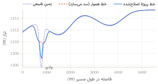
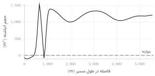
مثال 29.15 (خطِ همواری که سد میسازد) پرسش. نخستین تلاش خطِ پروژه را زمینِ هموارشده در 450 m گرفت. این خط در گذر از وادی چه میکند و چگونه اصلاح میشود؟
پاسخ. در s = 800 m خط 4.2 m بالای بسترِ وادی است: خاکریزیای که وادی را میبندد. خطِ اصلاحشده خاکریزی را به ترازِ تاجِ آبرو، یعنی 1.5 m بالای بستر، محدود میکند. بیشترین شیبش 5.1 % است و زیرِ حدِ آموزشیِ 8 % میماند.
تفسیر. این خطا را خواندنِ خروجی در برابرِ زمین پیدا کرد، نه خودِ برنامه. خطِ پروژه اول برای زهکشی و خودروها انتخاب میشود و سپس برای موازنهٔ خاک. پس از اصلاح، راه 1,205 m³ خاکِ اضافه دارد که به خاکریزیِ سکوها میرود (بخش 29.4.11). وارسی: \(4{,}031 \times 0.9 - 2{,}422 = 1{,}206\,\text{m}^3\).
29.3.3 ترافیکِ ساخت و قانونِ توانِ چهارم
ایده. آسیبی که یک محور به روسازی میزند تقریباً با توانِ چهارمِ بارِ آن محور بالا میرود. پس ترافیک را به تعدادِ محورِ استانداردِ همارز (ESAL، با محورِ 80 kN) میشمارند:
\[ n_\text{E} = \sum_{a} \left(\frac{P_a}{80\,\text{kN}}\right)^{4} \tag{29.15}\]
(جمع روی همهٔ محورهای همهٔ گذرهاست و \(P_a\) بارِ محورِ \(a\).)
construction traffic on the site roads (fourth-power rule, 80 kN axle)
class loads ESAL per round trip ESAL share
concrete trucks (8 m3) 1,042 5.48 5,710 14 %
aggregate trucks (25 t) 4,800 2.85 13,660 34 %
water trucks (20 m3) 3,780 4.52 17,083 43 %
tower sections and nacelles 72 25.04 1,803 5 %
blades 36 2.02 73 0 %
crane and ballast 40 32.27 1,291 3 %
total 39,619 standard axles
the turbine parts are the heaviest single loads, but the
many aggregate and water trucks wear the road most: a
pavement designed for the abnormal loads alone would
fail early; the spraying trucks wear the very road they
keep from dusting - binders on the busiest sections or a
lower speed (lesson N) cut both the water and the wearمثال 29.16 (کامیونهای کوچک، آسیبِ بزرگ) پرسش. کدام دسته بیشترین آسیب را به راهِ ساختگاه میزند؟
پاسخ. کامیونهای آبپاش (43 %) و کامیونهای سنگدانه (34 %). قطعههای توربین، با آنکه سنگینترین بارِ تکیاند، روی هم فقط 5 % سهم دارند.
تفسیر. روسازیای که فقط برای بارِ استثنایی طراحی شود زود خراب میشود. کامیونِ آبپاش همان راهی را میساید که از گرد و خاک نگهش میدارد. چسباننده روی پرترددترین بخش و سرعتِ کمتر هم آب را کم میکنند و هم سایش را (بخش 29.4.10). وارسی: کامیونِ بتنِ پر: \((60/80)^4 + 2\,(100/80)^4 = 0.32 + 4.88 = 5.20\).
29.3.4 سنگدانه روی بسترِ ضعیف
ایده. لایهٔ سنگدانه بارِ چرخ را روی سطحِ بزرگتری از بسترِ راه پخش میکند. با قاعدهٔ سادهی پخشِ «۲ به ۱»، فشار در عمقِ \(z\) زیرِ سطحی به ابعادِ \(a \times b\) چنین است:
\[ p(z) = \frac{F}{(a+z)(b+z)} \tag{29.16}\]
ضخامت آنقدر انتخاب میشود که \(p\) روی بستر از حدِ مجاز کمتر شود. اینجا حدِ مجاز با قاعدهٔ غربالیِ \(30 \times \text{CBR}\) کیلوپاسکال گرفته شده است. نسبتِ باربریِ کالیفرنیا (CBR) مقاومتِ بستر را در برابرِ یک مصالحِ مرجع میسنجد.
aggregate thickness so the subgrade is not overloaded (2:1 spread)
(allowable on subgrade ~ 30 x CBR kPa: a screening rule; teaching)
CBR % allowable kPa thickness needed m
3 90 0.52
8 240 0.20
15 450 0.07
weak, wet subgrade (CBR 3) needs more than twice the
stone of a firm one; CBR tests along the route (lesson C)
set the thickness section by section, and a geotextile
on soft ground is a design choice, not a habitمثال 29.17 (بسترِ خیس، سنگِ بیشتر) پرسش. برای چرخِ 60 kN روی بستری با CBR ۳، چه ضخامتی لازم است؟
پاسخ. حدودِ 0.52 m، یعنی بیش از دو برابرِ بستری با CBR ۸.
تفسیر. CBR در طولِ راه یکسان نیست و با رطوبت پایین میآید. پس آزمایشهای CBR در طولِ مسیر ضخامت را بخش به بخش تعیین میکنند. ژئوتکستایل روی زمینِ نرم یک تصمیمِ طراحی است، نه یک عادت. وارسی: \(60/(0.3 + 0.52)^2 = 89\,\text{kPa} \le 90\).
- پهنای اضافهٔ قوسی با شعاعِ 100 m برای طولِ صلبِ 30 m چقدر است؟
- چرا خطِ پروژه اول برای زهکشی انتخاب میشود و سپس برای موازنهٔ خاک؟
- در نمودارِ جابهجاییِ خاک، شاخهٔ بالارو چه معنایی دارد و قطعِ صفر چه؟
- محورِ 120 kN چند محورِ استاندارد است؟
- چرا ترافیکِ کامیونهای آب و سنگدانه از بارهای استثنایی آسیبرسانتر است؟
- فشارِ چرخِ 60 kN روی سطحِ 0.3 × 0.3 m در عمقِ 0.3 m چقدر است؟
- بستری با CBR ۱۵ چه ضخامتی میخواهد و چرا تقریباً هیچ؟
- چرا شیبِ 6.1 % در گامِ 50 m برای تصمیم بس نیست؟
29.3.5 بارهای غیرعادی و فرسایشِ راه
ایده. درسِ ترافیک (بخش 29.3.3) برای بخشهای برج و ناسل ده محورِ 100 kN فرض کرده بود. فصلِ ۳۱ خودروهای واقعی را تعیین کرد: ناسل روی ۱۶ محور و بخشِ پایهٔ برج روی ۱۴ محور (مثال 31.1). با همان قانونِ توانِ چهارم، سهمِ این بارها دوباره حساب میشود.
road wear of the abnormal loads with chapter 31's trailers
nacelle: 16 axles at 119 kN -> 88.6 ESAL a round trip
base section: 14 axles at 106 kN -> 52.8 ESAL a round trip
other sections and hubs: 25.04 ESAL (lesson M's assumption)
turbine parts: 1,803 ESAL in lesson M, 2,899 now
site total 39,619 -> 40,715 standard axles (+2.8 %)
the heavier, fewer axles of the real trailers add about a
thousand standard axles, yet the aggregate and water trucks
still wear the road most; what the nacelle trailer changes
is the single pass - a 119 kN axle on a wet subgrade can
rut it at once, so the soft stretches are proof-rolled
before the first convoy (ch 31)مثال 29.18 (محورِ سنگین در یک عبور) پرسش. خودروهای فصلِ ۳۱ فرسایشِ کلِ راهها را چقدر تغییر میدهند؟
پاسخ. سهمِ بارهای توربین از 1,803 به حدودِ 2,900 محورِ استاندارد میرسد. کلِ راهها حدودِ 2.8 % بیشتر میشود.
تفسیر. نتیجهٔ درسِ ترافیک برقرار میماند: کامیونهای سنگدانه و آب بیشترین فرسایش را میسازند. اما محورِ 119 kN در یک عبور هم اثر دارد. روی بسترِ خیس، یک عبور میتواند شیار بیندازد. پس بخشهای نرمِ راه پیش از نخستین کاروان با غلتکِ سنگین آزموده میشوند (فصلِ ۳۱). این وارسیِ مقاومت است، نه خستگی. وارسی: \(16 \times (119/80)^4 = 78.3\) محورِ استاندارد در رفت، بهاضافهٔ کشنده و برگشت.
29.3.6 سکوی جرثقیل
ایده. سنگینترین بارِ متمرکزِ کلِ ساخت زیرِ پایهٔ جرثقیلِ اصلی است، در لحظهٔ بلندکردنِ ناسل یا روتور. بار روی تشکِ چوبی یا فولادی پخش میشود و سپس در عمق با معادلهٔ 29.16. پرسش این نیست که سطحِ سکو تحمل میکند یا نه؛ پرسش این است که لایهٔ ضعیفِ زیرین در عمق چه فشاری میبیند.
crane pad under the worst outrigger (2,400 kN on a 2.5 x 6 m mat, teaching)
depth below mat m pressure kPa layer there
0.0 160 pad aggregate
1.0 98 silty sand (top)
2.5 56 silty clay, soft (T07)
on firm ground the pressure falls quickly with depth; at
T07 the soft clay 2.5 m down still sees about 60 kPa -
the crane company's load data and a pad check by the
civil engineer are needed there before the main lift
(ch 31 plans the lifts)مثال 29.19 (فشار در عمق، روی رسِ نرم) پرسش. زیرِ تشکِ 2.5 × 6 m با بارِ 2,400 kN، لایهٔ رسِ نرمِ T07 در 2.5 m زیرِ تشک چه فشاری میبیند؟
پاسخ. حدودِ 56 kPa، در برابرِ 160 kPa زیرِ خودِ تشک.
تفسیر. برای رسِ نرم (N = 4) این فشار کم نیست. بارِ واقعیِ پایه از جدولِ بارِ شرکتِ جرثقیل میآید و وارسیِ سکو کارِ مهندسِ عمران است. تراکمِ سکو هم پیش از بلندکردن آزمایش میشود (مثال 29.27). برنامهریزیِ بلندکردن در فصلِ ۳۱ است. وارسی: \(2{,}400/(5.0 \times 8.5) = 56.5\,\text{kPa}\).
29.3.7 آب در ترانشهٔ کابل
ایده. جایی که آبِ زیرزمینی بالاتر از کفِ ترانشه است، آب به ترانشه میریزد. جریانِ هر متر از هر دیواره را رابطهٔ دوپوئی تقریب میزند:
\[ q' = \frac{k\,(h_1^2 - h_2^2)}{2\,R_\text{i}} \tag{29.17}\]
در این رابطه \(k\) نفوذپذیری است، \(h_1\) و \(h_2\) ارتفاعِ آب بالای لایهٔ نفوذناپذیر پیش و پس از پمپاژ، و \(R_\text{i}\) شعاعِ اثر.
water in an open cable trench where groundwater is shallow (Dupuit)
place k m/s water below ground m inflow per 100 m L/s
wadi crossing 1e-04 1.0 0.97
near T07 (clay) 1e-06 3.0 dry
only the wadi crossing meets water at trench depth: there
the crossing is timed for the dry season or pumped, and
the pumped water is settled before release (lesson C)مثال 29.20 (ترانشه فقط در گذرِ وادی خیس است) پرسش. در کدام بخش آب به ترانشه میریزد و چه باید کرد؟
پاسخ. فقط در گذرِ وادی، با حدودِ 1 L/s در هر 100 m. کنارِ T07 آب پایینتر از کفِ ترانشه است.
تفسیر. گذرِ وادی برای فصلِ خشک برنامهریزی میشود، یا با پمپاژ اجرا میشود. آبِ پمپشده پیش از رهاسازی تهنشین میشود (بخش 29.4.9). وارسی: \(10^{-4}(5^2 - 4.7^2)/60 \times 2 \times 100 = 0.97\,\text{L/s}\).
29.3.8 مرزِ عمران با رشتههای دیگر
کارِ عمرانی به همهٔ رشتهها میرسد. بیشترِ خطاهای ساختگاه روی همین مرزها رخ میدهند: جای ناجورِ لوله در فونداسیون، ترانشهای که از آبرو میگذرد، یا سکویی که برای جرثقیلِ اشتباه طراحی شده است. جدولِ زیر مرزها را با صاحب و دادهٔ هر کدام فهرست میکند. هر سطر یک قلم در ثبتِ واسطهای فصلِ ۱۸ است.
| مرز | عمران چه میدهد | از دیگری چه میگیرد | فصل |
|---|---|---|---|
| فونداسیونِ توربین | گودبرداری، سکو، دسترسی، دادهٔ زمین | بار، هندسه، قفسهٔ مهار، رواداریها | ۱۱، ۳۰ |
| پستِ برق | سکو، زهکشی، حوضچهٔ روغن، کانالِ کابل | جای تجهیزات، بار، حریمها | ۲۵ |
| کابلها | ترانشه، گذرها، بسترِ ماسه، نشانهگذاری | مسیر، عمق، مقاومتِ گرمایی خاک | ۲۴ |
| زمینکردن | الکترودها در گود، مقاومتِ ویژهٔ خاک | طرحِ شبکهٔ زمین | ۲۶ |
| حمل و جرثقیل | راه، قوسها، سکو، پهنای کار | ابعاد و بارِ خودروها، جدولِ بارِ جرثقیل | ۳۱ |
| آتشنشانی | دسترسی، آب، مهارِ روانآب | راهبردِ آتشنشانی، الزامِ مرجع | ۳۲، بخشِ ج |
| محیطِ زیست | فرسایش، رسوب، خاکِ رویی، بازگرداندن | شرطهای پروانه، زیستگاهها | ۳۳ |
| PV | تسطیح، راههای میانی، زهکشی | جای میزها، آزمونِ کششِ شمع | ۱۰، ۳۰ |
- چرا وارسیِ سکوی جرثقیل به لایهٔ زیرین نگاه میکند و نه به سطحِ سکو؟
- فشارِ 2,400 kN روی تشکِ 2.5 × 6 m در عمقِ 1 m چقدر است؟
- اگر نفوذپذیری صد برابر کم شود، جریانِ آب به ترانشه چه میشود؟
- آبِ پمپشده از ترانشه را پیش از رهاسازی چه باید کرد؟
- سه مرزِ عمران با برق را نام ببرید که اگر دیر هماهنگ شوند گران میشوند.
- بارِ پایهٔ جرثقیل از کجا میآید؟
29.3.9 زهکشی: روشِ استدلالی و آبروها
ایده. راهِ اصلی از وادی میگذرد و آبرو باید سیلِ حوضهای 3.2 km² را از زیرِ راه رد کند. برای حوضهٔ کوچک، روشِ استدلالی دبیِ اوج را از شدتِ بارش در مدتی برابر با زمانِ تمرکز حوضه میدهد. زمانِ تمرکز زمانی است که آب از دورترین نقطه به خروجی میرسد:
\[ \begin{aligned} Q &= 0.278\,C\,i\,A \\ t_\text{c} &= 0.0195\,L_\text{c}^{0.77}\,S^{-0.385} \end{aligned} \tag{29.18}\]
در این رابطهها \(Q\) بر حسبِ m³/s است، \(C\) ضریبِ روانآب، \(i\) شدت بر حسبِ mm/h و \(A\) مساحت بر حسبِ km². در رابطهٔ زمانِ تمرکز (کرپیچ)، \(L_\text{c}\) طولِ جریان بر حسبِ متر است، \(S\) شیب، و \(t_\text{c}\) بر حسبِ دقیقه به دست میآید. ظرفیتِ لوله یا آبراهه را فرمولِ مانینگ میدهد:
\[ Q = \frac{1}{n}\,A_\text{w}\,R_\text{h}^{2/3}\,S^{1/2}, \qquad R_\text{h} = \frac{A_\text{w}}{P_\text{w}} \tag{29.19}\]
در این رابطه \(A_\text{w}\) سطحِ مقطعِ جریان است، \(P_\text{w}\) محیطِ خیس، \(R_\text{h}\) شعاعِ هیدرولیکی و \(n\) ضریبِ زبری.
def rational_peak(c: float, i_mm_h: float, area_km2: float) -> float:
"""Peak runoff (m3/s) by the rational method, Q = 0.278 C i A."""
return 0.278 * c * i_mm_h * area_km2
def kirpich_tc(length_m: float, slope: float) -> float:
"""Time of concentration (min) of a small catchment (Kirpich)."""
return 0.0195 * length_m ** 0.77 * slope ** -0.385
def manning_q(n: float, area_m2: float, perimeter_m: float,
slope: float) -> float:
"""Flow (m3/s) in an open channel or a pipe running full (Manning)."""
r = area_m2 / perimeter_m
return area_m2 * r ** (2 / 3) * math.sqrt(slope) / n
def pipe_full_q(n: float, d_m: float, slope: float) -> float:
"""Full-bore capacity (m3/s) of a circular culvert or pipe."""
return manning_q(n, math.pi * d_m ** 2 / 4, math.pi * d_m, slope)the site road crossing the wadi: design flow and culverts
catchment 3.2 km2, flow length 2.5 km, slope 1 %
time of concentration (Kirpich) 47 min
return yrs 1-h rain mm intensity at tc mm/h peak Q m3/s 0.9 m pipes
10 21.6 24.8 7.7 8
25 24.8 28.6 8.9 10
50 27.3 31.4 9.8 10
one 0.9 m corrugated pipe at 1 % carries 0.98 m3/s full
(C 0.35, intensity scaled from the 1-hour value by
(60/tc)^0.6 - both teaching); a ford or a box culvert
may be cheaper than a row of pipes - and the road must
survive the storm it is not designed for (overtopping
path, scour protection)شدتِ بارش در زمانِ تمرکز از بارشِ یکساعته با ضریبِ آموزشیِ \((60/t_\text{c})^{0.6}\) به دست آمده است. در پروژهٔ واقعی منحنیِ شدت–مدت–فراوانیِ محل این کار را میکند. بارشِ یکساعته با دورهٔ بازگشتِ هر سطر از برازشِ گامبلِ بخشِ ث میآید (بخش 29.6.1).
مثال 29.21 (چند لوله برای سیلِ ۵۰ ساله؟) پرسش. با \(C = 0.35\)، دبیِ اوجِ سیلِ ۵۰ ساله و تعدادِ لولههای 0.9 m لازم چیست؟
پاسخ. \(t_\text{c} = 47\,\text{min}\)، شدت 31.4 mm/h و \(Q = 9.8\,\text{m}^3/\text{s}\). هر لوله پر 0.98 m³/s میبرد، پس ده لوله لازم است.
تفسیر. ده لولهٔ کنارِ هم گران است و زود پر از رسوب میشود. گذرگاهِ آبگذر (فورد) یا آبروی جعبهای شاید ارزانتر باشد. و راه باید از سیلی هم که برایش طراحی نشده جان سالم به در ببرد: مسیرِ سرریز و محافظت در برابرِ آبشستگی (بخش 29.3.10). وارسی: \(0.278 \times 0.35 \times 31.4 \times 3.2 = 9.78\,\text{m}^3/\text{s}\).
29.3.10 ترازِ آب پشتِ آبرو و گرفتگی
ایده. وقتی دهانهٔ لوله زیرِ آب میرود، لوله مانندِ روزنه کار میکند. ترازِ آبِ پشتِ آبرو \(H_\text{w}\) بالا میرود تا دبی از لولهها بگذرد:
\[ Q_1 = C_\text{d}\,A_\text{p}\,\sqrt{2g\left(H_\text{w} - \tfrac{D_\text{p}}{2}\right)} \tag{29.20}\]
در این رابطه \(Q_1\) دبیِ هر لوله است، \(A_\text{p}\) سطحِ مقطعِ لوله، \(D_\text{p}\) قطرِ آن و \(C_\text{d}\) ضریبِ تخلیه. این مدل وقتی \(H_\text{w}/D_\text{p}\) از حدودِ ۱٫۲ بیشتر است خوب کار میکند و پایینتر از آن فقط تقریبی است. اگر \(H_\text{w}\) از تاجِ راه بالاتر رود، آب از روی راه سرریز میکند.
headwater at the wadi culverts (inlet as an orifice, Cd 0.6: fair
once HW/D > ~1.2, rough below it; road crest 1.5 m above the invert)
storm Q m3/s pipes open HW m overtops?
10-year 7.7 10 0.66 no
50-year 9.8 10 0.78 no
100-year 10.6 10 0.85 no
50-year, 3 blocked 9.8 7 1.13 no
50-year, 5 blocked 9.8 5 1.79 yes
2 x 50-year 19.6 10 1.79 yes
the pipes carry the design storm with room to spare, but
wadi floods carry sediment and brush: with half the pipes
blocked the 50-year storm overtops the road - inspection
after every flow and a designed overtopping path matter
as much as the pipe countمثال 29.22 (آبرویی که نیمهاش پر از رسوب است) پرسش. سیلِ ۵۰ ساله با هر ده لولهٔ باز سرریز نمیکند. اگر پنج لوله گرفته باشد چه؟
پاسخ. \(H_\text{w} = 1.79\,\text{m}\) است و از تاجِ راه (1.5 m) بالاتر میرود: سرریز.
تفسیر. سیلِ وادی رسوب و شاخه میآورد. بازرسی پس از هر جریان و یک مسیرِ سرریزِ طراحیشده به اندازهٔ تعدادِ لوله اهمیت دارند. سیلِ دو برابرِ ۵۰ ساله همین اثر را با همهٔ لولههای باز دارد. وارسی: \(1.96/(0.6\times0.636) = 5.14\,\text{m/s}\)؛ \(5.14^2/19.62 = 1.35\)؛ بهاضافهٔ \(0.45\) میشود \(1.80\,\text{m}\).
29.3.11 کانالِ کنارِ راه
ایده. کانالِ کنارِ راه آب را از روسازی دور میبرد. سرعتِ آب در آن نباید از حدِ فرسایشِ کف و دیواره بیشتر شود. با معادلهٔ 29.19 سرعت برای هر شیب حساب و با حدِ مجازِ سطحِ کانال مقایسه میشود. جایی که شیب تند است، سدهای تأخیری کوچک شیبِ مؤثر را میشکنند. فاصلهٔ آنها \(h_\text{d}/S\) است، که در آن \(h_\text{d}\) ارتفاعِ هر سد است.
roadside ditch (0.5 m bottom, 1:2 sides, 0.4 m deep) against erosion
(allowable velocity, teaching: bare silty sand 0.6 m/s, grassed
1.2 m/s, stone-lined 2.5 m/s; check dams 0.3 m high)
slope % Q earth m3/s v m/s lining needed check dams every m
0.5 0.46 0.88 grass 60
2.0 0.91 1.76 stone 15
6.0 1.58 3.04 stone 5
the same ditch that is safe on the plain scours on a 6 %
approach: lining or check dams go where the grade is,
not along the whole roadمثال 29.23 (همان کانال، دو شیب) پرسش. کانالِ خاکیِ ثابت روی شیبِ 0.5 % و 6 % چه پوششی میخواهد؟
پاسخ. روی 0.5 % سرعت 0.88 m/s است و پوششِ گیاهی بس است. روی 6 % سرعت 3.0 m/s است و سنگچین یا سدِ تأخیری هر 5 m لازم میشود.
تفسیر. پوشش و سدِ تأخیری جایی میروند که شیب هست، نه در کلِ طولِ راه. نقشهٔ زهکشی بخشها را با شیبشان نشان میدهد. وارسی: \(0.3/0.06 = 5\,\text{m}\).
29.3.12 سنگچین در خروجیِ آبرو
ایده. آبی که از لوله یا از روی راه بیرون میآید، خاکِ پاییندست را میشوید، مگر آنکه سنگی به اندازهٔ کافی درشت جلویش باشد. رابطهٔ ایزباش قطرِ سنگ را از سرعت میدهد:
\[ D_{50} = \frac{v^2}{2g\,C_\text{I}^2\,(s_\text{g} - 1)} \tag{29.21}\]
در این رابطه \(v\) سرعتِ آب است، \(s_\text{g}\) چگالیِ نسبیِ سنگ (حدودِ ۲٫۶۵) و \(C_\text{I}\) ضریبی که برای سنگِ رو 0.86 و برای سنگِ فرورفته 1.20 است.
rock at a culvert outlet (Isbash: D = v^2 / (2 g C^2 (s - 1)), s 2.65)
velocity m/s D50 exposed (C 0.86) m D50 embedded (C 1.20) m
1.5 0.09 0.05
3.0 0.38 0.19
4.5 0.85 0.43
stone size grows with the square of velocity: the outlet
of the 0.9 m pipes (1.5 m/s full) needs little; the road
crest overtopped in a big storm (3-4.5 m/s on the
downstream face) needs rock of 0.4-0.8 m - the overtopping
path is designed, not left to chanceمثال 29.24 (سرعتِ دو برابر، سنگِ چهار برابر) پرسش. اگر سرعت از 1.5 به 3 m/s برسد، سنگِ لازم چند برابر میشود؟
پاسخ. چهار برابر: از 0.09 به 0.38 m (سنگِ رو).
تفسیر. خروجیِ لوله کم میخواهد. سطحِ پاییندستِ راه در سیلِ بزرگ، که آب با 3–4.5 m/s از رویش میگذرد، سنگِ 0.4–0.8 m میخواهد. مسیرِ سرریز طراحی میشود، نه به شانس سپرده. وارسی: \(9/(19.62 \times 0.74 \times 1.65) = 0.38\,\text{m}\).
- چرا روشِ استدلالی فقط برای حوضهٔ کوچک مناسب است؟
- اگر \(C\) از 0.35 به 0.5 برسد (زمینِ کوبیدهتر)، دبیِ اوجِ ۵۰ ساله چقدر میشود؟
- زمانِ تمرکزِ حوضهای با 1.5 km طول و شیبِ 2 % چیست؟
- ظرفیتِ لولهٔ 1.2 m پر با شیبِ 1 % و \(n = 0.024\) چیست؟
- چرا مدلِ روزنه برای \(H_\text{w}/D_\text{p}\) کمتر از ۱٫۲ فقط تقریبی است؟
- سه علتِ گرفتگیِ آبرو در وادیِ بیابانی را نام ببرید.
- فاصلهٔ سدهای تأخیریِ 0.3 m روی شیبِ 3 % چقدر است؟
- سنگِ لازم برای سرعتِ 2 m/s (سنگِ رو) چقدر است؟
- «مسیرِ سرریزِ طراحیشده» یعنی چه و چرا لازم است؟
- چرا تعدادِ لوله را با یک لولهٔ اضافه گرد نمیکنیم و کار را تمامشده نمیدانیم؟
29.3.13 فرسایشِ زمینِ لخت
ایده. در دورهٔ ساخت، زمین لخت است: برشِ راه، شیروانیِ سکو، تسطیحِ بلوکِ PV. باد و بارانِ کوتاه و تندِ بیابان آن را میشویند. معادلهٔ جهانیِ هدررفتِ خاک (USLE) هدررفتِ میانگینِ سالانه را از پنج ضریب میسازد:
\[ E_\text{s} = R_\text{e}\,K_\text{e}\,LS\,C_\text{e}\,P_\text{e} \tag{29.22}\]
ضریبها اینها هستند: \(R_\text{e}\) فرسایندگیِ باران، \(K_\text{e}\) فرسایشپذیریِ خاک، \(LS\) طول و تندیِ شیب، \(C_\text{e}\) پوشش، و \(P_\text{e}\) کارِ حفاظتی. هر کدام از جدولها و رابطههای محلی میآید. عددهای اینجا آموزشیاند (A-353).
soil loss from disturbed ground (USLE, R 300, K 0.30; teaching)
surface slope % length m LS C t/ha/yr
road cut, bare, construction 15 20 2.07 1.00 186.6
pad fill slope, bare 30 8 4.07 1.00 366.7
PV block, graded, bare 1 100 0.18 1.00 16.6
PV block, reinstated cover 1 100 0.18 0.15 2.5
road cut, reinstated 15 20 2.07 0.20 37.3
steep, bare cut slopes lose the most; reinstating cover
cuts the loss by five to seven times - sediment control
(lesson C) is planned for the bare months, and the PV
block is graded as little as possible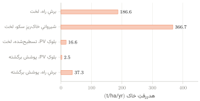
مثال 29.25 (شیروانیِ تند و لخت) پرسش. کدام سطح بیشترین خاک را از دست میدهد و برگرداندنِ پوشش چه میکند؟
پاسخ. شیروانیِ خاکریزِ سکو با شیبِ 30 %، با 367 t/ha در سال. برگرداندنِ پوشش هدررفت را پنج تا هفت برابر کم میکند.
تفسیر. کنترلِ رسوب برای ماههای لخت برنامهریزی میشود (بخش 29.4.9). بلوکِ PV تا جای ممکن تسطیح نمیشود و شیروانیها کوتاه یا پلکانی ساخته میشوند. وارسی: \(300 \times 0.30 \times 4.07 = 366\,\text{t/ha/yr}\).
29.3.14 برآوردِ مقادیرِ عمرانی
ایده. پیش از نقشهٔ تفصیلی هم میتوان مقادیر را از مبنای طراحی برآورد کرد: طولِ راه، ضخامتِ سنگدانه، حجمِ بتن، طولِ حصار. با نرخهای آموزشی این مقادیر برآوردی از هزینه میدهند و نشان میدهند کدام قلم بیشترین وزن را دارد.
civil quantity take-off of Plant P (teaching rates, u)
item quantity unit k u
road aggregate 28 km x 6 m x 0.3 m 50,400 m3 1,260
pad stone 12 x 40 x 40 m x 0.5 m 9,600 m3 240
earthworks (roads, pads, platform) 60,000 m3 360
ditches, both sides of the roads 56,000 m 448
culverts (wadi 10 x 12 m + 30 x 10 m) 420 m 126
foundation and plinth concrete 8,340 m3 1,501
reinforcement, 90 kg/m3 750,600 kg 901
fence (PV block and substation) 4,980 m 199
substation platform fill 120 x 100 x 0.5 m 6,000 m3 72
total about 5,107 k u = 4.5 % of the wind and PV installed
cost (114,000 k u, A-287), which already includes these works
a take-off this early is a class-4 or class-5 estimate
(ch 22): its range is wide, and the quantities that
drive it - concrete and stone - are the ones the ground
investigation can still changeمثال 29.26 (کدام قلم بیشترین وزن را دارد؟) پرسش. کدام قلمها بیشترین سهم را در برآوردِ عمرانی دارند و چه چیزی هنوز میتواند آنها را عوض کند؟
پاسخ. بتنِ فونداسیونها (1,501 k u)، سنگدانهٔ راهها (1,260) و میلگرد (901). جمعِ کل حدودِ 5,100 k u است، یعنی 4.5 % هزینهٔ نصبِ باد و PV که این کارها را از پیش در خود دارد.
تفسیر. برآوردی در این مرحله از ردهٔ ۴ یا ۵ است (فصلِ ۲۲) و بازهاش پهن. مقادیری که آن را تعیین میکنند، یعنی بتن و سنگ، همانهاییاند که شناساییِ زمین هنوز میتواند عوض کند. هر گمانهٔ تازه ارزشِ اطلاعاتی دارد که در مثال 29.66 حساب میشود. وارسی: \(50{,}400 \times 25 = 1{,}260\,\text{k u}\).
- کدام ضریبِ USLE را طراح بیشتر از همه میتواند عوض کند؟
- هدررفتِ برشِ راه با پوششِ برگشته (\(C_\text{e} = 0.2\)) چند برابر کمتر از حالتِ لخت است؟
- چرا بلوکِ PV تا جای ممکن تسطیح نمیشود؟
- اگر ضخامتِ سنگدانه از 0.3 به 0.4 m برسد، هزینهٔ آن چقدر بالا میرود؟
- چرا برآوردِ این مرحله ردهٔ ۴ یا ۵ است؟
- دو قلمِ برآورد را نام ببرید که شناساییِ زمین میتواند عوضشان کند.
29.4 پ. کیفیتِ اجرا و محیطِ زیست
طراحیِ خوب با اجرای بد چیزی نمیسازد. این بخش نشان میدهد کارِ عمرانی چگونه اندازهگیری و پذیرفته میشود: تراکم، بتن، پوششِ میلگرد، رسوب، گرد و خاک و سوابق. قاعدههای پذیرش آموزشیاند (A-354). در پروژهٔ واقعی مشخصاتِ فنیِ پیمان آنها را پیش از نخستین آزمایش تعیین میکند، نه پس از نتیجهٔ بد.
برنامهها:
python -m companion.ch29.examples_c # compaction, concrete, sediment, NCRs
python -m companion.ch29.examples_n # Proctor, plate, hot concrete, dust29.4.1 تراکم و پذیرشِ هر بخش
ایده. خاکریزی که خوب کوبیده نشود، زیرِ بار نشست میکند. درصدِ تراکم چگالیِ خشکِ صحرایی را بر بیشینهٔ چگالیِ خشکِ آزمایشگاهی تقسیم میکند. پذیرش برای هر «لات» (بخشی از کار با شرایطِ یکسان) است، نه برای هر آزمایش. قاعدهٔ آماری میانگین و پراکندگی را با هم میسنجد:
\[ \bar x - k\,s \ \ge\ x_\text{min}, \qquad x_i \ \ge\ x_\text{abs}\ \text{ for every } i \tag{29.23}\]
در این رابطه \(\bar x\) میانگینِ لات است، \(s\) انحرافِ معیار، \(k\) ضریبِ پذیرش، \(x_\text{min}\) حدِ پذیرش و \(x_\text{abs}\) کفِ مطلقی که هیچ نتیجهای نباید زیرش باشد. لاتی با میانگینِ خوب و پراکندگیِ زیاد رد میشود، چون نقطههای سستش جایی زیرِ راه هستند.
def lot_accept(values, limit: float, k: float = 0.0) -> tuple[bool, float]:
"""Accept a lot if mean - k s >= limit; returns (accepted, mean - k s)."""
v = np.asarray(values, float)
s = float(v.std(ddof=1)) if len(v) > 1 else 0.0
m = float(v.mean()) - k * s
return m >= limit, m
def characteristic(values, k: float = 1.645) -> float:
"""Characteristic value (5 % fractile, normal) of test results."""
v = np.asarray(values, float)
return float(v.mean() - k * v.std(ddof=1))field compaction: relative compaction % of the laboratory maximum
(teaching rule: lot mean - 0.5 s >= 95 % and no test below 92 %)
lot tests mean-0.5s result
road km 0-1 96.9 95.5 96.5 98.1 97.4 97.6 96.54 accept
road km 1-2 99.0 94.0 97.5 92.5 98.5 96.0 94.96 REJECT
crane pad T07 94.2 95.3 94.0 94.4 93.8 93.2 93.80 REJECT
the second lot's mean (96.3) is above 95, but its spread
pulls mean - 0.5 s below: it fails on its uniformity;
the T07 pad fails - rework (moisture, more passes) and
retest before the crane stands on it; the rule is fixed
in the specification before the first test, not tunedمثال 29.27 (میانگینِ خوب، لاتِ ردشده) پرسش. لاتِ «راه، کیلومترِ ۱ تا ۲» میانگینِ 96.3 % دارد که از ۹۵ بیشتر است. چرا رد میشود؟
پاسخ. پراکندگیاش زیاد است: \(\bar x - 0.5\,s = 94.96 < 95\). یکی از نتیجهها هم 92.5 % است.
تفسیر. لات به خاطرِ ناهمگنی رد میشود، نه میانگین. شاید بخشی خشکتر کوبیده شده یا لایهای ضخیمتر ریخته شده است. سکوی T07 هم رد میشود. این سکو پیش از ایستادنِ جرثقیل دوباره کار و آزمایش میشود: رطوبت تنظیم و دفعههای غلتک بیشتر. وارسی: \(\bar x = 96.25\) و \(s = 2.58\)، پس \(96.25 - 1.29 = 94.96\).
29.4.2 آزمایشِ تراکمِ آزمایشگاهی
ایده. یک خاک با رطوبتهای مختلف کوبیده میشود و چگالیِ خشکش اندازه گرفته میشود. با رطوبتِ کم، دانهها روی هم نمیلغزند. با رطوبتِ زیاد، آب جای دانهها را میگیرد. میانِ این دو، رطوبتِ بهینه بیشترین چگالی را میدهد. سهمیای که از پنج نقطه میگذرد بیشینه را پیدا میکند و بازهٔ رطوبتی را که در آن 95 % تراکم ممکن است:
laboratory compaction test of the pad fill (five points, synthetic)
moisture % 6.0 8.0 10.0 12.0 14.0
dry t/m3 1.86 1.95 1.99 1.96 1.88
parabola fit: maximum dry density 1.987 t/m3 at 10.2 % moisture
95 % of the maximum (1.887 t/m3) is reachable only between 6.5 and 13.9 %
outside that window no number of roller passes gives 95 %;
in a desert summer the fill dries in hours - water is
added and mixed just before rolling, and the field test
records moisture as well as density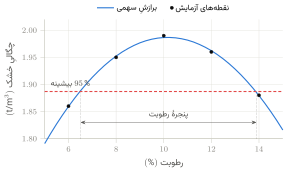
مثال 29.28 (پنجرهٔ رطوبت در تابستانِ بیابان) پرسش. خاکِ سکو در تابستان با رطوبتِ 5 % میرسد. آیا با غلتکِ بیشتر به 95 % میرسد؟
پاسخ. نه. پنجره از 6.5 تا 13.9 % است و 5 % بیرونِ آن است.
تفسیر. بیرون از پنجره، هیچ تعدادِ دفعهٔ غلتک 95 % نمیدهد. آب درست پیش از غلتک افزوده و مخلوط میشود، و آزمایشِ صحرایی رطوبت را هم کنارِ چگالی ثبت میکند. آبِ تراکم هم بخشی از ترازنامهٔ آبِ دورهٔ ساخت است (بخش 29.8.3). وارسی: بیشینه در \(w = -b/(2a)\) است، یعنی 10.2 %.
29.4.3 آزمایشِ بارگذاریِ صفحه
ایده. صفحهای به قطرِ 300 mm دو بار بارگذاری میشود و نشستش اندازه گرفته میشود. مدولِ تغییرشکل از شیبِ بار–نشست به دست میآید:
\[ E_\text{v} = 1.5\,r_\text{p}\,\frac{\Delta\sigma}{\Delta s} \tag{29.24}\]
در این رابطه \(r_\text{p}\) شعاعِ صفحه است. بارگذاریِ دوم (\(E_{\text{v}2}\)) سختیِ خاک را نشان میدهد. نسبتِ \(E_{\text{v}2}/E_{\text{v}1}\) نشان میدهد بارگذاریِ اول چقدر خاک را بیشتر کوبیده است، یعنی خاک چقدر سست بوده.
plate load tests (300 mm plate; E = 1.5 r d_sigma / d_s; teaching
criteria from the specification: Ev2 >= 45 MPa, Ev2/Ev1 <= 2.5)
place s1 mm s2 mm Ev1 MPa Ev2 MPa ratio result
road km 0.5 2.10 0.95 26.8 59.2 2.21 pass
pad T03 1.40 0.62 40.2 90.7 2.26 pass
pad T07 3.90 1.30 14.4 43.3 3.00 FAIL
a high Ev2/Ev1 ratio means the first loading compacted the
layer further - it was loose; T07 fails on stiffness and
on the ratio, matching its compaction lot (lesson C)مثال 29.29 (دو آزمایش، یک پیام) پرسش. سکوی T07 در آزمایشِ صفحه چه نشان میدهد؟
پاسخ. \(E_{\text{v}2} = 43\,\text{MPa}\) کمتر از ۴۵ است و نسبت ۳٫۰ بیشتر از ۲٫۵. در هر دو معیار رد میشود.
تفسیر. آزمایشِ صفحه و آزمایشِ تراکم هر دو یک چیز را میگویند: سکوی T07 سست است. دو آزمایشِ مستقل که با هم میخوانند، تصمیم را محکم میکنند. وارسی: \(1.5 \times 0.15 \times 0.25/0.0013 = 43.3\,\text{MPa}\).
- چرا پذیرش برای لات است، نه برای هر آزمایش؟
- لاتی با نتیجههای ۹۵، ۹۶ و ۹۷ با \(k = 0.5\) پذیرفته میشود؟
- چرا قاعدهٔ پذیرش پیش از نخستین آزمایش تعیین میشود؟
- چرا بیرون از پنجرهٔ رطوبت غلتکِ بیشتر کمکی نمیکند؟
- \(E_\text{v}\) با صفحهٔ 300 mm، \(\Delta\sigma = 0.25\,\text{MPa}\) و \(\Delta s = 1\,\text{mm}\) چقدر است؟
- نسبتِ \(E_{\text{v}2}/E_{\text{v}1}\) زیاد چه چیزی دربارهٔ لایه میگوید؟
- اگر آزمایشِ تراکم بگذرد اما آزمایشِ صفحه نه، چه میکنید؟
- آبِ تراکم را در کدام ترازنامه باید شمرد؟
29.4.4 مقاومتِ بتن: میانگین و تکتک
ایده. از هر بتنریزی نمونههای استوانهای یا مکعبی گرفته و در ۲۸ روزگی شکسته میشوند. ردهٔ بتن با مقاومتِ مشخصه تعریف میشود: مقداری که فقط حدودِ 5 % نتیجهها زیرِ آناند. اگر نتیجهها نرمال فرض شوند:
\[ f_\text{ck} \approx \bar f - 1.645\,s \tag{29.25}\]
28-day strength of the foundation pours (3 specimens each, MPa, synthetic)
all 36 results: mean 41.7, s 3.8, characteristic (mean - 1.645 s) 35.4
specified class (teaching): 35 MPa characteristic
pour mean lowest flag
F01 41.2 40.1
F02 43.7 41.8
F03 42.4 41.6
F04 42.8 39.0
F05 44.6 41.7
F06 41.1 38.1
F07 33.4 31.8 NCR: below 35 MPa
F08 42.7 40.9
F09 43.5 39.6
F10 41.4 38.2
F11 41.9 37.5
F12 41.3 39.3
the set as a whole looks acceptable, but pour F07 is weak
on its own: a non-conformance report, cores from the
structure, and the structural engineer's assessment
before the tower goes on (ch 30) - a good average never
excuses one weak foundation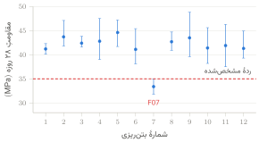
مثال 29.30 (مجموعهٔ خوب، یک فونداسیونِ ضعیف) پرسش. مقاومتِ مشخصهٔ همهٔ ۳۶ نتیجه 35.4 MPa است و از ردهٔ ۳۵ بیشتر. آیا کار پذیرفته است؟
پاسخ. مجموعه پذیرفته است، اما فونداسیونِ F07 نه. میانگینش 33.4 و پایینترینش 31.8 MPa است.
تفسیر. هر فونداسیون یک سازهٔ جداست و میانگینِ خوب یک بتنریزیِ ضعیف را نمیبخشد. F07 یک گزارشِ عدمِ انطباق میگیرد. سپس مغزه از خودِ سازه گرفته میشود و مهندسِ سازه آن را ارزیابی میکند، پیش از آنکه برج رویش برود (فصلِ ۳۰). وارسی: \(41.7 - 1.645 \times 3.8 = 35.4\,\text{MPa}\).
29.4.5 بتن در هوای گرم
ایده. دمای بتنِ تازه از دمای اجزایش به دست میآید. گرمای ویژهٔ سنگدانه و سیمان حدودِ 0.22 گرمای ویژهٔ آب است. یخ هم هنگامِ ذوب گرما میگیرد (حدودِ ۸۰ برابرِ گرمای ویژهٔ آب برای هر درجه). از موازنهٔ گرما:
\[ T = \frac{0.22\,(T_\text{a} W_\text{a} + T_\text{c} W_\text{c}) + T_\text{w} W_\text{w} + T_\text{a} W_\text{wa} - 80\,W_\text{i}} {0.22\,(W_\text{a} + W_\text{c}) + W_\text{w} + W_\text{i} + W_\text{wa}} \tag{29.26}\]
در این رابطه \(W\) جرمِ هر جزء در مترمکعب است: سنگدانه (\(\text{a}\))، سیمان (\(\text{c}\))، آب (\(\text{w}\))، آبِ همراهِ سنگدانه (\(\text{wa}\)) و یخ (\(\text{i}\)). \(T\) هم دمای هر جزء است.
fresh concrete temperature from its ingredients (heat balance with
solids at 0.22 of water's specific heat; ice melting = 80 K of water)
case aggregate cement water ice fresh C
summer day, as delivered 40 45 32 0% 38.7
chilled mixing water (5 C) 40 45 5 0% 32.4
half the water as ice 40 45 5 50% 22.5
night pour, shaded stockpiles 28 35 5 0% 23.5
(teaching specification limit: 32 C at placing)
the aggregate carries most of the heat: chilled water
alone is not enough on a summer day; ice or a night pour
with shaded, sprayed stockpiles brings the mix within the
limit - and the ice is part of the water balance (lesson G)مثال 29.31 (گرما در سنگدانه است) پرسش. در روزِ تابستان، آبِ سردِ 5 °C بتن را زیرِ حدِ آموزشیِ 32 °C میبرد؟
پاسخ. بهزحمت: 32.4 °C. با جایگزینیِ نیمی از آب با یخ دما 22.5 °C میشود، و بتنریزیِ شبانه با انبارِ سایهدار 23.5 °C.
تفسیر. سنگدانه بیشترِ جرم و بیشترِ گرما را دارد، پس آبِ سرد بهتنهایی کافی نیست. یخ یا بتنریزیِ شبانه با انبارِ سایهدار و آبپاشیشده لازم است. یخ هم آب است و در ترازنامهٔ آب شمرده میشود. وارسی: صورتِ کسر \(0.22(76{,}000 + 17{,}100) + 5{,}280 + 1{,}600 = 27{,}362\) و مخرج \(0.22 \times 2{,}280 + 205 = 706.6\)؛ پس \(T = 38.7\,^\circ\text{C}\) برای آبِ 32 °C (سطرِ اول).
29.4.6 گرمای آبگیری در بتنِ حجیم
ایده. فصلِ ۴ این پدیده را برای همین فونداسیون معرفی کرد (فرضِ A-066). اینجا همان عددها برای انتخابِ ترکیب و برنامهٔ بتنریزی به کار میروند. سیمان با آب واکنش میدهد و گرمای آبگیری آزاد میکند. در پیِ بزرگ، گرما در هسته میماند و سطح شبها سرد میشود. اگر هیچ گرمایی بیرون نرود، افزایشِ دما چنین است:
\[ \Delta T_\text{ad} = \frac{m_\text{b}\,H_\text{b}}{\rho\,c_\text{p}} \tag{29.27}\]
در این رابطه \(m_\text{b}\) جرمِ چسباننده در مترمکعب است، \(H_\text{b}\) گرمای آبگیریِ آن، و \(\rho\,c_\text{p}\) ظرفیتِ گرماییِ حجمیِ بتن.
heat of hydration in a 620 m3 foundation pour (ch 4 values, A-066;
the concrete specialist sets the mix and the limits)
binder kg/m3 heat kJ/kg adiabatic rise K
cement only 380 330 52.2
30 % fly ash 380 270 42.8
50 % slag 380 265 42.0
placed at 30 C, the core of a thick pour nears 30 + 44 = 74 C
(85 % of the adiabatic rise, cement only)
while the surface cools at night: a core-to-surface
difference above about 20 K (a common teaching limit)
cracks the surface; a low-heat binder, a cool mix,
insulation and thermocouples in the pour control itمثال 29.32 (هستهٔ گرم، سطحِ سرد) پرسش. هستهٔ پیِ 620 m³ با سیمانِ تنها چقدر گرم میشود و جایگزینیِ ۳۰ درصدِ آن با خاکسترِ بادی چه میکند؟
پاسخ. افزایشِ بیدررو 52 K است و با بتنریزی در 30 °C هسته به حدودِ 74 °C میرسد. با خاکسترِ بادی افزایش 43 K میشود.
تفسیر. وقتی هسته گرم و سطح سرد است، اختلافِ بیش از حدودِ 20 K سطح را ترک میدهد. این حد آموزشی است و مشخصات آن را تعیین میکند. مهارش ترکیبی از چسبانندهٔ کمحرارت، بتنِ خنک (مثال 29.31)، عایقکاری و دماسنج در بتن است. انتخابِ ترکیب کارِ متخصصِ بتن است. وارسی: \(380 \times 330/(2{,}400 \times 1.0) = 52.2\,\text{K}\).
29.4.7 پوششِ بتنیِ میلگرد
ایده. پوشش، یعنی فاصلهٔ میلگرد تا سطحِ بتن، سپرِ فونداسیون در برابرِ سولفات و کلرید است (پرسشِ Q4 در بخش 29.5). پیش از بتنریزی دستگاهِ پوششسنج آن را در دهها نقطه میخواند:
cover meter on one foundation cage before the pour (40 readings, mm)
mean 56.6, s 5.7, lowest 46; nominal 60 with 10 mm allowed below
readings below 50 mm: 5 of 40 (12 %)
5 % fractile (mean - 1.645 s): 47.2 mm
the low readings are found and fixed (spacers added, bars
moved) before the hold point is released: cover is the
foundation's protection against sulphates and chlorides
(lab D), and it cannot be added after the pourمثال 29.33 (پوشش را پس از بتنریزی نمیشود افزود) پرسش. پنج خواندنِ زیرِ 50 mm از چهل خواندن یعنی چه؟
پاسخ. حدودِ 12 % قفسه زیرِ حداقل است و صدکِ پنجم 47 mm است.
تفسیر. نقطههای کم پیدا و اصلاح میشوند (فاصلهنگهدارِ بیشتر، جابهجاییِ میلگرد) و سپس دوباره خوانده میشوند. فقط پس از آن نقطهٔ توقفِ «میلگرد و پوشش» (بخش 29.4.8) آزاد میشود. پوشش را پس از بتنریزی نمیتوان افزود. وارسی: \(56.6 - 1.645 \times 5.7 = 47.2\,\text{mm}\).
29.4.8 برنامهٔ بازرسی و آزمون
ایده. برنامهٔ بازرسی و آزمون هر گامِ کار را با نوعِ کنترلش فهرست میکند. سه نوع کنترل هست: نقطهٔ توقف (H): کار تا امضای طرفِ نامبرده متوقف است. نقطهٔ شاهد (W): طرف خبر میشود و میتواند ببیند. بازبینیِ سابقه (R).
inspection and test plan of one turbine foundation (H hold, W
witness, R record review)
1 [H] excavation to level, ground inspected geotechnical engineer
2 [W] blinding level and setting out surveyor
3 [H] anchor cage level and plumb turbine maker
4 [H] reinforcement and cover before pour structural engineer
5 [W] embedded earthing and ducts electrical
6 [W] pour: slump, temperature, cubes laboratory
7 [R] curing and thermocouple record contractor
8 [R] 28-day strength laboratory
9 [H] grout under the tower flange turbine maker
10 [W] backfill compaction laboratory
4 hold points: work stops until the named party signs;
twelve foundations make 48 signatures that must be
planned into the programme, or the crane waits for themمثال 29.34 (امضاها در برنامهٔ زمانی) پرسش. برای دوازده فونداسیون چند امضای نقطهٔ توقف لازم است و چرا در برنامهٔ زمانی دیده میشوند؟
پاسخ. \(4 \times 12 = 48\) امضا.
تفسیر. هر امضا یعنی کسی باید در روز و ساعتِ معین در محل باشد. اگر برنامهریزی نشود، جرثقیل و تیمِ بتن منتظرِ او میمانند. نقطهٔ توقف تنها جایی است که کیفیت و زمان آشکارا با هم معامله میشوند و برنامه باید از پیش جایش را باز کند. وارسی: در جدول چهار سطرِ H هست.
- مقاومتِ مشخصهٔ چهار نتیجهٔ ۴۰، ۴۲، ۴۴ و ۴۶ مگاپاسکال چیست؟
- چرا میانگینِ خوبِ مجموعه بتنریزیِ ضعیفِ F07 را نمیبخشد؟
- در معادلهٔ 29.26، کدام جزء بیشترین اثر را بر دمای بتن دارد و چرا؟
- چرا یخ مؤثرتر از آبِ سرد است؟
- افزایشِ بیدررو با 300 kg/m³ سیمانِ 330 kJ/kg چقدر است؟
- اختلافِ دمای هسته و سطح را چگونه اندازه میگیرند؟
- پوششِ کم چه خطری برای فونداسیونی در خاکِ گچدار دارد؟
- فرقِ نقطهٔ توقف و نقطهٔ شاهد چیست؟
- چه کسی نقطهٔ توقفِ «قفسهٔ مهار» را آزاد میکند و چرا؟
- چرا گزارشِ عدمِ انطباقِ F07 با یک امضا بسته نمیشود؟
29.4.9 حوضچهٔ رسوبگیر
ایده. در ماههایی که زمینِ بلوکِ PV لخت است، هر بارانِ تند خاک را به سمتِ وادی میبرد. حوضچهٔ رسوبگیر روانآب را نگه میدارد تا ذرهها تهنشین شوند. حجمِ آن دو بخش دارد: آبِ یک بارانِ طراحی برای تهنشینی، و جای رسوبی که تا تخلیهٔ بعدی جمع میشود. رسوب از معادلهٔ 29.22 میآید.
a sediment pond for the PV block while it is graded and bare
soil loss over 3 bare months on 30 ha: 125 t = 83 m3 of sediment
runoff of a 25 mm storm (C 0.5) to hold for settling: 3750 m3
pond: about 3,833 m3 (storage + settling), emptied
after storms and removed when the cover is back; its outlet
goes to the wadi only through a stable, rock-lined spillwayمثال 29.35 (آب حجم را تعیین میکند، نه رسوب) پرسش. کدام بخشِ حجمِ حوضچه بزرگتر است؟
پاسخ. آبِ بارانِ 25 mm روی 30 ha با \(C = 0.5\)، یعنی 3,750 m³. رسوبِ سه ماه فقط حدودِ 83 m³ است.
تفسیر. حوضچه برای زمانِ ماند طراحی میشود تا ذرهها فرصتِ تهنشینی داشته باشند. پس از هر باران تخلیه و پس از برگشتنِ پوشش برچیده میشود. خروجیاش فقط از سرریزِ سنگچینشدهٔ پایدار به وادی میرود. وارسی: \(0.025 \times 300{,}000 \times 0.5 = 3{,}750\,\text{m}^3\).
29.4.10 غبارنشانی: آب، سرعت یا چسباننده
ایده. گرد و خاکِ راههای خاکی برای کارگران، روستا و پنلها (فصلِ ۱۰) زیان دارد. سه ابزار برای مهارش هست: آبپاشی، سرعتِ کمتر و چسباننده روی پرترددترین بخش. در مدلِ آموزشیِ زیر، گسیل با سرعت متناسب است. آبپاشی کامل 75 % و نیمه 50 % گسیل را برمیدارد و چسباننده 80 %.
dust control on the site roads: water against speed and binders
(teaching: emission in proportion to speed; watering at 1.5 L/m2
a day removes 75 %, half that rate 50 %, a binder 80 %)
option emission % water m3
no control, 50 km/h 100 0
watering, 50 km/h (lesson G) 25 75,600
speed 30 km/h, watering 15 75,600
speed 30 km/h, half the watering 30 37,800
binder on main track (40 % of traffic) 14 45,360
+ speed 30 km/h elsewhere
a lower speed is the cheapest control: half the watering
at 30 km/h gives about the dust of full watering at 50
and saves nearly 38,000 m3; a binder on the busiest
stretch with the lower speed gives the least dust of all
on 40 % less water - and less wear (lesson M)مثال 29.36 (ارزانترین غبارنشانی) پرسش. کدام ترکیب کمترین گرد و خاک و کمترین آب را دارد؟
پاسخ. چسباننده روی راهِ اصلی (۴۰ درصدِ ترافیک) با سرعتِ 30 km/h در جاهای دیگر: گسیلِ 14 % با 45,360 m³ آب، در برابرِ 25 % با 75,600 m³ در آبپاشیِ کامل با 50 km/h.
تفسیر. کاهشِ سرعت ارزانترین ابزار است. چسباننده هم آب را کم میکند و هم سایشِ راه را (مثال 29.16). در ساختگاهی که آب کم است (بخش 29.8.3)، این انتخابها دهها هزار مترمکعب آب را آزاد میکنند. وارسی: \(0.6 \times 60 \times 0.25 + 0.4 \times 60 \times 0.20 = 9 + 4.8 = 13.8\,\%\).
29.4.11 خاکِ مازاد و خاکِ رویی
ایده. گودبرداریِ فونداسیونها و ترانشهها خاک بیرون میآورد. بخشی برمیگردد و بخشی مازاد میماند. خاکِ رویی، یعنی چند سانتیمترِ بالاییِ زمین با بذر و جانداران، جدا برداشته و نگهداری میشود. همین خاک است که زمین را پس از ساخت دوباره زنده میکند.
spoil and topsoil (teaching quantities)
turbine excavations (23 m wide, 3.7 m deep) 18,447 m3
backfill over and around the foundations 15,055 m3
cable trenches (60 km x 0.6 x 1.2 m), mostly back 43,200 m3
surplus from the turbine excavations 3,392 m3
topsoil stripped 0.15 m from 29 ha 42,780 m3
topsoil stockpiled at most 2 m high: about 2.1 ha of heaps
topsoil is kept apart, low and covered or seeded so its
seeds and soil life survive for reinstatement; surplus
spoil goes into the road embankments (lesson M) before a
tip is openedمثال 29.37 (خاکِ رویی، سرمایهٔ بازگرداندن) پرسش. خاکِ رویی چقدر است و دپوی آن چه زمینی میخواهد؟
پاسخ. حدودِ 42,800 m³ از 29 ha. با ارتفاعِ حداکثر 2 m، دپوها حدودِ 2.1 ha زمین میگیرند.
تفسیر. دپوی بلند یا طولانی بذر و جانداران را میکشد. پس دپو پست، پوشیده یا کاشته نگه داشته میشود و هر چه زودتر برمیگردد. مازادِ گودها، حدودِ 3,400 m³، به خاکریزِ راهها میرود (مثال 29.15) پیش از آنکه دپوی دائم باز شود. وارسی: \(285{,}200 \times 0.15 = 42{,}780\,\text{m}^3\).
29.4.12 گزارشهای عدمِ انطباق
ایده. هر کاری که با مشخصات نخواند، یک گزارشِ عدمِ انطباق (NCR) میگیرد: چه، کجا، چرا، چه اقدامی و با چه شاهدی بسته شد. تحلیلِ این گزارشها نشان میدهد کیفیت کجا ضعیف است:
non-conformance log of the civil works (synthetic, 40 reports)
category reports open median days to close
compaction 8 0 14
concrete 8 0 20
setting out 6 3 16
drainage 7 1 10
documentation 11 3 8
7 open at handover would block it: each NCR closes with
the evidence (retest, core, engineer's acceptance), not
with a signature; documentation is the largest category -
records are part of the work, not paperwork after itمثال 29.38 (گزارشِ باز در روزِ تحویل) پرسش. هفت گزارشِ باز در تحویل چه معنایی دارد و بزرگترین دسته کدام است؟
پاسخ. تحویل را متوقف میکنند. بزرگترین دسته مدارک است، با یازده گزارش.
تفسیر. هر گزارش با شاهد بسته میشود: آزمایشِ دوباره، مغزه یا پذیرشِ مهندس، نه با امضا. مدارک بخشی از کارند، نه کاغذبازیِ پس از آن. سابقهای که در روزِ کار ثبت نشده، بعداً یا ساختگی است یا گم. وارسی: جمعِ ستونِ «باز» ۰ + ۰ + ۳ + ۱ + ۳ = ۷.
29.4.13 پروندهٔ تحویلِ کارِ عمرانی
کارِ عمرانی با پروندهٔ تحویل به بهرهبرداری میرسد. این همان سوابقِ چونساختِ شکل 29.1 است:
- نقشههای چونساخت: ترازها، مسیرِ کابلها و لولهها، آبروها، جای فونداسیونها با مختصاتِ واقعی.
- مدلِ زمینِ بهروز با آنچه در گودبرداری دیده شد.
- برنامههای بازرسی و آزمونِ امضاشده و نتیجهٔ همهٔ آزمایشها.
- گزارشهای عدمِ انطباق، همه بسته، با شاهد.
- دستورِ نگهداری: آبروها پس از هر جریان، کانالها، سدهای تأخیری، شیبهای راه و دپوهای خاک (فصلِ ۵۲).
- پروانهها و شرطهایشان، با شاهدِ رعایت (فصلِ ۳۳).
- حجمِ آبِ بارانِ 20 mm روی 10 ha با \(C = 0.6\) چقدر است؟
- چرا حوضچهٔ رسوبگیر برای زمانِ ماند طراحی میشود؟
- کاهشِ سرعت از ۵۰ به ۳۰ کیلومتر در ساعت گسیل را در مدلِ آموزشی چقدر کم میکند؟
- چرا دپوی خاکِ رویی پست و کوتاهمدت نگه داشته میشود؟
- خاکِ مازادِ گودها کجا باید برود، پیش از دپوی دائم؟
- گزارشِ عدمِ انطباق با چه چیزی بسته میشود؟
- چرا مدارک بزرگترین دستهٔ گزارشهاست و چگونه کمش میکنید؟
- شش قلمِ پروندهٔ تحویلِ عمرانی را نام ببرید.
29.5 ت. تمرینِ بازبینیِ گزارشِ ژئوتکنیک (مثالِ کارشده)
موقعیت. گزارشِ خلاصهٔ ژئوتکنیکِ ساختگاه رسیده است: ده گمانه، دو خطِ لرزهای و چند آزمایشِ آزمایشگاهی (A-349). کارِ مهندسِ نیروگاه طراحیِ فونداسیون نیست؛ آن کارِ مهندسِ ژئوتکنیک و سازهٔ دارای صلاحیت است (فصلِ ۳۰). کارِ او این است که گزارش را بخواند، شکافها و خطرها را پیدا کند و پرسشهای درست را بنویسد. پرسشها بیآنکه راهحلی را از پیش فرض کنند، نشان میدهند کدام تصمیم منتظرِ کدام داده است.
برنامه:
python -m companion.ch29.lab_d29.5.1 قاعدههای غربال
بازبینی با قاعدههایی ساده و آموزشی انجام میشود که پیش از خواندنِ گزارش نوشته شدهاند:
- عمق: گمانهٔ توربین تا 10 m زیرِ ترازِ فرضیِ کفِ فونداسیون (3.5 m) یا تا سنگ میرود. گمانهٔ PV و پست تا 6 m.
- آب: ترازِ آبِ زیرزمینی ثبت شده باشد.
- آزمایشها: دانهبندی، رطوبت، سولفات و کلرید در هر گمانه، برای غربالِ ردهٔ محیطیِ بتن.
- لایههای ویژه: هر لایهٔ نرم یا گچدار نشانگذاری شود.
تابعِ زیر همین قاعدهها را روی هر رکوردِ گمانه اجرا میکند:
def review(bh: src.Borehole) -> list[tuple[str, str]]:
"""Gaps of one borehole against the teaching screening rules:
(issue, consequence)."""
out = []
bottom = bh.layers[-1].bottom
rock = any("sandstone" in l_.soil for l_ in bh.layers)
turbine = "(T" in bh.name
need = src.FOUNDATION_DEPTH + REACH_BELOW_FOUNDING if turbine else 6.0
if bottom < need and not rock:
out.append((f"stops at {bottom:.0f} m, no rock",
"ground below founding level unknown"))
if bh.water_m is None:
out.append(("groundwater not recorded",
"uplift, dewatering, concrete exposure"))
missing = src.NEEDED_LAB - bh.lab
if missing:
out.append(("no " + ", ".join(sorted(missing)),
"concrete exposure class open"))
for l_ in bh.layers:
if "soft" in l_.soil:
out.append((f"soft layer {l_.top:.1f}-{l_.bottom:.1f} m",
"settlement and stiffness need a design check"))
if "gypsum" in l_.soil:
out.append(("gypsum in the near surface",
"sulphate attack, dissolution"))
return out29.5.2 یافتهها
review of the geotechnical summary, borehole by borehole
(turbines: 10 m below founding level or rock; PV and substation 6 m)
BH-01 (T01) no chloride
-> concrete exposure class open
BH-02 (T03) no chloride, sulphate
-> concrete exposure class open
BH-03 (T05) stops at 6 m, no rock
-> ground below founding level unknown
BH-03 (T05) groundwater not recorded
-> uplift, dewatering, concrete exposure
BH-03 (T05) no chloride, moisture, sulphate
-> concrete exposure class open
BH-04 (T07) no chloride, sulphate
-> concrete exposure class open
BH-04 (T07) soft layer 0.0-2.5 m
-> settlement and stiffness need a design check
BH-06 (T11) no chloride, moisture, sulphate
-> concrete exposure class open
BH-07 (T12) groundwater not recorded
-> uplift, dewatering, concrete exposure
BH-07 (T12) no chloride, sulphate
-> concrete exposure class open
BH-07 (T12) gypsum in the near surface
-> sulphate attack, dissolution
BH-08 (substation) no chloride
-> concrete exposure class open
BH-09 (PV north) no chloride, moisture, sulphate
-> concrete exposure class open
BH-10 (PV south) no chloride, moisture, sulphate
-> concrete exposure class open
14 findings; turbines without a borehole: T02, T04, T06, T08, T10
also absent from the summary: SPT hammer energy, seismic
site class, flood levels at the wadi, thermal resistivity
of the soil for the cables (ch 24), and the laboratory
strength and stiffness of the soft clay29.5.3 پرسشها برای مهندسانِ دارای صلاحیت
questions for the qualified geotechnical and civil engineers
(no foundation solution presumed - the answers feed ch 30)
Q1 what ground model and design values do you propose at each turbine,
and where is it interpolated?
Q2 BH-03 stops at 6 m in sand: is a deeper borehole or a CPT needed at
T05?
Q3 BH-04 shows soft clay to 2.5 m at T07: what settlement and rotational
stiffness follow?
Q4 which exposure class do sulphate and chloride results give, and where
are tests missing?
Q5 BH-07 meets gypsum at T12: what is the risk of attack and of
dissolution under wetting?
Q6 groundwater was not recorded at T05 and T12: what level and seasonal
range do you assume?
Q7 what hammer energy was used, and how were SPT values corrected?
Q8 what seismic site class and design ground motion apply (to be
confirmed locally)?
Q9 what investigation is still needed for T02, T04, T06, T08 and T10
before design?
Q10 which soil thermal resistivity applies to the cable routes (ch 24 used
1.5 K m/W)?
each question names the data it rests on and the decision
it unblocks; the answers go into the ground model with
their source, and the open ones into the unknowns (U-104)مثال 29.39 (مثالِ کارشده: بازبینیِ خلاصهٔ ژئوتکنیک بیفرضِ فونداسیون) پرسش. گزارشِ ده گمانه را بازبینی کنید. شکافها و خطرها را با پیامدِ هر کدام فهرست کنید و پرسشهایی برای مهندسانِ ژئوتکنیک و عمران بنویسید، بیآنکه راهحلِ فونداسیون را فرض کنید.
پاسخ. چهارده یافته در چهار دسته به دست میآید:
- عمق: BH-03 در 6 m در ماسه بس شده و زمینِ زیرِ کفِ فونداسیونِ T05 ناشناخته است.
- آب: در BH-03 و BH-07 ترازِ آب ثبت نشده است؛ پیامدش برکنش، آبکشی و ردهٔ محیطیِ بتن است.
- آزمایشها: کلرید در هیچ گمانهای جز BH-05 آزمایش نشده و سولفات در هفت گمانه آزمایش نشده است، پس ردهٔ محیطیِ بتن باز میماند.
- لایههای ویژه: رسِ نرم تا 2.5 m در T07 (نشست و سختی) و گچ در T12 (حملهٔ سولفات و انحلال).
پنج توربین گمانه ندارند. چهار چیز هم در گزارش نیست: انرژیِ چکش، ردهٔ لرزهایِ ساختگاه، ترازِ سیلِ وادی و مقاومتِ گرماییِ خاک برای کابلها. پرسشهای Q1 تا Q10 از همین یافتهها ساخته شدهاند.
تفسیر. هر پرسش دو چیز را نام میبرد: دادهای که بر آن تکیه دارد، و تصمیمی که پاسخش آزاد میکند. هیچ پرسشی نمیگوید «پیِ شمعی بگذارید» یا «خاک را عوض کنید». تصمیم پس از پاسخ و با مهندس است. پاسخها با منبعشان به مدلِ زمین میروند و پرسشهای بیپاسخ به دفترِ مجهولها. اینجا دو پرسش به فصلهای دیگر وصلاند: Q10 به فصلِ ۲۴، که 1.5 K m/W را فرض کرده بود، و Q8 به آییننامهٔ لرزهایِ محل. هزینهٔ شناساییِ تکمیلی در برابرِ خطری که برمیدارد در مثال 29.66 آمده است. وارسی: شمارِ یافتهها: BH-01 یک، BH-02 یک، BH-03 سه، BH-04 دو، BH-06 یک، BH-07 سه، BH-08، BH-09 و BH-10 هر کدام یک: جمعاً ۱۴.
29.5.4 خطاهای رایج در بازبینی
- پرکردنِ شکاف با حدس: «احتمالاً آب در T05 هم مثلِ T03 است.» شکاف شکاف میماند تا اندازهگیری شود.
- پیشنهادِ راهحل بهجای پرسش: «پیِ شمعی در T07.» شاید پیِ کمعمقِ پهنتر یا بهسازیِ خاک ارزانتر و بهتر باشد؛ این تصمیمِ مهندس است.
- خواندنِ ژئوفیزیک بهجای گمانه: عمقِ 13.7 m در لرزهای «عمقِ سنگ» نیست (مثال 29.5).
- نادیدهگرفتنِ دادهٔ رشتههای دیگر: مقاومتِ گرماییِ خاک برای کابلها و مقاومتِ ویژه برای زمینکردن از همین شناسایی میآیند (فصلهای ۲۴ و ۲۶).
- بستنِ پرسش با پاسخِ شفاهی: هر پاسخ با سند، تاریخ و نسخه به مدلِ زمین میرود.
تفسیرِ گزارشِ ژئوتکنیک، پارامترهای طراحی، انتخابِ نوعِ فونداسیون و آزمایشهای تکمیلی با مهندسِ ژئوتکنیکِ دارای صلاحیت است. طراحیِ سازه با مهندسِ سازه است. همبستگیهای این فصل (SPT به زاویهٔ اصطکاک، CBR به فشارِ مجاز) فقط برای غربالاند.
- چرا قاعدههای غربال پیش از خواندنِ گزارش نوشته میشوند؟
- گمانهٔ توربینی که در 9 m در ماسه بس شده با قاعدهٔ عمق پذیرفته است؟
- چرا نبودِ آزمایشِ کلرید ردهٔ محیطیِ بتن را باز میگذارد؟
- پرسشی برای T07 بنویسید که راهحلی را فرض نکند.
- کدام یافتهٔ این بازبینی به فصلِ ۲۴ برمیگردد و چرا؟
- چرا «احتمالاً مانندِ گمانهٔ کناری» پاسخِ پذیرفتنیای نیست؟
- پاسخِ هر پرسش کجا ثبت میشود؟
- دو دادهای را نام ببرید که در خلاصهٔ گزارش نبود و به گمانهها ربطی ندارد.
29.6 ث. تابآوریِ اقلیمی و خطرهای طراحی
نیروگاه بیست و پنج سال یا بیشتر در همین ساختگاه میماند. هر خطری که در این مدت ممکن است، چه گرما، چه سیل، تندباد، خشکسالی یا گرد و خاک، باید پیش از طراحی با منبع، دورهٔ بازگشت و بخشهایی که بر آنها اثر دارد نوشته شود. این بخش سه ابزار میدهد: مقدارِ بازگشت از بیشینههای سالانه، روندی که رکورد پنهان میکند، و احتمالِ رخدادِ یک پیشامدِ طراحی در عمرِ نیروگاه. سپس خطرها غربال و به طرح پیوند داده میشوند. رکوردِ سیساله ساختگی است (A-350) و یک مطالعهٔ خطر نیست.
برنامهها:
python -m companion.ch29.examples_e # return levels, trend, screen, links
python -m companion.ch29.examples_p # heat hours, evaporation, flood, life29.6.1 مقدارِ بازگشت از بیشینههای سالانه
ایده. از هر سالِ رکورد یک عدد برداشته میشود: بیشینهٔ آن سال. توزیعِ گامبل (فصلِ ۳) برای چنین بیشینههایی برازش میشود. مقدارِ بازگشتِ \(T\) ساله مقداری است که هر سال احتمالِ \(1/T\) دارد که از آن بگذرد:
\[ x_T = \mu - \beta\,\ln\!\left[-\ln\!\left(1 - \frac{1}{T}\right)\right], \qquad \beta = \frac{\sqrt6\,s}{\pi}, \quad \mu = \bar x - 0.5772\,\beta \tag{29.28}\]
def gumbel_return(mu: float, beta: float, years: float) -> float:
"""Return level of annual maxima for a return period in years."""
return mu - beta * math.log(-math.log(1 - 1 / years))return levels from 30 annual maxima (Gumbel by moments; synthetic)
quantity 10 yr 50 yr 100 yr largest seen
daily max temperature C 44.5 46.6 47.5 46.5
1-hour rain mm 21.6 27.3 29.7 25.0
24-hour rain mm 60.4 80.1 88.4 76.4
3-s gust m/s at 10 m 35.3 41.1 43.6 41.4
thirty years give a 50- or 100-year value only by
extrapolation: the fitted line carries the uncertainty of
thirty points - a real study uses longer or regional
records and states the confidence band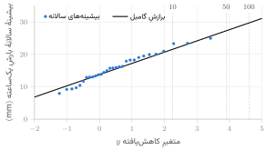
مثال 29.40 (پنجاه سال از سی سال داده) پرسش. بارشِ یکساعتهٔ ۵۰ ساله چقدر است و به این عدد چقدر میشود اعتماد کرد؟
پاسخ. 27.3 mm. بزرگترین بارشِ دیدهشده در سی سال 25.0 mm بوده است.
تفسیر. مقدارِ ۵۰ و ۱۰۰ ساله از سی نقطه فقط با برونیابی به دست میآید. خطِ برازش عدمِ قطعیتِ همان سی نقطه را دارد. مطالعهٔ واقعی رکوردِ بلندتر یا منطقهای به کار میبرد و بازهٔ اطمینان را مینویسد. در شکل 29.11 بالاترین نقطه کمی زیرِ خط است و نقطههای میانی کمی بالای آن. سی سالِ دیگر خط را جابهجا میکرد. وارسی: با \(\mu = 13.76\) و \(\beta = 3.47\)، داریم \(y_{50} = 3.90\) و \(13.76 + 3.47 \times 3.90 = 27.3\,\text{mm}\).
29.6.2 روندی که رکورد پنهان میکند
ایده. معادلهٔ 29.28 فرض میکند اقلیم ایستاست: هر سالِ رکورد از همان توزیع است. اگر رکورد روند داشته باشد، برازشِ ایستا میانگینِ سی سال را میگیرد و برای سالهای آینده کم برآورد میکند. راهِ ساده این است: روندِ خطی برداشته میشود، گامبل روی باقیماندهها برازش میشود، و روند برای سالِ مورد نظر برگردانده میشود.
the 50-year daily maximum temperature with and without the record's trend
trend in the record: +0.54 C per decade
fitted as if stationary: 46.6 C
with the trend, today: 47.2 C
with the trend, 25 years on (end of life): 48.5 C
a design value taken from the whole record as if the
climate stood still is low for the plant's later years;
the design basis states the scenario it assumes (teaching
here; climate projections are a specialist input)مثال 29.41 (مقدارِ طراحی در پایانِ عمر) پرسش. بیشینهٔ دمای روزانهٔ ۵۰ ساله با فرضِ ایستا، امروز و در پایانِ عمرِ نیروگاه چقدر است؟
پاسخ. 46.6، 47.2 و 48.5 °C.
تفسیر. مقدارِ طراحیای که از کلِ رکورد با فرضِ ایستا گرفته شود، برای سالهای پایانیِ نیروگاه کم است. مبنای طراحی سناریوی اقلیمیاش را مینویسد. اینجا روندِ خودِ رکورد است، اما پیشبینیِ اقلیمی ورودیِ متخصص است. وارسی: \(0.054 \times 25 = 1.35\,\text{K}\)، و \(47.2 + 1.35 = 48.5\).
29.6.3 احتمالِ پیشامد در عمرِ نیروگاه
ایده. «سیلِ ۵۰ ساله» یعنی هر سال احتمالِ \(1/50\). این به آن معنا نیست که پنجاه سال یک بار میآید. احتمالِ آنکه دستکم یک بار در \(n\) سال بیاید:
\[ P_n = 1 - \left(1 - \frac{1}{T}\right)^{n} \tag{29.29}\]
the chance of at least one T-year event in a 25-year life
T years chance %
10 92.8
25 64.0
50 39.7
100 22.2
500 4.9
1000 2.5
a 50-year design storm has two chances in five of coming
within the plant's life; the culverts' overtopping path
and the substation level are chosen with that in mind -
and with a changing climate the 'T' itself driftsمثال 29.42 (دو در پنج) پرسش. آبروی طراحیشده برای سیلِ ۵۰ ساله در عمرِ ۲۵ سالهٔ نیروگاه با چه احتمالی دستکم یک سیلِ بزرگتر میبیند؟
پاسخ. 39.7 %، یعنی حدودِ دو در پنج.
تفسیر. پیشامدِ طراحی پیشامدِ «هرگز» نیست. پس مسیرِ سرریزِ آبرو (مثال 29.22) و ترازِ سکوی پست با این احتمال انتخاب میشوند. دورهٔ بازگشت هم در اقلیمِ در حالِ تغییر ثابت نمیماند. وارسی: \(1 - 0.98^{25} = 1 - 0.603 = 0.397\).
- با \(\mu = 16\) و \(\beta = 6\)، مقدارِ ۵۰ سالهٔ بارش چیست؟
- چرا مقدارِ ۱۰۰ ساله از رکوردِ سیساله فقط برونیابی است؟
- اگر چند نقطهٔ بالاییِ نمودارِ گامبل بهروشنی بالای خط باشند، دربارهٔ دمِ توزیع چه میگویند؟
- با روندِ +0.3 °C در دهه، مقدارِ طراحی در بیست سال چقدر بالا میرود؟
- احتمالِ دستکم یک سیلِ ۱۰۰ ساله در ۲۵ سال چیست؟
- چرا «سیلِ ۵۰ ساله» پنجاه سال یک بار نمیآید؟
- برازشِ ایستا روی رکوردی با روند، مقدارِ آینده را بیش برآورد میکند یا کم؟
- سناریوی اقلیمیِ مبنای طراحی را چه کسی تعیین میکند؟
29.6.4 غربالِ خطرها
ایده. هر خطری که در فهرستِ تابآوری هست بررسی میشود: گرما، سرما، باد، گرد و خاک، سیل، خشکسالی، آتشِ پوششگیاهی، یخزدگی، برف و فرسایش. خطری که به این ساختگاه ربط ندارد با دلیل و منبع کنار گذاشته میشود، نه با سکوت. غربالِ زیر کمینهٔ دمای سالِ داده را هم میخواند:
screening the hazards the handoff lists, from the data-pack year
air temperature: lowest -8.6 C, hours below 0 C: 356, below -5 C: 46
hazard relevant here? basis and where it is handled
heat yes 47-48 C extremes (e_returns, ch 9, 19, 25)
wind yes 50-year gust 41 m/s (ch 11, 30, 31)
dust yes soiling, filters (ch 10, lesson H)
flood yes wadi beside the substation (lesson I, P)
drought yes wells, tank (lessons G, H)
erosion yes bare ground in construction (lesson B, C)
cold yes (winter) frost nights: cold-weather concreting,
battery heating (ch 19), frost on pads
icing unlikely dry cold air; confirm with the turbine maker
snow rare no record here; loads by the code (ch 30)
wildfire low sparse rangeland - grass after wet years:
firebreaks at the fence (lesson F)
a hazard is screened out with a reason and a source, not
left off the list; the screen is redone when the record
or the climate scenario changesمثال 29.43 (بیابانِ داغ هم یخ میزند) پرسش. آیا سرما برای این ساختگاهِ گرم خطر است؟
پاسخ. بله: سالِ داده 356 ساعت زیرِ صفر و 46 ساعت زیرِ −5 °C دارد.
تفسیر. بتنریزی در شبِ زمستان مراقبت میخواهد (عایق، گرمکردنِ آب) و باتری گرمکن میخواهد (فصلِ ۱۹). یخزدگیِ دورهای روی سکوها هم ممکن است. اگر غربال فقط به گرما نگاه میکرد، هر سهٔ اینها از قلم میافتادند. وارسی: کمینهٔ سالِ داده −8.6 °C است.
29.6.5 پیوندِ خطر و طرح
هر خطر در مبنای طراحی سه چیز دارد: منبع، دورهٔ بازگشت، و بخشهایی که بر آنها حاکم است. جدولِ زیر این پیوند را برای نیروگاهِ P نشان میدهد:
what each extreme does to the design (and where it is handled)
hazard design consequence where
heat (47-48 C) derating of inverters, transformers; HVAC ch 9, 19, 25
rain (1 h, 50 yr) culverts, ditches, ponds, pad levels B, C
gusts (50 yr) PV structures, cranes' wind limits ch 30, 31
dust and sand soiling, filters, cleaning water ch 10, H
flood at the wadi substation level, crossings, access I
drought well yield, water balance G
every hazard in the design basis names its source, its
return period and the parts it governs; adaptation over
the life (more cooling, higher pads) is planned, not
improvisedخطرها به ایمنیِ کارگران و برنامههای اضطراری هم میرسند. گرمای تابستان ساعتِ کار و آب و سایه را تعیین میکند، تندباد حدِ کارِ جرثقیل را، و سیل راهِ دسترسیِ اضطراری را. اینها در فصلهای ۳۲ و ۴۹ برنامهریزی میشوند و این فصل فقط پیوندشان را میگذارد.
29.6.6 ساعتهای گرم، امروز و فردا
ایده. گرمتر شدنِ اقلیم در همهٔ بخشها به یک اندازه هزینه ندارد. برنامه سالِ ساعتیِ دادهٔ نیروگاه را با گرمایشِ مثال 29.41 جابهجا میکند و دو چیز را میشمارد. اول، انرژیِ PV که با کاهشِ ظرفیتِ اینورتر از 40 °C از دست میرود (فصلِ ۹). دوم، درجه–ساعتهای سرمایش بالای 25 °C، که سنجهای برای انرژیِ تهویهٔ باتری و ساختمانهاست.
heat hours of the data-pack year, shifted by the warming of lesson E
(inverter derating from 40 C at 2 %/K, ch 9; cooling degree-hours
above 25 C as a measure of battery and building HVAC energy)
case h > 35 C h > 40 C PV energy derated % CDH k
today 198 4 0.001 10.8
end of life +1.35 K 388 12 0.008 13.9
pessimistic +2.7 K 579 40 0.029 17.6
the PV energy lost to derating stays tiny (the hottest
hours are few and the knee is high), but the cooling
load grows by about 30 % (+1.35 K) to 60 % (+2.7 K):
HVAC for the battery and the buildings, not the
inverters, is where warming costs
- sized with margin now or planned as a later additionمثال 29.44 (گرمایش کجا هزینه دارد؟) پرسش. با +1.35 K در پایانِ عمر، انرژیِ ازدسترفتهٔ PV و بارِ سرمایش چه میشوند؟
پاسخ. انرژیِ ازدسترفتهٔ PV ناچیز میماند (0.008 %). درجه–ساعتهای سرمایش حدودِ 30 % بالا میروند و با +2.7 K حدودِ 60 %.
تفسیر. ساعتهای بسیار گرم کماند و آستانهٔ کاهشِ ظرفیت بالاست، پس اینورترها مسئله نیستند. تهویهٔ باتری و ساختمانها مسئلهاند: یا از امروز با حاشیه اندازه میشوند، یا جای افزودنشان نگه داشته میشود (بخش 29.6.7). وارسی: \(13.9/10.8 = 1.29\).
29.6.7 دفترِ سازگاری
ایده. سازگاری با اقلیم یعنی از پیش برنامهریزیشده، نه بهوقتِ بحران. هر خطر یک نشانگر دارد که سوابقِ خودِ نیروگاه آن را میسنجند، یک آستانه و یک اقدامِ برنامهریزیشده. طرح هم جا و حاشیهای را که اقدام لازم دارد از پیش نگه داشته است.
adaptation register: what is watched, the trigger, and the planned action
hazard indicator trigger action
heat hours > 40 C a year > 30 add HVAC (space kept)
rain culvert blocked after a flow any clear; review pipe count
flood water within 50 m of platform any raise bund (study)
dust soiling loss a month > 4 % extra wash or robot pass
drought tank below 40 % in June yes cut washes, truck water
wind gust > 50-year value any inspect structures (ch 30)
each trigger is measured by the plant's own records (ch
51-53) and reviewed each year; the design kept the space
and the margins that make each action possibleمثال 29.45 (جای خالی که امروز ارزان است) پرسش. چرا جای یک ماژولِ تهویهٔ اضافه در طرحِ امروز نگه داشته میشود، وقتی امروز لازم نیست؟
پاسخ. چون افزودنش بعداً، اگر جا و کابل و برق از پیش نباشد، چند برابر گرانتر است و توقف هم میخواهد.
تفسیر. دفترِ سازگاری فقط فهرستی از ترسها نیست. هر سطر تصمیمی دارد که طرحِ امروز ممکنش میکند. نشانگرها هر سال بازبینی میشوند (فصلهای ۵۱ تا ۵۳) و آستانهها با سوابقِ واقعی دوباره تنظیم میشوند. وارسی: جدول برای هر شش خطر یک نشانگر، یک آستانه و یک اقدام دارد.
- ده خطرِ فهرستِ تابآوری را نام ببرید و برای این ساختگاه بگویید کدام مهماند.
- چرا خطری که «ربط ندارد» با دلیل و منبع کنار گذاشته میشود؟
- ساعتهای زیرِ صفر در سالِ داده چه دو بخشی از کار را عوض میکنند؟
- چرا گرمایش برای اینورترها مسئلهٔ کوچکی است و برای باتری بزرگ؟
- درجه–ساعتِ سرمایش چیست و چرا سنجهٔ مناسبی برای انرژیِ تهویه است؟
- برای «سیل» در دفترِ سازگاری یک نشانگر و یک اقدام بنویسید.
- چرا دفترِ سازگاری هر سال بازبینی میشود؟
- تندباد بر کدام کارِ ساخت حاکم است و در کدام فصل برنامهریزی میشود؟
29.7 ج. زیرساختِ آتشنشانی در ساختگاه
آتشنشانی در نیروگاهِ بادی–خورشیدی سه نیاز به کارِ عمرانی دارد. خودروی آتشنشانی باید برسد و کار کند. اگر راهبرد آب بخواهد، آب در دسترس باشد. و آبِ آلودهای که از خاموشکردن میماند مهار شود. راهبردِ آتشنشانی خودش، یعنی چه چیزی، چگونه و با چه نیرویی محافظت میشود، کارِ فصلِ ۳۲ و متخصصِ آتش است. این بخش فقط زیرساختِ عمرانیِ آن را هماهنگ میکند.
هیچ عددی در این بخش «الزام» نیست. نرخِ آب، مدت، فاصلهها، پهنای راه و حتی اینکه اصلاً آب لازم است یا نه، از راهبردِ آتشنشانیِ پروژه، مرجعِ دارای صلاحیت و آزمونهای محصول میآیند (U-105، A-354). دربارهٔ باتری، بهکارگیریِ آب تصمیمی است که به آزمونهای محصول و راهبرد بستگی دارد (فصلِ ۱۹). عددهای زیر جایگاهدارند تا روشِ محاسبه دیده شود.
برنامه:
python -m companion.ch29.examples_f29.7.1 دسترسیِ خودروی امدادی
ایده. راهی که برای ساخت طراحی شده، برای آتشنشانی هم کار میکند، به شرطی که پنج چیز را از ابتدا داشته باشد. پهنای آزاد برای خودرو. فضای دورزدن در انتهای مسیرهای بنبست. فاصلهٔ شیلنگ تا منبعِ آب. سطحی که بارِ محورِ خودرو را تحمل کند. و دسترسی از بیش از یک سو به تجهیزاتِ پرخطر.
fire-service access (placeholders until the fire service states its own)
item placeholder what decides it
road width (clear) 4.0 m fire vehicles
turning area at dead ends 18 m circle turning circle
hose length to tank or hydrant 90 m local fire code
hard standing > 150 kN axle vehicle mass
access to a transformer bay two sides fire strategy
the numbers are agreed with the fire service early: the
site road (lesson B) and pads are designed to them, and
a turning area at the substation costs little when drawn
first and a lot when added laterمثال 29.46 (فضای دورزدن روی نقشه، نه پس از ساخت) پرسش. چرا فضای دورزدن در پست باید از نخستین نقشه باشد؟
پاسخ. چون دایرهای به قطرِ 18 m (جایگاهدار) در جای خالیِ پیش از چیدمان ارزان است. پس از ساختِ دیوار و حصار و کانالِ کابل، یا جا نیست یا جابهجایی گران است.
تفسیر. عددهای واقعی را سازمانِ آتشنشانیِ محل میدهد، بر پایهٔ خودروهای خودش. هماهنگیِ زودهنگام با آن سازمان هم به عدد میرسد و هم به آشناییای که در روزِ حادثه به کار میآید (فصلِ ۳۲). وارسی: پهنای راهِ ساختگاه در برآوردِ مقادیر 6 m است (مثال 29.26) و از جایگاهدارِ 4 m بیشتر.
29.7.2 آبِ آتشنشانی: نرخ ضربِ مدت
ایده. اگر راهبرد آب بخواهد، حجمِ ذخیره از نرخ ضربِ مدت برای بزرگترین حالت به دست میآید. فرض این است که همزمان فقط یک رخداد پیش میآید؛ این فرض را هم راهبرد تعیین میکند:
\[ V_\text{fw} = \max_j \big(q_j\,t_j\big) \tag{29.30}\]
در این رابطه \(q_j\) نرخِ آب و \(t_j\) مدتِ حالتِ \(j\) است.
firewater volume = rate x duration (placeholders, U-105)
case rate L/min minutes volume m3
main transformer, external cooling 3000 60 180
BESS container, exposure protection 1500 120 180
substation building 1000 60 60
the largest single case sets the held reserve: about 180 m3
(if the strategy assumes one event at a time) - kept in
the tank of D-022 and never used for operations (lesson
G); whether water is used on a battery at all is the fire
strategy's and the product tests' call, not this table'sمثال 29.47 (ذخیرهای که هرگز مصرف نمیشود) پرسش. ذخیرهٔ آبِ آتشنشانیِ جایگاهدار چقدر است و کجا نگه داشته میشود؟
پاسخ. حدودِ 180 m³، در مخزنِ 2,500 m³ تصمیمِ D-022.
تفسیر. این حجم جدا از مصرفِ روزانه نگه داشته میشود. آبِ شستوشو و کارکنان هرگز از آن برداشته نمیشود، مگر طرحی مصوب خلافش را ثابت کند. راهِ ساده این است که لولهٔ برداشتِ مصرفِ روزانه بالای ترازِ ذخیره باشد. ترازنامهٔ آبِ بخش 29.8.4 این ذخیره را کنار میگذارد. وارسی: \(3{,}000 \times 60 / 1{,}000 = 180\,\text{m}^3\).
29.7.3 مهارِ روانآبِ آلوده
ایده. کنارِ ترانسفورماتورِ اصلی، حوضچهٔ نگهداشتِ روغن (فصلِ ۲۵) برای روغن طراحی میشود. در آتش، باران و آبِ خاموشکردن هم به آن میریزند و آبی که از آن بیرون میآید آلوده است. پس یا حوضچه بزرگتر میشود، یا خروجیاش از جداکنندهٔ روغن به حوضچهٔ نگهداریِ آببند میرود. آب پیش از رهاسازی آزمایش میشود.
runoff containment at one main transformer (teaching; the rule is local)
oil volume 22.0 m3
rain on the bund, 1-hour 10-year storm 3.0 m3
firewater landing in the bund (1/4 of 180 m3) 45.0 m3
volume to hold or route to an interceptor 70.0 m3
the oil alone fits a small bund; firewater and rain make
it several times larger - or route through an oil
interceptor to a holding pond; contaminated water is
tested before release, never let into the wadiمثال 29.48 (روغن جا میشود، آبِ آتش نه) پرسش. حوضچهای که برای 22 m³ روغن ساخته شده، در آتش چه حجمی باید نگه دارد یا بفرستد؟
پاسخ. حدودِ 70 m³: روغن بهاضافهٔ بارانِ ۱۰ ساله و یکچهارمِ آبِ آتشنشانی که در حوضچه میریزد (جایگاهدار).
تفسیر. آبِ آتشنشانی حجم را سه برابر میکند. طراحِ زهکشی، متخصصِ آتش و متخصصِ محیطِ زیست این را با هم حل میکنند (فصلهای ۲۵، ۳۲ و ۳۳)، و آبِ آلوده هرگز به وادی رها نمیشود. همین منطق برای محوطهٔ باتریها هم هست؛ آبِ تماسگرفته با باتریِ آسیبدیده آزمایش و مدیریت میشود (فصلِ ۱۹). وارسی: \(22 + 3.0 + 45 = 70\,\text{m}^3\).
- پنج نیازِ دسترسیِ خودروی امدادی را نام ببرید.
- چه کسی عددهای دسترسی را تعیین میکند و چرا هماهنگیِ زودهنگام مهم است؟
- حجمِ آبِ 2,000 L/min برای 90 min چقدر است؟
- چرا ذخیرهٔ آبِ آتشنشانی از مصرفِ روزانه جدا نگه داشته میشود و چگونه؟
- فرضِ «یک رخداد در یک زمان» را چه کسی میپذیرد؟
- چرا حوضچهٔ روغن در آتش کوچک است؟
- آبِ حوضچهٔ نگهداری پیش از رهاسازی چه میخواهد؟
- چرا این بخش نمیگوید باتری را با آب خاموش کنید یا نکنید؟
29.8 چ. منابعِ آب و ترازنامهٔ ساختگاه
فصلِ ۱۸ آب را مانندِ یک سامانه معماری کرد: منبع، کیفیت، ذخیره، تصفیه، توزیع، اندازهگیری و اولویت. این بخش همان سامانه را با دادهٔ ساختگاه پر میکند. میپرسد آب از کجا میآید و مالِ کیست، چاه در تابستان و در خشکسالی چقدر میدهد، و ساخت و بهرهبرداری ماه به ماه چقدر میخواهند. نتیجه ترازنامهٔ آب است: منبع در برابرِ مصرف، با ذخیرهٔ آتشنشانی جدا. چاهها، نیازها و دبیها آموزشیاند (A-351، A-352). حقابه و پروانهٔ برداشت مختصِ پروژه است (U-104).
برنامهها:
python -m companion.ch29.examples_g # wells, construction, monthly balance
python -m companion.ch29.examples_p # evaporation, brine, flood29.8.1 منبع، مالکیت و حقابه
ایده. پیش از آنکه بپرسیم چقدر آب هست، میپرسیم آب مالِ کیست و چه کسانی دیگر از آن برمیدارند. در ساختگاهِ فصلِ ۱۴، روستا و زمینهای کشاورزیِ کنارِ وادی از همان آبخوان آب میگیرند. چاهِ نیروگاه میتواند چاهِ آنها را پایین ببرد. جدولِ زیر گزینهها را با پرسشهای هر کدام کنارِ هم میگذارد:
| منبع | مالکیت و پروانه | پایایی | کیفیت | پرسشِ اصلی |
|---|---|---|---|---|
| چاهِ ساختگاه | حقابه و پروانهٔ برداشت | فصلی؛ با خشکسالی کم | شوری، سختی | اثر بر چاههای روستا |
| شبکهٔ آبِ شهری | قراردادِ خرید | زیاد، اما سهمیهای | آشامیدنی | ظرفیت در تابستان |
| آب با تانکر | قراردادِ حمل | به راه و راننده بسته | متغیر | هزینه، ترافیک، گرد و خاک |
| پسابِ تصفیهشده | قرارداد با تصفیهخانه | پایدار | برای غبارنشانی و ساخت | بهداشت و پروانه |
| بارانِ بامها | داخلی | ناچیز در بیابان | خوب | فقط مکمل |
قاعدهٔ کار. هیچ منبعی «نامحدود» فرض نمیشود. ظرفیتِ هر منبع از سندی میآید، مانندِ آزمایشِ پمپاژ، قرارداد یا پروانه، و مصرف در برابرِ همان سند سنجیده میشود. تا پروانه صادر نشده، عددِ حقابه یک جایگاهدار است (U-104).
29.8.2 چاهها: آبدهی و افتِ سطحِ آب
ایده. پمپاژ از چاه سطحِ آب را دورِ آن پایین میبرد و «مخروطِ افت» میسازد. در آبخوانِ تحتفشار و پس از زمانِ کافی، رابطهٔ کوپر–جیکوب افتِ سطحِ آب را در فاصلهٔ \(r\) میدهد:
\[ s_\text{w} = \frac{Q}{4\pi T_\text{aq}}\,\ln\!\left(\frac{2.25\,T_\text{aq}\,t}{r^2\,S_\text{aq}}\right) \tag{29.31}\]
در این رابطه \(T_\text{aq}\) قابلیتِ انتقالِ آبخوان است و \(S_\text{aq}\) ضریبِ ذخیرهٔ آن. هر دو از آزمایشِ پمپاژ به دست میآیند، نه از فرض.
def cooper_jacob(q_m3_s: float, t_m2_s: float, s_store: float,
r_m: float, t_s: float) -> float:
"""Drawdown (m) at distance r after pumping time t (Cooper-Jacob)."""
u = 2.25 * t_m2_s * t_s / (r_m ** 2 * s_store)
return q_m3_s / (4 * math.pi * t_m2_s) * math.log(u)
def trench_inflow(k_m_s: float, h_m: float, hw_m: float,
radius_m: float) -> float:
"""Inflow (m3/s per metre of trench, one side) to an open trench
lowering water from h to hw over a radius of influence (Dupuit)."""
return k_m_s * (h_m ** 2 - hw_m ** 2) / (2 * radius_m)what the wells give (Cooper-Jacob drawdown after 30 days of pumping)
well rate L/s drawdown at 0.3 m at 300 m m3/month summer m3/month
W-1 0.40 3.8 0.82 1037 778
W-2 0.25 5.8 1.21 648 389
the two wells 300 m apart draw each other down a little;
the summer yield falls when the water table does - a
pumping test of at least several days, and the water
right that allows the abstraction, replace these numbersمثال 29.49 (چاهی که در تابستان کم میدهد) پرسش. چاهِ W-1 با آبدهیِ مطمئنِ 0.4 L/s در ماه چقدر میدهد و در تابستان چقدر؟ اثرش در 300 m آنسوتر چیست؟
پاسخ. حدودِ 1,040 m³ در ماهی که شبانهروز پمپ کند، و در تابستان حدودِ 780 m³. در 300 m آنسوتر سطحِ آب 0.82 m پایین میرود.
تفسیر. افتِ 0.8 m در فاصلهٔ 300 m برای چاهِ کمعمقِ یک کشاورز کم نیست. فاصلهٔ چاه از چاههای دیگر و پایشِ آنها بخشی از پروانه و از تعهدِ اجتماعی است (فصلِ ۳۳). آزمایشِ پمپاژِ چندروزه و حقابه جای این عددها را میگیرند. وارسی: \(0.4 \times 86{,}400 \times 30/1{,}000 = 1{,}037\,\text{m}^3\).
29.8.3 آبِ دورهٔ ساخت
ایده. ساخت در هجده ماه بسیار بیشتر از بهرهبرداری در یک سال آب میخواهد: ساختِ بتن و عملآوری، غبارنشانیِ راهها، و کارگران. آبِ تراکمِ خاکریزها و یخِ بتنریزیِ تابستان (بخش 29.4) هم به اینها افزوده میشوند.
construction water over 18 months (teaching quantities)
concrete batching and curing 2,335 m3
dust suppression on site roads 75,600 m3
workers (4,534 worker-months) 9,521 m3
total 87,457 m3
both wells at their safe yield 30,326 m3 over the same months
shortfall 57,130 m3
dust suppression is by far the largest use: treated
wastewater, binders on the busiest roads or speed limits
cut it - and the construction contract states the source,
not 'by the contractor'مثال 29.50 (غبارنشانی، بزرگترین مصرفکننده) پرسش. کدام مصرف بزرگترین است و چاهها چقدرش را میدهند؟
پاسخ. غبارنشانی 75,600 m³ از 87,460 m³ است. دو چاه با آبدهیِ مطمئن در همان مدت فقط 30,300 m³ میدهند و کمبود 57,100 m³ است. مصرفِ کارگران از ۴٬۵۳۴ نفر-ماهِ برنامهٔ فصلِ ۲۲ حساب شده است.
تفسیر. ساخت منبعِ دیگری لازم دارد: پسابِ تصفیهشده، تانکر یا شبکه. یا باید غبارنشانی کم شود: سرعتِ کمتر و چسباننده (مثال 29.36) کمبود را تا حدودِ نصف میبرند. پیمانِ ساخت منبع را نام میبرد، نه «به عهدهٔ پیمانکار». این یافته در مبنای D-033 است. وارسی: \(1.5\,\text{L/m}^2 \times 168{,}000\,\text{m}^2 \times 300 = 75{,}600\,\text{m}^3\).
29.8.4 ترازنامهٔ ماهانه
ایده. ذخیره ماه به ماه حساب میشود. ذخیرهٔ هر ماه برابرِ ذخیرهٔ ماهِ پیش است، بهاضافهٔ آنچه رسیده و منهای آنچه مصرف شده. ذخیره میانِ صفر و ظرفیتِ قابلِ استفادهٔ مخزن (کلِ مخزن منهای ذخیرهٔ آتشنشانی) محدود است و کمبود ثبت میشود:
\[ V_m = \min\!\big(\max(V_{m-1} + I_m - D_m,\ 0),\ V_\text{tank} - V_\text{fw}\big) \tag{29.32}\]
در این رابطه \(I_m\) ورودیِ ماهِ \(m\) است و \(D_m\) نیازِ آن. سرمایش در این نیروگاه آب نمیخواهد، چون تهویهٔ باتری و ترانسفورماتورها هوایی است. اگر خنککنِ تبخیری یا آدیاباتیک برگزیده شود، آبِ آن هم با همین رابطه وارد ترازنامه میشود و در ماههای گرم بیشترین مقدار را دارد. تابعِ water_balance از فصلِ ۱۸ همین کار را میکند. ورودی، W-1 با پمپاژِ دوازده ساعت در روز است. نیاز، آبِ کارکنان است بهاضافهٔ آبِ خامِ شستوشو، که برای شستوشوی بیلکه با اسمزِ معکوس و بازیافتِ 60 % تصفیه میشود.
operating water balance with W-1 (pumped 12 h a day) and the 2,500 m3 tank
demand a year: 2,986 m3 (staff, and washing water treated
by RO at 60 % recovery)
supply a year: normal 5,646 m3, drought 4,487 m3
held fire reserve (lesson F, placeholder): 180 m3, never drawn
unmet demand: normal 0 m3, drought 0 m3
lowest usable stock: normal 2,309 m3 (month 6), drought 1,673 m3
over the year W-1 gives more than operation needs, but the
dry summer months need more than it gives: the tank
carries them (down to 1,673 m3 in the drought) - which is
why the balance is monthly, and why construction, at
28 times the yearly operating demand, needs another source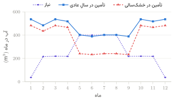
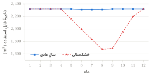
مثال 29.51 (سالانه بس است، ماهانه نه) پرسش. W-1 در سال 5,646 m³ میدهد و نیازِ سالانه 2,986 m³ است. پس مخزن چرا لازم است؟
پاسخ. ماههای ۵ تا ۸ هر کدام دو بار شستوشو و حدودِ 400 m³ آب میخواهند. چاه در تابستانِ عادی تقریباً همینقدر میدهد (389–402 m³)، اما در خشکسالی فقط حدودِ 240 m³. مخزن در خشکسالی تا 1,673 m³ پایین میرود و هرگز خالی نمیشود.
تفسیر. ترازنامهٔ سالانه این فشار را پنهان میکند، چون ماههای پرمصرفِ شستوشو همان ماههای کمآبِ چاهاند. در سالِ عادی حاشیهٔ تابستان تقریباً صفر است و هر خشکسالی آن را منفی میکند. پس ترازنامه ماهانه است و ذخیرهٔ آتشنشانی (180 m³، جایگاهدار) هرگز در آن برداشت نمیشود. خشکسالیِ دوساله و پروانهٔ سقفدار در بخش 29.9.2 آزموده میشوند. وارسی: نیازِ ماهِ ۶: \(2 \times 109.2/0.6 + 20 \times 0.06 \times 30 = 364 + 36 = 400\,\text{m}^3\).
29.8.5 تبخیر: آبی که خورشید برمیدارد
ایده. در بیابان، سطحِ بازِ آب بهسرعت تبخیر میشود. تبخیر از سطحِ آزاد حدودِ تبخیرِ تشت ضربِ ضریبِ تشت است. همین تبخیر از سوی دیگر سودمند است: شورابهٔ اسمزِ معکوس را در حوضچهٔ تبخیر خشک میکند.
evaporation (teaching: pan 2.8 m a year, pan coefficient 0.7, rain 0.11 m)
open reservoir of 2,500 m3, 1.5 m deep (1,667 m2): loses 3,267 m3 a year
- more than the plant's whole operating demand (2,986 m3, lesson G);
a closed steel or concrete tank loses almost nothing
brine pond for 1,019 m3 a year: net evaporation 1.85 m a year
area needed 551 m2, plus freeboard and a second cell for maintenance
rain on 1,000 m2 of roofs: 94 m3 a year - worth collecting, never a supply
in a desert the sun is the largest water user on siteمثال 29.52 (مخزنِ باز، نیروگاهِ بیآب) پرسش. اگر ذخیرهٔ 2,500 m³ بهجای مخزنِ بسته یک استخرِ باز باشد، چه میشود؟
پاسخ. حدودِ 3,270 m³ در سال تبخیر میشود، یعنی بیش از کلِ نیازِ بهرهبرداری.
تفسیر. در بیابان، خورشید بزرگترین مصرفکنندهٔ آبِ ساختگاه است. مخزن بسته است. حوضچهٔ شورابه اما عمداً باز است و اندازهاش از تبخیرِ خالص به دست میآید: حدودِ 550 m² بهاضافهٔ لبه و یک خانهٔ دوم برای نگهداری. بارانِ بامها ارزشِ جمعکردن دارد، اما منبع نیست. وارسی: \(2.8 \times 0.7 \times 1{,}667 = 3{,}267\,\text{m}^3\).
- چرا پرسشِ «مالِ کیست» پیش از «چقدر» میآید؟
- با معادلهٔ 29.31، اگر \(T_\text{aq}\) دو برابر شود، افتِ سطحِ آب در چاه چه میشود؟
- آبِ ماهانهٔ چاهی با 0.25 L/s و پمپاژِ شبانهروزی چقدر است؟
- دو راه برای پوششِ کمبودِ آبِ ساخت نام ببرید.
- چرا ترازنامهٔ سالانه برای این نیروگاه گمراهکننده است؟
- ذخیرهٔ آتشنشانی در معادلهٔ 29.32 کجا آمده است؟
- آبِ خامِ لازم برای یک شستوشو (109 m³ آبِ تصفیهشده) با بازیافتِ 75 % چقدر است؟
- چرا مخزن بسته است اما حوضچهٔ شورابه باز؟
- سطحِ حوضچهای که 500 m³ شورابه را در سال با تبخیرِ خالصِ 1.85 m خشک کند چقدر است؟
- اثرِ چاهِ نیروگاه بر چاههای روستا را چگونه پایش میکنید؟
29.9 ح. آزمایشگاهِ زیرساخت و بهینهسازیِ آب (مثالِ کارشده)
موقعیت. فصلِ ۱۰ چهار سیاستِ شستوشو را از نظرِ آلودگی و هزینه مقایسه کرد و تصمیمِ D-014 انتخابِ میانِ ربات و کامیون را به مناقصه سپرد. این آزمایشگاه همان سیاستها را با آب و معیارهای دیگر میسنجد: انرژیِ بهدستآمده، هزینه، شورابه، ساعتهای کار در میانِ آرایهها و سوخت. سپس کامیون را در خشکسالی میآزماید، زیرساختِ آب را اندازه میکند و برنامهٔ اندازهگیری و دفترِ عدمِ قطعیت را مینویسد. نتیجههای آلودگی و هزینه از فصلِ ۱۰ میآیند (A-196، A-197، A-209). آب از بخشِ چ است و نرخهای ساعتِ کار و سوخت آموزشیاند (A-352).
برنامه:
python -m companion.ch29.lab_h29.9.1 راهبردهای شستوشو در برابرِ آب و معیارهای دیگر
cleaning strategies against water and the other criteria (worked case)
strategy loss % energy gained MWh cost k u/yr raw water m3
none 8.47 0 478 0
truck, wet 1.43 7,951 310 2,548
manual, dry 1.08 8,340 533 0
robot, dry 1.18 8,235 282 0
strategy brine m3 truck-days person-h among arrays diesel m3
none 0 0 0 0.0
truck, wet 1,019 157 2,509 2.5
manual, dry 0 0 20,966 0.0
robot, dry 0 0 2,100 0.0
(raw water at 60 % RO recovery; a wash is 109 m3 treated;
a two-wash month needs 364 m3 raw against 402 m3 from W-1 in summer)
manual brushing gains the most energy but costs the most
of the three and puts people among the live arrays for
thousands of hours; the truck needs the scarce summer
water and makes brine; the robots are cheapest, use no
water and need the fewest hours - but only if the module
maker accepts them in the warranty (ch 10, D-014)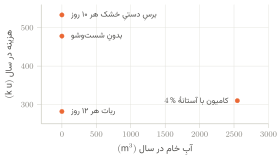
مثال 29.53 (مثالِ کارشده: راهبردِ آب برای شستوشوی پنلها) پرسش. چهار راهبرد را با هم مقایسه کنید: بیشستوشو، شستوشوی تر با کامیون روی آستانهٔ 4 %، برسِ دستیِ خشک هر ۱۰ روز، و رباتِ خشک هر ۱۲ روز. معیارها آلودگی، انرژیِ بهدستآمده، هزینه، آب و کیفیتش، ایمنیِ کارگران و اثرِ محیطیاند. سپس ترازنامهٔ منبع تا مصرف، دفترِ عدمِ قطعیت و برنامهٔ پایش را بنویسید.
پاسخ.
- بیشستوشو: 8.47 % آلودگی و گرانترین در انرژیِ ازدسترفته (478 k u در سال).
- کامیون: 7,951 MWh انرژی در سال به دست میآورد، با 310 k u. اما 2,548 m³ آبِ خام و 1,019 m³ شورابه، 157 روزِ کامیون و حدودِ 2,500 نفر–ساعت در میانِ آرایهها.
- برسِ دستی: بیشترین انرژی (8,340 MWh)، اما گرانترین روشِ تمیزکردن (533 k u) و حدودِ 21,000 نفر–ساعت کار در میانِ آرایهها.
- ربات: 8,235 MWh با 282 k u، شامل سرمایه و نگهداری. بیآب، بیشورابه و حدودِ 2,100 نفر–ساعت نگهداری.
تفسیر. ربات در هزینه، آب و شورابه بهترین است و در ساعتِ کار هم نزدیک به بهترین. یک شرط دارد: سازندهٔ پنل باید آن را در ضمانت بپذیرد (فصلِ ۱۰). برسِ دستی کمی انرژیِ بیشتر میدهد، اما با ده برابر ساعتِ کار در کنارِ تجهیزاتِ برقدار، در گرمای تابستان. این خطری است که معیارِ هزینه نمیبیند. کامیون به همان آبِ کمیابِ تابستان بسته است (مثال 29.51) و در خشکسالیِ سخت شکست میخورد (مثال 29.54). این آزمایشگاه دلیلِ آبیِ D-014 را محکم میکند: ربات، اگر ضمانت بپذیرد؛ کامیون روی آستانه، با برنامهٔ خشکسالی، اگر نپذیرد. «کمشستوشو» هم همین سیاستِ آستانه است: در ماههای بارانی شستن لازم نیست. وارسی: \((478{,}247 - 80{,}705)/50 = 7{,}951\,\text{MWh}\) برای کامیون.
29.9.2 آزمونِ خشکسالی
ایده. راهبردی که آب میخواهد باید بگوید وقتی آب نیست چه میشود. برنامه دو سالِ خشکِ پیاپی را شبیهسازی میکند. قاعده این است که مخزن بالای 20 % ظرفیتِ قابلِ استفادهاش بماند؛ اگر شستوشویی آن را پایینتر ببرد، آن شستوشو حذف میشود.
the truck policy in the SECOND of two dry years (tank kept above 20 %
of its usable volume; a wash is skipped rather than empty the tank)
case washes done loss %
drought (lesson G) 14 of 14 1.43
severe: 30 % in summer, permit 150 m3/month 9 of 14 3.94
(loss linear between the truck and no-cleaning policies)
an ordinary drought is carried by the tank; a second severe
year with a capped permit skips washes and the soiling loss
climbs - a strategy that needs water must say what happens
when the water is not there; the dry methods have no such caseمثال 29.54 (خشکسالیِ دوم با پروانهٔ سقفدار) پرسش. در سالِ دومِ خشکسالیِ سخت، با پروانهای که برداشت را به 150 m³ در ماه محدود میکند، کامیون چند شستوشو انجام میدهد؟
پاسخ. ۹ از ۱۴. آلودگی از 1.43 به حدودِ 3.94 % بالا میرود.
تفسیر. خشکسالیِ معمولی را مخزن پوشش میدهد. خشکسالیِ سختِ دوساله با پروانهٔ سقفدار شستوشو را قطع میکند و انرژی را میگیرد. روشهای خشک چنین حالتی ندارند. برنامهٔ خشکسالیِ کامیون از پیش نوشته میشود: اولویتِ شستوشو در ماههای پرتولید، آبِ تانکر با هزینهاش، یا تعویق. وارسی: کسرِ حذفشده \(5/14 = 0.357\) است و \(1.43 + 0.357 \times (8.47 - 1.43) = 3.94\,\%\).
29.9.3 بازیافتِ اسمزِ معکوس و شورابه
ایده. شستوشوی بیلکه آبِ کمنمک میخواهد. اسمزِ معکوس آبِ خام را به آبِ تصفیهشده و شورابه تقسیم میکند. نسبتِ بازیافت \(r_\text{RO}\) هر چه بیشتر باشد، آبِ خامِ کمتری لازم است، اما شورابه غلیظتر میشود:
\[ V_\text{raw} = \frac{V_\text{treated}}{r_\text{RO}}, \qquad c_\text{brine} \approx \frac{c_\text{feed}}{1 - r_\text{RO}} \tag{29.33}\]
RO recovery against brine strength (feed 2,500 mg/L, permeate taken as pure)
recovery % raw m3 brine m3 brine mg/L pond m2
50 3,058 1,529 5,000 826
60 2,548 1,019 6,250 551
75 2,039 510 10,000 275
85 1,799 270 16,667 146
higher recovery saves raw water and pond area but makes
the brine stronger, until salts scale the membranes: the
supplier's analysis of the actual well water sets the
limit, not this tableمثال 29.55 (بازیافتِ بیشتر، شورابهٔ تندتر) پرسش. بازیافتِ 75 % بهجای 60 % چه آبی صرفهجویی میکند و چه هزینهای دارد؟
پاسخ. حدودِ 510 m³ آبِ خام در سال و نیمی از سطحِ حوضچه. شورابه اما از 6,250 به 10,000 mg/L میرسد.
تفسیر. حدِ بالای بازیافت را رسوبِ نمک روی غشاها تعیین میکند، و آن را تحلیلِ آبِ واقعیِ چاه به دستِ سازنده معلوم میکند، نه این جدول. شورابه در حوضچهٔ آببندِ تبخیر خشک میشود (مثال 29.52) و به زمین یا وادی رها نمیشود. وارسی: \(1{,}529/0.75 = 2{,}039\) و \(1{,}529/0.6 = 2{,}548\)؛ تفاوت \(509\,\text{m}^3\).
29.9.4 زیرساختِ آب
water infrastructure for the truck policy (teaching sizing)
item size why
RO unit 3 m3/h treated one wash (109 m3) in 1.5 days
treated water tank 120 m3 one full wash ready
raw water tank 2,500 m3 fire reserve + summer deficit
brine pond (lined) evaporation about 1,019 m3 brine a year
meters 8 points the monitoring plan
with robots the RO unit and the brine pond disappear; the
tank stays for staff, the fire reserve and constructionایده. هر عضوِ این زنجیر از معیاری اندازه میشود که به آن تکیه دارد. واحدِ اسمزِ معکوس یک شستوشو را در یک تا دو روز آماده میکند. مخزنِ آبِ تصفیهشده یک شستوشوی کامل را نگه میدارد. مخزنِ آبِ خام ذخیرهٔ آتشنشانی و کمبودِ تابستان را دارد. حوضچهٔ شورابه از تبخیر اندازه میشود. و کنتورها برنامهٔ پایش را میسازند. پمپها و لولهها با همین دبیها انتخاب میشوند. خوردگی و رسوبگذاریِ آبِ شور جنسِ لوله و پوشش را تعیین میکند، و آزمایشِ فشار پیش از پرکردن و پایشِ نشتی با مقایسهٔ کنتورها از نشت جلوگیری میکند.
استفادهٔ دوباره و نگهداری. آبِ شستوشو روی 28 ha پنل پخش میشود و در خاک فرو میرود؛ جمعکردنِ آن برای استفادهٔ دوباره عملی نیست. استفادهٔ دوبارهٔ واقعی در جای دیگری است. پسابِ تصفیهشدهٔ ساختمانها برای غبارنشانی و آبیاریِ پوششِ بازگردانده به کار میرود، و آبِ پمپشده از ترانشهها پس از تهنشینی برای خاکریزی. نگهداریِ سامانه هم برنامه دارد (فصلِ ۵۲): پالایهها و غشاهای اسمزِ معکوس، شستوشوی مخزن، کالیبرهکردنِ کنتورها، و لایروبیِ حوضچهٔ شورابه.
29.9.5 برنامهٔ مدیریتِ آب
water management plan: metering and the uncertainty register
meter 1: W-1 and W-2 abstraction (permit reporting)
meter 2: tank level with a low alarm above the fire reserve
meter 3: RO feed and permeate (recovery)
meter 4: brine to the pond
meter 5: truck filling point
meter 6: staff and building use
meter 7: construction draw-off (temporary)
meter 8: rain gauge at the soiling station
uncertainty closed by owner
well yield in a drought pumping test, 2-year records plant
soiling rate two soiling stations (D-014) O&M
water right volume permit (U-104) developer
RO recovery and brine supplier test, pond records O&M
fire reserve volume fire strategy (U-105) fire eng.
the plan is reviewed after the first dry season with the
metered data; the choice of cleaning method is revisited
if water or soiling differ from the assumptionsمثال 29.56 (از ترازنامه تا کنتور) پرسش. کدام کنتورها لازماند و هر کدام کدام عدمِ قطعیت را میبندد؟
پاسخ. هشت نقطه. برداشت از چاهها، که گزارشِ پروانه هم هست، آبدهی و حقابه را میسنجد. ترازِ مخزن، با هشداری بالای ذخیرهٔ آتشنشانی، ذخیره را پاس میدارد. ورودی و خروجیِ اسمزِ معکوس و شورابه بازیافت را میسنجند. بارانسنج کنارِ ایستگاهِ آلودگی آهنگِ آلودگی را به باران وصل میکند.
تفسیر. برنامه پس از نخستین فصلِ خشک با دادهٔ کنتورها بازبینی میشود. اگر آب یا آلودگی با فرضها نخواند، انتخابِ روشِ شستوشو دوباره باز میشود. چارچوبی مانندِ ISO 46001:2019 (STD-136) همین منطق را در قالبِ یک سامانهٔ مدیریتِ کاراییِ آب میگذارد: اندازهگیری، کاهش، جایگزینی و استفادهٔ دوباره. اینجا فقط بهعنوانِ ساختار نام برده شده است. وارسی: هر سطرِ دفترِ عدمِ قطعیت یک مالک و یک راهِ بستن دارد.
- انرژیِ بهدستآمدهٔ ربات نسبت به بیشستوشو را از ستونِ «انرژیِ ازدسترفته»ِ فصلِ ۱۰ حساب کنید.
- چرا ساعتهای کار در میانِ آرایهها معیارِ جداگانهای است؟
- چرا برسِ دستی با وجودِ بیشترین انرژی برگزیده نمیشود؟
- «کمشستوشو» در این مقایسه کجاست؟
- شرطِ ضمانتِ ربات چیست و اگر برقرار نباشد چه میکنید؟
- با بازیافتِ 50 % شورابه چقدر غلیظ میشود و آبِ خام چقدر؟
- چرا ذخیرهٔ آتشنشانی در آزمونِ خشکسالی دست نمیخورد؟
- چهار قلمِ برنامهٔ خشکسالیِ کامیون را بنویسید.
- کدام کنتور بازیافتِ اسمزِ معکوس را میسنجد؟
- چه نشانهای پس از نخستین فصلِ خشک انتخابِ روشِ شستوشو را دوباره باز میکند؟
29.10 خ. دالانِ اتصال و جای پست
فصلِ ۱۴ مسیرِ خطِ 132 kV را با سطحِ هزینه از پستِ نیروگاه تا پستِ شبکه برگزید (D-018). این بخش آن مسیر را به زبانِ عمرانی برمیگرداند: دکلها و نقطههای زاویه، راههای دسترسی، گذرها، زمینی که کاویده و بازگردانده میشود، و فهرستِ نقشهبرداریها و پروانههایی که پیش از ساخت لازماند. سپس سکوی پستِ نیروگاه را در برابرِ وادی میسنجد. عددها آموزشیاند (A-355).
برنامهها:
python -m companion.ch29.examples_i # route, platform, register
python -m companion.ch29.examples_q # straightening, towers, supply29.10.1 مسیر به زبانِ عمرانی
the 132 kV route of ch 14 (least cost) in civil quantities
length 7.06 km; towers at ~300 m spans: 25; direction changes over 10 deg: 7
crossings: wadi 0, public road 0, site track 1
farmland crossed 0.00 km; homes within 500 m: 0
access tracks (~250 m a tower, teaching): 6.2 km
ground disturbed: towers 0.2 ha, tracks 2.5 ha (to reinstate)
angle points become heavier towers and the 50 m grid's
zigzag overstates them - the line designer straightens the
route; each crossing is a separate agreement and permitمثال 29.57 (مسیری که از وادی و جاده نمیگذرد) پرسش. مسیرِ کمهزینه چه گذرهایی دارد و چه زمینی را میکاود؟
پاسخ. فقط یک گذر از راهِ ساختگاه؛ از وادی، جادهٔ عمومی و زمینِ کشاورزی نمیگذرد و در 500 mی هیچ خانهای نیست. زمینِ کاویده حدودِ 0.2 ha زیرِ دکلهاست و 2.5 ha زیرِ راههای دسترسی.
تفسیر. این همان کاری است که سطحِ هزینهٔ فصلِ ۱۴ کرد: مسیر حریمها را دور زد. اما راههای دسترسی بیشترِ زمینِ کاویده را میسازند، ده برابرِ پایِ دکلها. پس طرحِ دسترسی، یعنی استفاده از راههای موجود و مسیرهای موقتِ بازگرداندنی، در دالان به اندازهٔ خودِ خط اهمیت دارد. وارسی: \(25 \times 0.25 = 6.2\,\text{km}\) و \(6.2 \times 4\,\text{m} = 2.5\,\text{ha}\).
29.10.2 راستکردنِ مسیر و جای دکلها
ایده. مسیرِ کمهزینه روی شبکهٔ 50 m زیگزاگ است، چون فقط هشت جهت دارد. هر تغییرِ جهت یک دکلِ زاویه است: سنگینتر، با فونداسیونِ بزرگتر و گرانتر از دکلِ آویزی. الگوریتمِ داگلاس–پوکر خطِ شکسته را با رواداریِ معین ساده میکند. نقطهای را نگه میدارد که بیشترین فاصله را از خطِ راست دارد، و این کار را بازگشتی تکرار میکند:
def rdp(pts: np.ndarray, tol: float) -> np.ndarray:
"""Douglas-Peucker simplification of a polyline (returns kept points)."""
a, b = pts[0], pts[-1]
ab = b - a
nrm = np.hypot(*ab) or 1.0
d = np.abs(ab[0] * (pts[:, 1] - a[1]) - ab[1] * (pts[:, 0] - a[0])) / nrm
k = int(np.argmax(d))
if d[k] <= tol:
return np.array([a, b])
left = rdp(pts[:k + 1], tol)
right = rdp(pts[k:], tol)
return np.vstack([left[:-1], right])the least-cost route straightened (Douglas-Peucker) into angle points
tolerance m angle points length km deviations deg
0 7 7.06 45, 45, 45, 45, 45, 45 ...
50 6 7.04 45, 45, 45, 45, 85, 40
150 4 7.00 45, 44, 86, 40
with 150 m tolerance: 22 suspension, 0 light angle,
6 heavy angle or terminal towers (an 86 deg turn is nearly a
dead end: the designer may split it into two angles)
steel about 330 t (teaching 9 / 15 / 22 t a tower)
the 50 m grid made a zigzag of the route: straightened, a
few deliberate angle points replace many small ones, and
each one that remains is a heavier tower and foundation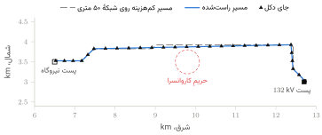
مثال 29.58 (هفت زاویه یا چهار؟) پرسش. با رواداریِ 150 m، مسیر چند نقطهٔ زاویه و چند دکل دارد؟
پاسخ. چهار نقطهٔ زاویه بهجای هفت. مسیر کمی کوتاهتر میشود (7.00 بهجای 7.06 km). دکلها ۲۸ تا هستند: ۲۲ آویزی و ۶ زاویهای یا انتهایی، با حدودِ 330 t فولاد.
تفسیر. شمارشِ سادهٔ مثال 29.57 (۲۵ دکل) دهانهها را با بخشهای راست جور نکرده بود. وقتی هر بخشِ راست دهانههای برابر میگیرد، سه دکل افزوده میشود. چرخشِ 86° تقریباً یک بنبست است و طراحِ خط شاید آن را به دو زاویه تقسیم کند. این شکلِ نهاییِ مسیر کارِ طراحِ خط است با نقشهبرداریِ دقیق؛ اینجا فقط منطقِ آن دیده میشود. وارسی: \(22 \times 9 + 6 \times 22 = 198 + 132 = 330\,\text{t}\).
29.10.3 سکوی پست و سیلِ وادی
ایده. پست نباید زیرِ آب برود. پرسشِ اول این است که سکوی پست چقدر بالای آبراههٔ نزدیک است و چه چیزی میانِ آن دو هست. خطِ وادی در فصلِ ۱۴ یک خطِ راست بود، اما کفِ آبراهه در مدلِ زمین تا 175 m کنارِ آن خط افتاده است. پس کفِ آبراهه با پایینترین نقطهٔ زمین در نزدیکیِ خط پیدا میشود، نه با خودِ خط.
the site substation platform against the wadi
ground at the substation 1203.4 m
channel bed 1201.7 m, 2.2 km away; ridge between 1210.5 m
height above the channel bed: +1.8 m
upstream of x = 6.9 km the channel bed itself is higher
than the substation
the substation sits less than 2 m above the nearest bed,
and below the bed upstream: distance alone is no
protection - the ridge shields it here, but water leaving
the channel upstream can run down the plain; a flood study
(with the rain of lesson E) fixes the platform level
before design, and ponding in a 50-year day of rain
(80 mm) is checked locallyبرای ترازِ آب در آبراهه، عمقِ نرمال از معادلهٔ 29.19 با مقطعِ مستطیلیِ پهن حل میشود. دبیها جایگاهدارند تا مطالعهٔ سیل آنها را بدهد:
the wadi in flood beside the substation (channel 40 m wide, banks
1.5 m, n 0.035, bed slope 0.6 %; flows are placeholders until a
flood study gives them)
flow m3/s depth in channel m water level m out of banks?
50 0.72 1202.37 no
150 1.41 1203.06 no
300 2.17 1203.82 yes
ground: channel bed 1201.7 m, ridge 1210.5 m, substation 1203.4 m
at 300 m3/s the water stands above the substation's ground
level, but the ridge is 6.7 m higher still: here the flood
does not reach it; upstream the bed itself is higher than
the substation, and water leaving the channel there can
run down the plain towards it - the flood study follows
that path, and the platform level and any diversion bund
come from it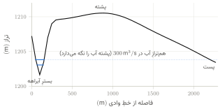
مثال 29.59 (فاصله، حفاظت نیست) پرسش. پست 2.2 km از آبراهه دور است. آیا از سیل در امان است؟
پاسخ. نه با اطمینان. پست فقط 1.8 m بالای کفِ آبراههٔ نزدیک است. در دبیِ جایگاهدارِ 300 m³/s آب به 1203.8 m میرسد، که از زمینِ پست (1203.4 m) بالاتر است. پشتهای به ارتفاعِ 1210.5 m میانِ آن دو آب را نگه میدارد. اما از x = 6.9 km به بالادست، کفِ خودِ آبراهه از زمینِ پست بلندتر است.
تفسیر. آبی که بالادست از آبراهه بیرون بزند، روی دشت به سمتِ پست سرازیر میشود. پشته فقط جلوی نزدیکترین نقطه را گرفته است. مطالعهٔ سیل (U-107) همین مسیر را دنبال میکند و ترازِ سکو و هر خاکریزِ انحرافی از آن به دست میآید. تا آن زمان سکو بالاتر از زمین و با زهکشی ساخته میشود، و آبگرفتگیِ بارانِ یکروزهٔ ۵۰ ساله (80 mm) جداگانه وارسی میشود. این یافته را خواندنِ نیمرخ داد: نخستین نسخهٔ برنامه کفِ آبراهه را با خطِ وادی یکی گرفته بود و پست را 3.8 m زیرِ بستر نشان میداد. وارسی: \(1201.65 + 2.17 = 1203.82\,\text{m}\).
29.10.4 دفترِ دالان
ایده. هر قیدِ دالان (زمین، زیستگاه، میراث، آب، گذر، دسترسی) با نقشهبرداری یا پروانهای ثبت میشود که آن را میبندد، با صاحب و زمان. دفتر از فصلِ ۱۴ شروع شده بود (PLP-GEN-REG-0003) و اینجا به زبانِ اجرا درمیآید:
what the route still needs before it is built (teaching register)
topographic survey of the route
by survey contractor, before line design
ground investigation at angle towers
by geotechnical, before foundation design
ecology walkover in the bird season
by ecologist, before routing is fixed
cultural heritage check (ruin buffer)
by heritage authority, before access tracks
drainage paths and flood levels near the route
by hydrologist, before tower siting
site-track crossing; access from the public road
by road authority, before stringing
land access for each parcel
by developer (U-085), before entry
reinstatement standard and sign-off
by landowners, after construction
the corridor register keeps each constraint with the
survey or permit that closes it; ch 33 (environment and
social) and ch 49 (construction) take it onمثال 29.60 (ترتیب، نه فقط فهرست) پرسش. کدام قلمِ دفتر باید پیش از ثابتشدنِ مسیر بسته شود و کدام پیش از ورود به زمین؟
پاسخ. بازدیدِ زیستشناختی در فصلِ پرندگان پیش از ثابتشدنِ مسیر است. دسترسی به هر قطعهٔ زمین (U-085) پیش از ورود است.
تفسیر. دفترِ دالان یک برنامهٔ زمانی هم هست. بازدیدی که فقط در یک فصل ممکن است، اگر از دست برود، یک سال تأخیر میسازد. فصلهای ۳۳ (محیطِ زیست و جامعه) و ۴۹ (اجرا) این دفتر را ادامه میدهند. وارسی: هر هشت سطر یک «توسطِ» و یک «پیش از» دارند.
29.10.5 بازگرداندنِ زمین
ایده. زمینی که برای دکل و راه و ترانشه کاویده شده، با خاکِ رویی که جدا نگه داشته شده بود (بخش 29.4.11) بازگردانده میشود. پایش نشان میدهد پوششِ گیاهی کی به حدِ پذیرش میرسد. اینجا حدِ آموزشی 70 % پوششِ قطعهٔ مرجعِ دستنخورده است.
reinstatement monitoring: vegetation cover as % of the undisturbed
reference plot (teaching sign-off at 70 %)
area year 1 year 2 year 3 signed off
corridor km 1-3 22 48 71 year 3
corridor km 3-5 15 31 52 not yet
tower bases 30 55 78 year 3
the km 3-5 stretch lags: its topsoil was stockpiled
longest (lesson N) - reseeding there and one more year
of monitoring before the landowners sign offمثال 29.61 (بخشی که دیر سبز میشود) پرسش. کدام بخش در سالِ سوم پذیرفته نمیشود و چرا؟
پاسخ. کیلومترِ ۳ تا ۵ با 52 % پوشش، چون خاکِ روییاش بیش از همه در دپو مانده بود.
تفسیر. بذرپاشیِ دوباره و یک سال پایشِ بیشتر لازم است تا مالکان امضا کنند. هر چه خاکِ رویی کمتر در دپو بماند، بازگرداندن زودتر به نتیجه میرسد. پایاندادنِ کار با امضای مالک است، نه با پایانِ پیمان. وارسی: \(52 < 70\) و \(71 \ge 70\).
- چرا راههای دسترسی بیشترِ زمینِ کاویدهٔ دالان را میسازند؟
- رواداریِ بزرگترِ داگلاس–پوکر چه سود و چه زیانی دارد؟
- چرا دکلِ زاویه گرانتر از دکلِ آویزی است؟
- دکلهای لازم برای بخشی راست به طولِ 1,000 m با دهانهٔ حداکثرِ 300 m چندتاست؟
- چرا کفِ آبراهه با پایینترین نقطهٔ نزدیکِ خطِ وادی پیدا میشود؟
- عمقِ نرمال را با معادلهٔ 29.19 برای مقطعِ پهن چگونه حل میکنید؟
- چرا پشتهٔ میانِ وادی و پست برای اطمینان بس نیست؟
- کدام قلمِ دفترِ دالان فقط در یک فصلِ سال ممکن است؟
- حدِ پذیرشِ بازگرداندن را چه کسی تعیین میکند و چه کسی امضا میکند؟
- یک اشتباهِ برنامه در این بخش با خواندنِ کدام شکل پیدا شد؟
29.11 ساخت و تولیدِ صنعتی در این فصل
کارِ عمرانی محصولی کارخانهای نمیسازد، اما سه «کارخانه» دارد که کیفیتِ آن را تعیین میکنند. کارخانهٔ بتن، که اغلب در خودِ ساختگاه است. منبعِ سنگدانه، که معدن است یا سنگشکنی که بُرشِ سنگیِ ساختگاه را خرد میکند. و قطعههای پیشساخته: لولههای آبرو، دریچهها و درپوشِ کانالِ کابل. منطقِ کنترلِ فرایند و آزمون در کارخانه در فصلِ ۴۷ میآید. این بخش فقط مرزِ عمران با آن را نشان میدهد.
29.11.1 تأمینِ بتن برای بتنریزیِ پیوسته
ایده. فونداسیونِ توربین معمولاً در یک بتنریزیِ پیوسته ریخته میشود تا درزِ سرد نداشته باشد. پس بتن باید بیوقفه و در زمانِ مجاز برسد. شمارِ کامیونها از نرخِ ریختن ضربِ زمانِ رفتوبرگشت به دست میآید:
\[ n_\text{truck} = \left\lceil \frac{q_\text{pour}\,t_\text{cycle}}{V_\text{truck}} \right\rceil \tag{29.34}\]
concrete supply for one continuous 620 m3 foundation pour (teaching)
placing rate 60 m3/h -> 10.3 h of pouring without a cold joint
source km cycle min trucks of 8 m3 minutes in truck
site batching plant 3 39 5 30
ready-mix in town 45 165 21 92
(teaching limit 90 min from batching to placing in heat)
ready-mix from town misses the time limit even before
summer traffic and needs four times the trucks: a site batching
plant with a standby mixer and stocked cement is the usual
answer for twelve such pours - a factory on site (ch 47)مثال 29.62 (کارخانهٔ بتن در ساختگاه) پرسش. برای ریختنِ 620 m³ با 60 m³/h، بتنِ آماده از شهر بس است؟
پاسخ. نه. بیست و یک کامیون لازم است و بتن 92 min در راه است، که از حدِ آموزشیِ 90 min بیشتر است. کارخانهٔ ساختگاه با پنج کامیون و 30 min کار را میکند.
تفسیر. برای دوازده بتنریزیِ پیوسته، کارخانهٔ بتن در ساختگاه معمول است. این کارخانه مخلوطکنِ پشتیبان، سیمانِ انبارشده، آب (بخش 29.8.3)، یخ برای تابستان (مثال 29.31) و آزمایشگاهِ کنترلِ کیفیت میخواهد. یعنی یک کارخانهٔ کوچک با همهٔ کنترلهای فرایندیِ فصلِ ۴۷. وارسی: \(\lceil 60 \times 165/60/8 \rceil = \lceil 20.6 \rceil = 21\).
29.11.2 منبعِ سنگدانه
aggregate for roads and pads (60,000 m3 = 120,000 t, teaching)
source km truck trips truck-km diesel m3
quarry 35 4,800 336,000 134
on-site crushing of cut rock 2 2,880 11,520 5
+ quarry for the rest 35 1,920 134,400 54
crushing the weathered sandstone met in the cuts would
save most of the haul, if its grading and strength pass
the road specification - a test, not an assumption; the
quarry's own permits and the route's bridges are checked
before the contract names itمثال 29.63 (سنگِ بُرش یا سنگِ معدن) پرسش. خرد کردنِ ماسهسنگِ هوازدهٔ بُرشها در ساختگاه چه چیزی را عوض میکند؟
پاسخ. کامیون–کیلومتر از 336,000 به حدودِ 146,000 و سوخت از 134 به حدودِ 59 m³ میرسد.
تفسیر. این فقط وقتی شدنی است که دانهبندی و مقاومتِ سنگِ خردشده از آزمایشِ مشخصاتِ راه بگذرد. این یک آزمایش است، نه یک فرض. پروانههای خودِ معدن و پلهای مسیرِ حمل هم پیش از آنکه پیمان نامش را بیاورد وارسی میشوند. وارسی: \(4{,}800 \times 2 \times 35 = 336{,}000\).
29.11.3 نمونهگیریِ پذیرشِ قطعههای پیشساخته
ایده. محمولهٔ لولههای آبرو یا درپوشها با نمونهگیریِ پذیرش پذیرفته یا رد میشود: نمونهای \(n\) تایی بررسی میشود و اگر بیش از \(c\) معیوب نداشت، محموله پذیرفته است. احتمالِ پذیرش برای سهمِ معیوبِ \(p\) از توزیعِ دوجملهای به دست میآید. نمودارِ آن منحنیِ مشخصهٔ عملیاتی است:
\[ P_\text{acc}(p) = \sum_{k=0}^{c} \binom{n}{k}\,p^k\,(1-p)^{n-k} \tag{29.35}\]
attribute sampling of precast culvert units: sample 13,
accept the lot if at most 1 is defective
defective in lot % probability of acceptance %
1 99.3
2 97.3
5 86.5
10 62.1
15 39.8
20 23.4
30 6.4
a lot with 10 % defective is still accepted about three
times in five: a small sample protects only against bad
lots, not mediocre ones - the plan is chosen from the
risk it must control (ISO 2859-1 tables, ch 10), and the
maker's own process control does the rest (ch 47)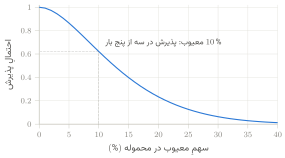
مثال 29.64 (نمونهٔ کوچک، محافظتِ کم) پرسش. محمولهای با 10 % معیوب با چه احتمالی پذیرفته میشود؟
پاسخ. 62 %، یعنی حدودِ سه بار از پنج بار.
تفسیر. نمونهٔ کوچک فقط در برابرِ محمولهٔ بد محافظت میکند، نه محمولهٔ متوسط. طرحِ نمونهگیری از خطری که باید مهار کند انتخاب میشود (ISO 2859-1، STD-076، فصلِ ۱۰). باقیِ کار را کنترلِ فرایندِ خودِ سازنده و آزمونهای نوعی میکند (فصلِ ۴۷). وارسی: \(0.9^{13} + 13 \times 0.1 \times 0.9^{12} = 0.254 + 0.367 = 0.621\).
مرز با فصلهای تولید. آنچه عمران از هر «کارخانه» میخواهد در مشخصاتِ خرید نوشته میشود: گواهیِ مواد، آزمونهای نوعی، کنترلِ فرایند، ردیابیِ محموله و نمونهگیریِ پذیرش. پیمانِ ساخت آن را اجرا میکند (فصلهای ۳۸ تا ۴۰ و ۴۷). بتن، سنگدانه و پیشساختهها همان زنجیرِ «مشخصات، آزمون، شاهد» را دارند که برای ترانسفورماتور و کابل دیدیم.
- چرا فونداسیونِ توربین در یک بتنریزیِ پیوسته ریخته میشود؟
- با 40 m³/h و چرخهٔ 60 min، چند کامیونِ 8 m³ لازم است؟
- کارخانهٔ بتنِ ساختگاه چه پشتیبانیهایی لازم دارد؟
- پیش از استفاده از سنگِ بُرش برای راه، چه آزمایشی لازم است؟
- احتمالِ پذیرشِ محمولهای با 5 % معیوب در طرحِ ۱۳/۱ چیست؟
- چرا نمونهٔ کوچک محمولهٔ متوسط را رد نمیکند؟
- چه چیزی جای نمونهگیریِ بزرگ را در کیفیتِ پیشساختهها میگیرد؟
29.12 نیروگاهِ P: سه مثالِ یکپارچه
برنامه:
python -m companion.ch29.integratedمثال 29.65 (مقدماتی: دو نتیجهٔ عمرانی با دست) پرسش. دبیِ ۱۰ سالهٔ گذرِ وادی و ضریبِ \(N_q\) در \(\varphi = 30^\circ\) را با دست حساب و با کد مقایسه کنید (رکوردِ ساختگیِ A-350، ساختگاهِ D-018).
two civil results checked by hand
wadi crossing, 10-year: Q = 0.278 x 0.35 x 24.8 mm/h x 3.2 km2
= 7.7 m3/s; code 7.7
Nq at 30 deg: e^(pi tan 30) tan^2 60 = 18.40; code 18.40
a hand check of a formula's one number protects against
a wrong unit or a wrong factor in the code - the table of
results is then trusted, not taken on faithپاسخ. 7.7 m³/s و 18.40، هر دو با کد برابر.
تفسیر. وارسیِ دستیِ یک عدد از هر فرمول، واحدِ اشتباه یا ضریبِ جاافتاده در کد را میگیرد. پس از آن جدولِ نتیجهها پذیرفته است، نه چشمبسته باورشده. وارسی: \(0.278 \times 0.35 \times 24.8 \times 3.2 = 7.72\,\text{m}^3/\text{s}\).
مثال 29.66 (میانی: شناساییِ تکمیلی و ارزشش) پرسش. پیش از طراحی چه شناساییای لازم است، چقدر هزینه دارد و در برابرِ چه خطری؟
further investigation before design (teaching costs, k u)
5 boreholes to 15 m at T02/T04/T06/T08/T10 45
deeper borehole or CPT at T05 6
2 CPTs and lab tests at T07 (soft clay) 10
sulphate/chloride tests (all missing) 4
pumping test of W-1 (7 days) 12
drone topographic survey of site and route 18
wadi flood study 15
total 110
against it: one foundation redesigned during construction
(crane and crew standing, a month late) easily costs more
than the whole list - the investigation is the cheapest
risk reduction in the civil works (ch 22 value of
information)پاسخ. حدودِ 110 k u: پنج گمانهٔ تازه، گمانهٔ عمیقتر یا CPT در T05، CPT و آزمایش در T07، آزمایشهای شیمیایی، آزمایشِ پمپاژِ W-1، نقشهبرداریِ پهپادی و مطالعهٔ سیل.
تفسیر. یک فونداسیونِ بازطراحیشده در زمانِ ساخت، با جرثقیل و تیمِ منتظر و یک ماه تأخیر، بهآسانی بیش از کلِ این فهرست هزینه دارد. شناسایی ارزانترین کاهشِ خطر در کارِ عمرانی است و همان ارزشِ اطلاعاتِ فصلِ ۲۲ است. هر قلم یکی از پرسشهای مثال 29.39 را میبندد. وارسی: \(45 + 6 + 10 + 4 + 12 + 18 + 15 = 110\).
مثال 29.67 (یکپارچه: مبنای عمران و آبِ نیروگاهِ P) پرسش. مبنای عمرانی و آبیِ نیروگاهِ P را با یافتهها و موردهای باز بنویسید.
civil and water basis of Plant P (D-033):
ground: model from 10 boreholes and 2 seismic lines,
interpolated only with stated limits; the further
investigation of int_investigation before design; no
foundation chosen here (ch 30 with the engineers)
roads and pads: grades within the transport limits (U-106),
curve widening by swept path, aggregate by CBR section,
crane pads checked where soft ground lies (T07); the
grade line never dams the wadi (fill capped at the crest)
drainage: rational method on the 1-hour Gumbel record,
culvert or ford at the wadi crossing with an overtopping
path; sediment ponds while ground is bare
climate: design values with the record's trend, not as if
stationary; hazards linked to the parts they govern
fire: access, firewater and runoff containment from the
fire strategy and the authority (U-105), placeholders here
water: W-1 for operation with the tank carrying summer;
construction water from another source (trucked or
treated) - 54,000 m3 short; cleaning by robots preferred
on water grounds (D-014 robot vs truck at bid confirmed)
corridor: the ch 14 route straightened (4 angle points,
28 towers) with its register of surveys and permits;
substation 1.8 m above the channel bed: platform level
and any diversion bund after a flood study (U-107)
open: water right and abstraction volume (U-104); fire
strategy values (U-105); transport limits (U-106);
wadi flood levels and flow paths (U-107)تفسیر. این تصمیمِ D-033 است. یافتههایی که به فصلهای دیگر برمیگردند:
- لایهٔ نرمِ T07 و گچِ T12 پرسشهای طراحیِ فونداسیوناند (فصلِ ۳۰، مثال 29.39).
- مقاومتِ گرماییِ خاکِ فصلِ ۲۴ هنوز اندازهگیری نشده است (Q10).
- خطِ پروژهٔ هموار سد میساخت (مثال 29.15).
- آبِ ساخت از دو چاه نمیآید و 54,000 m³ کم دارد (مثال 29.50).
- ترازنامهٔ تابستان حاشیهای ندارد و خشکسالیِ سخت کامیون را متوقف میکند (مثال 29.54). این دلیلِ آبیِ ربات در D-014 است (مثال 29.53).
- پست فقط 1.8 m بالای کفِ آبراهه است (مثال 29.59).
- مخزنِ آب بسته است (مثال 29.52).
- جای تهویهٔ اضافهٔ باتری برای گرمایش نگه داشته میشود (مثال 29.44).
29.13 عددهای کلیدیِ عمران و آبِ نیروگاهِ P
| کمیت | مقدار | مثال |
|---|---|---|
| گمانهها و یافتههای بازبینی | ده گمانه؛ ۱۴ یافته؛ پنج توربینِ بیگمانه | مثال 29.39 |
| عمقِ لرزهای در برابرِ گمانه | 13.7 m در برابرِ 7–8 m | مثال 29.5 |
| باربریِ نهاییِ ماسهٔ T07 (خشک؛ آب در 0.5 m) | 5,360؛ 2,700 kPa | مثال 29.10 |
| دبیِ ۵۰ سالهٔ گذرِ وادی | 9.8 m³/s؛ ده لولهٔ 0.9 m | مثال 29.21 |
| مقاومتِ مشخصهٔ بتن؛ بتنریزیِ ضعیف | 35.4 MPa؛ F07 با 33.4 | مثال 29.30 |
| بیشینهٔ دمای ۵۰ ساله: ایستا / پایانِ عمر | 46.6 / 48.5 °C | مثال 29.41 |
| آبِ ساخت: نیاز / چاهها | 87,460 / 30,300 m³ | مثال 29.50 |
| آبِ بهرهبرداری در سال؛ کمترین ذخیره در خشکسالی | 2,986 m³؛ 1,673 m³ | مثال 29.51 |
| شستوشو: هزینه و آبِ خامِ کامیون / ربات | 310 و 2,548 / 282 k u و صفر | مثال 29.53 |
| پست بالای کفِ آبراهه | +1.8 m | مثال 29.59 |
| برآوردِ عمرانی | حدودِ 5,100 k u | مثال 29.26 |
29.14 گردشِ کارِ شناسایی و طراحیِ عمرانی
- مطالعهٔ دفتری و بازدید: نقشه، زمینشناسی، سیل، آب، مرزها (بخش 29.2).
- نقشهبرداری و شناسایی: شبکهٔ کنترل، مدلِ رقومی، گمانه، لرزهای، آزمایشگاه، با حدهای هر کدام (بخش 29.2).
- بازبینیِ گزارشِ زمین: شکافها و پرسشها، بیفرضِ فونداسیون (بخش 29.5).
- خطرهای اقلیمی: مقدارِ بازگشت با روند، غربال، پیوند به طرح، دفترِ سازگاری (بخش 29.6).
- مبنای طراحیِ عمرانی: راه، خاک، سکو، زهکشی، فرسایش، مرزها (بخش 29.3).
- آتشنشانی و آب: دسترسی، ذخیرهٔ جدا، مهارِ روانآب؛ منبع، ترازنامهٔ ماهانه، روشِ شستوشو (بخش 29.7 تا بخش 29.9).
- دالان و پست: مسیر، دکلها، سیل، دفترِ قیدها، بازگرداندن (بخش 29.10).
- اجرا: برنامهٔ بازرسی و آزمون، پذیرش، گزارشهای عدمِ انطباق، پروندهٔ تحویل (بخش 29.4).
29.15 آزمایشگاههای پایتونِ این فصل
| آزمایشگاه | برنامه | آنچه میسازد |
|---|---|---|
| ساختگاه | sources | گمانهها، خطوطِ لرزهای، رکوردِ اقلیم، چاهها، نیازها، کفِ آبراهه |
| نقشهبرداری و زمین | examples_a | بودجهٔ خطا، زمین، درونیابی، لرزهای، غربالِ SPT |
| مبنای طراحی | examples_b | راه، سنگدانه، سکوی جرثقیل، زهکشی، فرسایش، ترانشه |
| کیفیت | examples_c | تراکم، بتن، حوضچهٔ رسوبگیر، گزارشهای عدمِ انطباق |
| آزمایشگاهِ ت | lab_d | بازبینیِ گمانهها و پرسشها |
| اقلیم | examples_e | مقدارِ بازگشت، روند، غربالِ خطر، پیوند |
| آتشنشانی | examples_f | دسترسی، آبِ آتشنشانی، مهارِ روانآب |
| آب | examples_g | چاهها، آبِ ساخت، ترازنامهٔ ماهانه |
| آزمایشگاهِ ح | lab_h | راهبردهای شستوشو، خشکسالی، زیرساخت، برنامه |
| دالان | examples_i | مسیر، سکوی پست، دفترِ دالان |
| زمینِ بیشتر | examples_k | ترازیابی، پهپاد، عدسیِ نرم، ردهبندی، برکنش، رمبش |
| طراحیِ بیشتر | examples_m | جابهجاییِ خاک، ترافیک، کانال، سنگچین، آبرو، مقادیر |
| اجرای بیشتر | examples_n | تراکمِ آزمایشگاهی، صفحه، بتنِ گرم، بتنِ حجیم، غبار، خاک، بازرسی |
| اقلیم و آبِ بیشتر | examples_p | ساعتهای گرم، تبخیر، شورابه، سیل، احتمالِ عمر، سازگاری |
| دالان و تأمین | examples_q | راستکردنِ مسیر، بتن، سنگدانه، پوشش، نمونهگیری، بازگرداندن |
| نیروگاهِ P | integrated | با دست، شناساییِ تکمیلی، مبنای D-033 |
| مثالها و پاسخها | worked | سطرهای E01 و P01 به بعد |
ماژولِ تازهٔ civil با هشت آزمون در برابرِ حسابِ دستی پایهٔ این برنامههاست. مدلِ زمین و مسیر از فصلِ ۱۴ میآیند، سیاستهای شستوشو از فصلِ ۱۰، ترازنامهٔ آب از فصلِ ۱۸ و سالِ ساعتیِ دما از بستهٔ داده.
29.16 جعبهٔ استاندارد و انطباق
- IEC 61400-6:2020 (STD-083): الزامهای طراحیِ برج و فونداسیونِ توربینِ بادی؛ شناساییای که طراحِ فونداسیون لازم دارد از آن پیروی میکند (فصلِ ۳۰).
- EN 1997-2:2024 (STD-134): یوروکدِ ۷، ویژگیهای زمین؛ نمونهای از برنامهریزیِ شناسایی و گزارشِ آن. آییننامهٔ این ساختگاه نیست.
- ISO 22476-3:2005 (STD-133): آزمایشِ نفوذِ استاندارد؛ چرا انرژیِ چکش ثبت میشود.
- ISO 14688-1:2017 (STD-135): شناسایی و توصیفِ خاک؛ توصیفِ صحرایی در برابرِ ردهبندیِ آزمایشگاهی.
- ISO 2859-1:2026 (STD-076): نمونهگیریِ پذیرش بر پایهٔ ویژگی.
- ISO 46001:2019 (STD-136): سامانهٔ مدیریتِ کاراییِ آب؛ ساختارِ برنامهٔ مدیریتِ آب.
- چارچوبِ محیطی و اجتماعی (STD-108): کاراییِ منابع (آب)، جلوگیری از آلودگی و سلامتِ جامعه (فصلِ ۳۳).
- آییننامههای لرزهای، آب، آتشنشانی و پروانهها مختصِ کشور و محلاند (U-104، U-105؛ فصلهای ۵۵ تا ۵۷). هیچ عددی در این فصل الزامِ کشوری نیست. (وارسیشده 2026-11-16.)
29.17 تحویلدادنیِ نیروگاهِ P
| سند | محتوا | معیارِ پذیرش |
|---|---|---|
| PLP-CIV-REP-0001 | مدلِ زمین، بازبینیِ گزارشِ ژئوتکنیک، پرسشها و حدهای شناسایی | هر پرسش با داده و تصمیمش؛ پاسخها با منبع |
| PLP-CIV-SPC-0001 | مبنای طراحیِ عمرانی | راه، سکو، زهکشی، فرسایش، مرزها، با منبعِ هر عدد |
| PLP-CIV-CAL-0001 | محاسبههای زهکشی، خاک و ترازنامهٔ آب | وارسیِ دستی؛ حالتهای گرفتگی و خشکسالی |
| PLP-CIV-PRO-0001 | برنامههای بازرسی و آزمون و قاعدههای پذیرش | قاعده پیش از آزمایش؛ نقطههای توقف در برنامهٔ زمانی |
| PLP-CIV-REP-0002 | برنامهٔ مدیریتِ آب | ترازنامهٔ منبع تا مصرف، کنتورها، دفترِ عدمِ قطعیت، برنامهٔ خشکسالی |
| PLP-CIV-REG-0001 | دفترِ دالان و جای پست | هر قید با نقشهبرداری یا پروانه، صاحب و زمان |
| PLP-GEN-REG-0006 | دفترِ خطرهای اقلیمی و سازگاری | هر خطر با منبع، دورهٔ بازگشت، نشانگر و اقدام |
این فصل اینها را به پروندهٔ نیروگاهِ P میافزاید:
- تصمیمِ D-033: مبنای عمران و آب (مثال 29.67).
- فرضهای A-349 تا A-355:
- A-349: گمانهها، خطوطِ لرزهای و آزمایشهای ساختگی، ترازِ فرضیِ کفِ فونداسیون.
- A-350: رکوردِ اقلیمِ سیساله با روند.
- A-351: چاهها.
- A-352: نیازهای آب و نرخهای کار و سوخت.
- A-353: ضریبهای فرسایش، روانآب و زهکشی.
- A-354: قاعدههای پذیرش، بتن، جایگاهدارهای آتشنشانی، نرخها و ترکیبها.
- A-355: دهانهها، دکلها، دسترسی، دبیهای سیل و بازگرداندن.
- مجهولها:
- U-104: حقابه و حجمِ برداشت.
- U-105: عددهای راهبردِ آتشنشانی.
- U-106: حدهای حمل.
- U-107: ترازها و مسیرهای سیلِ وادی.
- یافتهها: شناساییِ ناقص در T05، T07 و T12 و پنج توربینِ بیگمانه؛ کمبودِ آبِ ساخت؛ تابستانِ بیحاشیه؛ ارتفاعِ کمِ پست؛ خطِ پروژهای که سد میساخت؛ مخزنِ بسته؛ حاشیهٔ تهویه.
- کتابخانهٔ همراه: ماژولِ
civilبا آزمونها و برنامههای فصلِ ۲۹.
29.18 جمعبندی
- نقشهبرداری و زمین: بودجهٔ خطای کنترل، ترازیابی با بستار، پهپاد با نقطههای وارسیِ جدا؛ گمانه، SPT، CPT و شکستِ لرزهای هر کدام با حدشان؛ درونیابی استثنا را پنهان میکند؛ ردهبندی عددِ طراحی نیست؛ آب و رمبش ورودیِ طراحیاند (بخش 29.2).
- مبنای طراحی: شیب و قوس برای بارِ استثنایی؛ خطِ پروژه اول برای زهکشی؛ آسیبِ راه با توانِ چهارمِ بار؛ سنگدانه بر پایهٔ CBR؛ سکوی جرثقیل در عمق؛ آبرو با گرفتگی و مسیرِ سرریز؛ کانال و سنگچین؛ فرسایش (بخش 29.3).
- اجرا و محیط: پذیرش با قاعدهٔ از پیش نوشته؛ پنجرهٔ رطوبت؛ بتنِ مشخصه و بتنریزیِ تک؛ بتنِ گرم و حجیم؛ پوشش؛ نقطههای توقف در برنامه؛ رسوب، غبار، خاکِ رویی؛ گزارشِ عدمِ انطباق با شاهد (بخش 29.4).
- بازبینی: شکافها و پرسشها بیفرضِ فونداسیون (بخش 29.5).
- اقلیم: گامبل با برونیابیِ آشکار؛ روندِ رکورد؛ احتمال در عمر؛ غربالِ همهٔ خطرها؛ دفترِ سازگاری (بخش 29.6).
- آتشنشانی: دسترسی، ذخیرهٔ جدا، مهارِ روانآب، همه جایگاهدار تا راهبردِ آتشنشانی (بخش 29.7).
- آب: منبع و مالکیت پیش از مقدار؛ ترازنامهٔ ماهانه با ذخیرهٔ جدا؛ آبِ ساخت؛ تبخیر؛ راهبردِ شستوشو با آب، هزینه، انرژی، ایمنی و محیط؛ آزمونِ خشکسالی؛ برنامهٔ پایش (بخش 29.8، بخش 29.9).
- دالان و پست: مسیر به زبانِ عمرانی، راستکردن و دکلها، کفِ آبراهه و پشته، دفترِ قیدها، بازگرداندن (بخش 29.10).
29.18.1 واژگانِ فصلِ ۲۹
| فارسی | انگلیسی | یادداشت |
|---|---|---|
| شناساییِ ساختگاه | site investigation | |
| مدلِ زمین | ground model | |
| گمانه | borehole | |
| آزمایشِ نفوذِ استاندارد | standard penetration test | SPT |
| آزمایشِ نفوذِ مخروط | cone penetration test | CPT |
| شکستِ لرزهای | seismic refraction | |
| فاصلهٔ تقاطع | crossover distance | |
| آبِ زیرزمینی | groundwater | |
| خطای بستارِ ترازیابی | levelling misclosure | |
| فاصلهٔ نمونهٔ زمینی | ground sample distance | GSD |
| ظرفیتِ باربری | bearing capacity | |
| نشست | settlement | |
| زاویهٔ اصطکاکِ داخلی | angle of internal friction | |
| نشانهٔ خمیری | plasticity index | PI |
| خاکِ رمبنده | collapsible soil | |
| نیروی برکنش | uplift | |
| بسترِ راه | subgrade | |
| نسبتِ باربریِ کالیفرنیا | California bearing ratio | CBR |
| تعریضِ قوس | curve widening | |
| نمودارِ جابهجاییِ خاک | mass-haul diagram | |
| محورِ استانداردِ همارز | equivalent standard axle | ESAL |
| روشِ استدلالی | rational method | |
| زمانِ تمرکز | time of concentration | |
| سرریز از روی راه | overtopping | |
| سنگچین | riprap | |
| معادلهٔ جهانیِ هدررفتِ خاک | universal soil loss equation | USLE |
| درصدِ تراکم | relative compaction | |
| رطوبتِ بهینه | optimum moisture content | |
| مقاومتِ مشخصه | characteristic strength | |
| گزارشِ عدمِ انطباق | non-conformance report | NCR |
| مقدارِ بازگشت | return level | |
| سازگاری با اقلیم | climate adaptation | |
| آبِ آتشنشانی | firewater | |
| مهارِ روانآب | runoff containment | |
| ترازنامهٔ آب | water balance | |
| آبدهیِ مطمئن | safe yield | |
| قابلیتِ انتقال | transmissivity | |
| حقابه | water right | |
| شورابه | brine | |
| دکلِ زاویه | angle tower | |
| کفِ آبراهه | channel invert | |
| بازگرداندنِ زمین | reinstatement |
29.19 ارزیابیِ پلکانی
معیارِ تسلطِ این فصل: خواننده میتواند برای هر سازهٔ عمرانی و هر منبعِ آب بگوید چه دادهای آن را تعیین میکند، آن داده از کجا میآید، کجا هنوز فرض است، و چه کسی تصمیم میگیرد. پاسخها در بخش 29.20 آمدهاند.
29.19.1 پلهٔ ۱: مبانی
تمرین 29.1 مرحلههای راه از مطالعهٔ دفتری تا سوابقِ چونساخت را نام ببرید و بگویید پیکانِ برگشت چه میگوید.
تمرین 29.2 معادلهٔ 29.1 را توضیح دهید و بگویید چرا خطاها با جمعِ ساده جمع نمیشوند.
تمرین 29.3 چرا مرزِ حقوقیِ ساختگاه از روی نقشهٔ طراحی پیاده نمیشود؟
تمرین 29.4 معادلهٔ 29.2 را توضیح دهید. چه زمانی خطا پخش میشود و چه زمانی نه؟
تمرین 29.5 معادلهٔ 29.3 را توضیح دهید.
تمرین 29.6 چرا نقطهٔ وارسی در برازشِ مدلِ پهپادی به کار نمیرود؟
تمرین 29.7 فرقِ SPT، CPT و چاهکِ آزمایشی را بگویید.
تمرین 29.8 معادلهٔ 29.4 را توضیح دهید و حدِ آن را بگویید.
تمرین 29.9 چرا عمقِ لرزهای با عمقِ سنگ در گمانه فرق میکند؟
تمرین 29.10 چرا درونیابی لایهٔ نرمِ T07 را پنهان میکند؟
تمرین 29.11 فرقِ توصیفِ صحرایی و ردهبندیِ آزمایشگاهی چیست؟
تمرین 29.12 چرا عددِ \(N\) بیانرژیِ چکش بس نیست؟
تمرین 29.13 آبِ زیرزمینی از چه دو راهی بر فونداسیون اثر دارد؟
تمرین 29.14 خاکِ رمبنده چیست و چه چیزی آن را به حرکت درمیآورد؟
تمرین 29.15 «حدهای شناسایی» در گزارشِ زمین چیست؟
تمرین 29.16 سه محدودیتی را که شکلِ راهِ دسترسی را تعیین میکنند نام ببرید.
تمرین 29.17 نمودارِ جابهجاییِ خاک چه نشان میدهد؟
تمرین 29.18 قانونِ توانِ چهارم را توضیح دهید.
تمرین 29.19 معادلهٔ 29.18 را توضیح دهید و بگویید چرا برای حوضهٔ کوچک است.
تمرین 29.20 مسیرِ سرریزِ طراحیشده چیست؟
تمرین 29.21 پنج ضریبِ USLE را نام ببرید.
تمرین 29.22 هشت مرزِ کارِ عمرانی با رشتههای دیگر را نام ببرید.
تمرین 29.23 چرا پذیرش برای لات است و نه هر آزمایش؟
تمرین 29.24 پنجرهٔ رطوبت چیست؟
تمرین 29.25 مقاومتِ مشخصه را تعریف کنید.
تمرین 29.26 فرقِ نقطهٔ توقف، نقطهٔ شاهد و بازبینیِ سابقه چیست؟
تمرین 29.27 شش قلمِ پروندهٔ تحویلِ کارِ عمرانی را نام ببرید.
تمرین 29.28 معادلهٔ 29.28 را توضیح دهید.
تمرین 29.29 چرا «سیلِ ۵۰ ساله» پنجاه سال یک بار نمیآید؟
تمرین 29.30 ده خطرِ فهرستِ تابآوری را نام ببرید.
تمرین 29.31 دفترِ سازگاری چه سه چیزی برای هر خطر دارد؟
تمرین 29.32 سه نیازِ آتشنشانی به کارِ عمرانی را نام ببرید.
تمرین 29.33 چرا ذخیرهٔ آبِ آتشنشانی جدا نگه داشته میشود؟
تمرین 29.34 پنج گزینهٔ منبعِ آب و پرسشِ اصلیِ هر کدام را بگویید.
تمرین 29.35 معادلهٔ 29.31 را توضیح دهید.
تمرین 29.36 چرا ترازنامهٔ آب ماهانه است؟
تمرین 29.37 معادلهٔ 29.33 را توضیح دهید.
تمرین 29.38 کفِ آبراهه چگونه پیدا میشود و چرا نه با خودِ خطِ وادی؟
تمرین 29.39 معادلهٔ 29.35 را توضیح دهید.
تمرین 29.40 معادلهٔ 29.11 را توضیح دهید و بگویید کدام سطر برای کدام سازوکار است.
تمرین 29.41 چرا تراوش ضریبِ اطمینانِ دیوارهٔ گود را تقریباً نصف میکند؟
29.19.2 پلهٔ ۲: تحلیل
تمرین 29.42 عمقِ لایهٔ تند با \(x_c = 40\,\text{m}\)، \(v_1 = 400\) و \(v_2 = 1{,}800\,\text{m/s}\)؟
تمرین 29.43 عمق با \(x_c = 25\,\text{m}\)، \(v_1 = 500\) و \(v_2 = 1{,}800\,\text{m/s}\)؟
تمرین 29.44 \(N_q\) در \(\varphi = 34^\circ\)؟
تمرین 29.45 باربریِ نهاییِ پیِ مربعیِ 2 m روی ماسه با \(\varphi = 30^\circ\)، \(\gamma = 18\) و عمقِ 1 m؟
تمرین 29.46 فشارِ مجاز با ضریبِ اطمینانِ ۳؟
تمرین 29.47 نشستِ 150 kPa زیرِ پیِ 20 m روی خاکِ 40 MPa؟
تمرین 29.48 بودجهٔ خطای کنترل اگر خطای مبنا 0.005 m شود؟
تمرین 29.49 حدِ بستارِ حلقهٔ 4 km با \(a_\text{l} = 12\,\text{mm}\)؟
تمرین 29.50 GSD در ارتفاعِ 120 m با همان دوربین؟
تمرین 29.51 احتمالِ یافتنِ عدسیِ 20 m با یک گمانهٔ مرکزی؟
تمرین 29.52 نمونهای با \(LL = 45\) و \(PI = 12\)؟
تمرین 29.53 برکنش روی فونداسیونی به قطرِ 18 m که 1 m زیرِ آب است؟
تمرین 29.54 نشستِ رمبشِ لایهٔ 2 m با کرنشِ 3 %؟
تمرین 29.55 پهنای اضافه با \(R = 80\) و \(L = 30\,\text{m}\)؟
تمرین 29.56 پهنای اضافه با \(R = 100\) و \(L = 30\,\text{m}\)؟
تمرین 29.57 محورِ 120 kN چند محورِ استاندارد است؟
تمرین 29.58 محورهای استانداردِ کامیونِ بتنِ خالی (۵۰ و دو تا ۴۰ کیلونیوتن)؟
تمرین 29.59 فشارِ چرخِ 60 kN روی 0.3 × 0.3 m در عمقِ 0.3 m؟
تمرین 29.60 فشارِ تشکِ 2,000 kN روی 2 × 5 m در عمقِ 1 m؟
تمرین 29.61 فشارِ 2,400 kN روی تشکِ 2.5 × 6 m در عمقِ 1 m؟
تمرین 29.62 دبیِ اوج با \(C = 0.35\)، 30 mm/h و 3.2 km²؟
تمرین 29.63 همان با \(C = 0.5\) و 31.4 mm/h؟
تمرین 29.64 زمانِ تمرکزِ 1.5 km با شیبِ 2 %؟
تمرین 29.65 زمانِ تمرکزِ 3 km با شیبِ 0.5 %؟
تمرین 29.66 ظرفیتِ لولهٔ 1.2 m پر با شیبِ 1 % و \(n = 0.024\)؟
تمرین 29.67 ترازِ آب پشتِ لولهای 0.9 m با 1.0 m³/s و \(C_\text{d} = 0.6\)؟
تمرین 29.68 قطرِ سنگِ رو برای 2 m/s؟
تمرین 29.69 فاصلهٔ سدهای تأخیریِ 0.3 m روی شیبِ 3 %؟
تمرین 29.70 هدررفت با \(R_\text{e} = 300\)، \(K_\text{e} = 0.3\)، \(LS = 2.07\) و \(C_\text{e} = 0.5\)؟
تمرین 29.71 لاتِ ۹۵، ۹۶ و ۹۷ با \(k = 0.5\)؟
تمرین 29.72 مقاومتِ مشخصهٔ ۴۰، ۴۲، ۴۴ و ۴۶ مگاپاسکال؟
تمرین 29.73 \(E_\text{v}\) با صفحهٔ 300 mm، 0.25 MPa و 1 mm؟
تمرین 29.74 افزایشِ بیدررو با 300 kg/m³ سیمانِ 330 kJ/kg و ظرفیتِ گرماییِ 2,400 kJ/(m³ K)؟
تمرین 29.75 افتِ سطحِ آب در چاهِ 0.4 L/s پس از ۳۰ روز (\(T_\text{aq} = 1.5\times10^{-4}\)، \(S_\text{aq} = 2\times10^{-4}\)، \(r = 0.3\,\text{m}\))؟
تمرین 29.76 آبِ ترانشه در گذرِ وادی برای 100 m؟
تمرین 29.77 همان با \(k = 10^{-6}\)؟
تمرین 29.78 مقدارِ ۵۰ ساله با \(\mu = 16\) و \(\beta = 6\)؟
تمرین 29.79 احتمالِ دستکم یک سیلِ ۱۰۰ ساله در ۲۵ سال؟
تمرین 29.80 افزایشِ مقدارِ طراحی با روندِ 0.3 °C در دهه در بیست سال؟
تمرین 29.81 آبِ خامِ 1,529 m³ آبِ تصفیهشده با بازیافتِ 60 %؟
تمرین 29.82 آبِ خامِ یک شستوشو (109.2 m³) با بازیافتِ 75 %؟
تمرین 29.83 شمارِ شستوشوها با 109.2 m³ در 1,529 m³؟
تمرین 29.84 آبِ آتشنشانیِ 3,000 L/min برای 60 min؟
تمرین 29.85 همان برای 2,000 L/min و 90 min؟
تمرین 29.86 تبخیرِ استخرِ بازِ 1,000 m² با تشتِ 2.8 m و ضریبِ 0.7؟
تمرین 29.87 سطحِ حوضچه برای 500 m³ شورابه با تبخیرِ خالصِ 1.85 m؟
تمرین 29.88 آبِ ماهانهٔ چاهِ 0.25 L/s با پمپاژِ شبانهروزی؟
تمرین 29.89 دکلها روی 7.06 km با دهانهٔ 300 m (شمارشِ ساده)؟
تمرین 29.90 کامیونهای 8 m³ برای 40 m³/h با چرخهٔ 60 min؟
تمرین 29.91 احتمالِ پذیرشِ محمولهای با 5 % معیوب در طرحِ ۱۳/۱؟
تمرین 29.92 هزینهٔ افزودهٔ سنگدانه اگر ضخامت از 0.3 به 0.4 m برسد؟
تمرین 29.93 برآوردِ محتاطانهٔ میانگین از هشت آزمون با میانگینِ 32.5 و انحرافِ معیارِ 2.45 درجه؟
تمرین 29.94 همان برای مقدارِ محلی؟
تمرین 29.95 ضریبِ اطمینانِ دیوارهٔ 1:2 در ماسهٔ 36 درجه، خشک و با تراوش؟
تمرین 29.96 محورِ استانداردِ ۱۶ محورِ 119 kN در یک عبور؟
29.19.3 پلهٔ ۳: کاربرد
تمرین 29.97 پیمانکار میخواهد قفسهٔ مهارِ دکل را با RTK پیاده کند. چه میگویید؟
تمرین 29.98 حلقهٔ ترازیابی با بستارِ 45 mm روی 6 km آمده است. چه میکنید؟
تمرین 29.99 گزارشِ پهپادی RMSE 3 cm و میانگینِ +4 cm دارد. میپذیرید؟
تمرین 29.100 طراح میخواهد ترازِ لایهٔ متراکم در T06 را از درونیابی بگیرد. چه میگویید؟
تمرین 29.101 لاگ میگوید «ماسهٔ لایدار» و آزمایشگاه «SC». کدام در مدلِ زمین میرود؟
تمرین 29.102 کسی میگوید باربریِ 5,000 kPa یعنی زمین مشکلی ندارد. پاسخ دهید.
تمرین 29.103 ترازِ آبِ T07 یکبار و در تابستان اندازهگیری شده است. برای طراحی بس است؟
تمرین 29.104 خطِ پروژهٔ پیشنهادی در گذرِ وادی 4 m خاکریز دارد. چه میکنید؟
تمرین 29.105 روسازیِ راه فقط برای ۷۲ بارِ برج و ناسل طراحی شده است. ایرادش چیست؟
تمرین 29.106 سکوی جرثقیلِ T07 از آزمایشِ تراکم و صفحه رد شده است و جرثقیل فردا میرسد. چه میکنید؟
تمرین 29.107 آبروی دهلولهای پس از نخستین سیل نیمهپر از رسوب است. چه خطری دارد؟
تمرین 29.108 کانالِ کنارِ راه در شیبِ 6 % شسته شده است. چه پیشنهاد میکنید؟
تمرین 29.109 لاتِ تراکمی با میانگینِ 96 % رد شده و پیمانکار اعتراض دارد. پاسخ دهید.
تمرین 29.110 مجموعهٔ بتن پذیرفته است، پس آیا F07 هم پذیرفته است؟
تمرین 29.111 بتنریزیِ تابستان با بتنِ 38 °C برنامهریزی شده است. چه پیشنهاد میکنید؟
تمرین 29.112 پنج خواندنِ پوشش زیرِ حد است و بتنریزی فردا است. چه میکنید؟
تمرین 29.113 آبِ غبارنشانی کم آمده است. سه گزینه بگویید.
تمرین 29.114 حوضچهٔ رسوبگیر پر شده و باران در راه است. چه میکنید؟
تمرین 29.115 طراح مقدارِ ۵۰ سالهٔ دما را از کلِ رکورد برداشته است. چه میپرسید؟
تمرین 29.116 گزارشِ اقلیم سرما را نادیده گرفته است. چرا ایراد دارد؟
تمرین 29.117 طراحِ پست جای دورزدن نگذاشته است. چرا مهم است؟
تمرین 29.118 پیشنهاد شده آبِ شستوشو از ذخیرهٔ آتشنشانی برداشته شود. پاسخ دهید.
تمرین 29.119 حوضچهٔ روغنِ ترانسفورماتور برای 22 m³ ساخته شده است. در آتش کافی است؟
تمرین 29.120 کسی میگوید چاه 5,600 m³ در سال میدهد و نیاز 3,000 است، پس مخزن لازم نیست. پاسخ دهید.
تمرین 29.121 پیمانِ ساخت نوشته «آب به عهدهٔ پیمانکار». ایرادش چیست؟
تمرین 29.122 ذخیرهٔ 2,500 m³ استخرِ باز طراحی شده است. پاسخ دهید.
تمرین 29.123 سازندهٔ پنل ربات را در ضمانت نمیپذیرد. راهبردِ آب چه میشود؟
تمرین 29.124 پست 2.2 km از وادی است، پس سیل مسئله نیست. پاسخ دهید.
تمرین 29.125 بازدیدِ زیستشناختیِ فصلِ پرندگان از دست رفته است. چه اثری دارد؟
تمرین 29.126 بتنِ آماده از شهر برای فونداسیونها پیشنهاد شده است. پاسخ دهید.
تمرین 29.127 محمولهای از لولههای آبرو با نمونهٔ ۱۳ تایی پذیرفته شده است. چه مطمئنید؟
تمرین 29.128 طراحِ شمع کمترین آزمون را بهجای برآوردِ محتاطانه به کار برده است. چه میگویید؟
تمرین 29.129 گودی کنارِ وادی با دیوارهٔ 1:1.5 پس از باران آب پس میدهد. چه میکنید؟
29.19.4 پلهٔ ۴: طراحی و راستیآزمایی
تمرین 29.130 بودجهٔ خطای کنترل برای پیادهکردنِ قفسهٔ مهار با دوربین از کنترلِ محلی بنویسید.
تمرین 29.131 طرحِ شناساییِ تکمیلی برای T07 بنویسید، با هدف و پرسشِ هر قلم.
تمرین 29.132 الگوی کاوشی برای فونداسیونی روی زمینِ ناهمگن پیشنهاد کنید و احتمالِ یافتن را حساب کنید.
تمرین 29.133 نیمرخِ طولیِ یک راه را با قیدهای شیب، زهکشی و موازنه طراحی کنید.
تمرین 29.134 ضخامتِ سنگدانه را بخش به بخش با CBR اندازه کنید.
تمرین 29.135 گذرِ وادی را با سه گزینه (لولهها، آبروی جعبهای، فورد) مقایسه کنید.
تمرین 29.136 برنامهٔ زهکشیِ راه را با کانال، سدِ تأخیری و سنگچین بنویسید.
تمرین 29.137 برنامهٔ کنترلِ فرسایش و رسوبِ بلوکِ PV را بنویسید.
تمرین 29.138 قاعدههای پذیرشِ تراکم، بتن و پوشش را برای مشخصات بنویسید.
تمرین 29.139 برنامهٔ بازرسی و آزمونِ یک فونداسیون را با صاحبِ هر نقطه بنویسید.
تمرین 29.140 برنامهٔ بتنریزیِ تابستان برای فونداسیونِ حجیم بنویسید.
تمرین 29.141 دفترِ خطرهای اقلیمیِ نیروگاه را با منبع، دورهٔ بازگشت و بخشهای حاکم بنویسید.
تمرین 29.142 زیرساختِ آتشنشانیِ پست و محوطهٔ باتری را با جایگاهدارها و صاحبانشان بنویسید.
تمرین 29.143 ترازنامهٔ ماهانهٔ آبِ بهرهبرداری را برای سالِ عادی و خشکسالی بسازید.
تمرین 29.144 برنامهٔ آبِ دورهٔ ساخت را با منبعها و کاهشها بنویسید.
تمرین 29.145 زیرساختِ آبِ شستوشو را اندازه کنید.
تمرین 29.146 برنامهٔ پایش و دفترِ عدمِ قطعیتِ آب را بنویسید.
تمرین 29.147 دفترِ دالان را با ترتیبِ زمانی بنویسید.
تمرین 29.148 مشخصاتِ خریدِ لولههای آبرو را با نمونهگیری و گواهی بنویسید.
تمرین 29.149 معیارِ پذیرشِ بازگرداندنِ زمین را با پایش و امضا بنویسید.
29.19.5 پلهٔ ۵: تسلط
تمرین 29.150 مبنای عمرانیِ نیروگاهِ P را برای سمپوزیومِ طراحی ارائه کنید و از سه یافتهٔ اصلی دفاع کنید.
تمرین 29.151 گزارشِ ژئوتکنیکِ ساختگاهی دیگر را با همین روش بازبینی کنید.
تمرین 29.152 ارزشِ شناساییِ تکمیلی را با یک درختِ تصمیمِ ساده نشان دهید.
تمرین 29.153 ساختگاهی با آبِ بسیار کم: راهبردِ آب را از صفر بسازید.
تمرین 29.154 نشان دهید چرا یک مقدارِ طراحیِ اقلیمی بیسناریو ناقص است، و سناریویی برای نیروگاه پیشنهاد کنید.
تمرین 29.155 مسیرِ دیگری برای خط پیشنهاد کنید و دفترِ آن را با مسیرِ کنونی مقایسه کنید.
تمرین 29.156 یک خطای مدل در این فصل (کفِ آبراهه یا خطِ پروژه) را بازسازی کنید و بگویید چگونه پیدا شد.
تمرین 29.157 برنامهٔ تحویلِ کارِ عمرانی به بهرهبرداری را با سندها و نگهداریِ لازم بنویسید.
تمرین 29.158 مرزِ کارِ مهندسِ نیروگاه و مهندسانِ دارای صلاحیت را در این فصل بنویسید.
تمرین 29.159 هزینه و زمانِ ساختِ عمرانی را با خطرهای این فصل در یک ثبتِ خطر بیاورید.
29.20 پاسخنامه و راهحلها
پاسخهای عددی را برنامهٔ worked میسازد (سطرهای E01 و P01 به بعد در بخش 29.20.1)؛ پاسخهای دیگر از خروجیِ درسها وارسی شدهاند. برای مسئلههای طراحی و تسلط، معیارهای پاسخ آمدهاند.
حل. تمرین 29.1. شکل 29.1.
حل. تمرین 29.2. بخش 29.2.1: خطاهای مستقل گاهی هم را خنثی میکنند.
حل. تمرین 29.3. بخش 29.2.1.
حل. تمرین 29.4. مثال 29.2.
حل. تمرین 29.5. بخش 29.2.3.
حل. تمرین 29.6. مثال 29.3.
حل. تمرین 29.7. جدول 29.1.
حل. تمرین 29.8. بخش 29.2.6.
حل. تمرین 29.9. مثال 29.5.
حل. تمرین 29.10. مثال 29.6.
حل. تمرین 29.11. مثال 29.8.
حل. تمرین 29.12. بخش 29.2.10.
حل. تمرین 29.13. بخش 29.2.11.
حل. تمرین 29.14. بخش 29.2.12.
حل. تمرین 29.15. بخش 29.2.13.
حل. تمرین 29.16. بخش 29.3.1.
حل. تمرین 29.17. بخش 29.3.2.
حل. تمرین 29.18. بخش 29.3.3.
حل. تمرین 29.19. بخش 29.3.9.
حل. تمرین 29.20. مثال 29.22.
حل. تمرین 29.21. معادلهٔ 29.22.
حل. تمرین 29.22. جدول 29.2.
حل. تمرین 29.23. بخش 29.4.1.
حل. تمرین 29.24. مثال 29.28.
حل. تمرین 29.25. معادلهٔ 29.25.
حل. تمرین 29.26. بخش 29.4.8.
حل. تمرین 29.27. بخش 29.4.13.
حل. تمرین 29.28. بخش 29.6.1.
حل. تمرین 29.29. مثال 29.42.
حل. تمرین 29.30. بخش 29.6.4.
حل. تمرین 29.31. بخش 29.6.7.
حل. تمرین 29.32. بخش 29.7.
حل. تمرین 29.33. مثال 29.47.
حل. تمرین 29.34. جدول 29.3.
حل. تمرین 29.35. بخش 29.8.2.
حل. تمرین 29.36. مثال 29.51.
حل. تمرین 29.37. بخش 29.9.3.
حل. تمرین 29.38. بخش 29.10.3: پایینترین نقطهٔ زمین در نزدیکیِ خط؛ خط ممکن است روی کرانه باشد.
حل. تمرین 29.39. بخش 29.11.3.
حل. تمرین 29.40. بخش 29.2.14.
حل. تمرین 29.41. بخش 29.2.15.
حل. تمرین 29.42. 16.0 m (سطرِ P01).
حل. تمرین 29.43. 9.4 m.
حل. تمرین 29.44. 29.4 (P02).
حل. تمرین 29.45. 654 kPa (P03).
حل. تمرین 29.46. 218 kPa (P04).
حل. تمرین 29.47. 60 mm (P05).
حل. تمرین 29.48. 0.023 m.
حل. تمرین 29.49. 24 mm.
حل. تمرین 29.50. 3.3 cm.
حل. تمرین 29.51. \(10^2/20^2 = 25\,\%\).
حل. تمرین 29.52. خطِ A در 18.3 است، پس لای (ML).
حل. تمرین 29.53. 2,496 kN.
حل. تمرین 29.54. 60 mm.
حل. تمرین 29.55. 5.8 m (P10).
حل. تمرین 29.56. 4.6 m.
حل. تمرین 29.57. \(1.5^4 = 5.06\).
حل. تمرین 29.58. 0.28.
حل. تمرین 29.59. 167 kPa.
حل. تمرین 29.60. 111 kPa (P11).
حل. تمرین 29.61. 98 kPa.
حل. تمرین 29.62. 9.3 m³/s (P06).
حل. تمرین 29.63. 14.0 m³/s.
حل. تمرین 29.64. 25 min (P07).
حل. تمرین 29.65. 71 min.
حل. تمرین 29.66. 2.11 m³/s (P08).
حل. تمرین 29.67. 0.80 m.
حل. تمرین 29.68. 0.17 m.
حل. تمرین 29.69. 10 m.
حل. تمرین 29.70. 93 t/ha/yr (P09).
حل. تمرین 29.71. \(\bar x - 0.5\,s = 95.50\) است، پس پذیرفته (P12).
حل. تمرین 29.72. 38.8 MPa (P13).
حل. تمرین 29.73. 56 MPa.
حل. تمرین 29.74. 41 K.
حل. تمرین 29.75. 3.8 m (P14).
حل. تمرین 29.76. 0.97 L/s (P15).
حل. تمرین 29.77. 0.01 L/s، صد برابر کمتر.
حل. تمرین 29.78. 39.4 mm (P16).
حل. تمرین 29.79. 22.2 %.
حل. تمرین 29.80. 0.6 K.
حل. تمرین 29.81. 2,548 m³ (P17).
حل. تمرین 29.82. 146 m³.
حل. تمرین 29.83. 14 (P19).
حل. تمرین 29.84. 180 m³ (P18).
حل. تمرین 29.85. 180 m³.
حل. تمرین 29.86. 1,960 m³ در سال.
حل. تمرین 29.87. 270 m².
حل. تمرین 29.88. 648 m³.
حل. تمرین 29.89. 25 (P20).
حل. تمرین 29.90. 5.
حل. تمرین 29.91. 86.5 %.
حل. تمرین 29.92. \(16{,}800\,\text{m}^3 \times 25 = 420\,\text{k u}\).
حل. تمرین 29.93. 30.9 درجه (مثال 29.12).
حل. تمرین 29.94. 27.6 درجه.
حل. تمرین 29.95. 1.45 و 0.74.
حل. تمرین 29.96. حدودِ 78 (مثال 29.18).
حل. تمرین 29.97. معیار: بودجه با رواداری برابر است و حاشیه ندارد؛ کنترلِ محلی با GNSS ایستا و دوربین (مثال 29.1).
حل. تمرین 29.98. معیار: حد حدودِ 29 mm است؛ دوباره خواندن، نه پخشکردن (مثال 29.2).
حل. تمرین 29.99. معیار: سوگیری بزرگ است؛ مبنای ارتفاعی یا ارتفاعِ آنتن وارسی شود (مثال 29.3).
حل. تمرین 29.100. معیار: درونیابی استثنا را پنهان میکند؛ گمانه یا CPT پیش از طراحی (مثال 29.6).
حل. تمرین 29.101. معیار: آزمایش، با یادداشت روی لاگ (مثال 29.8).
حل. تمرین 29.102. معیار: نشست، سختیِ دورانی و لایهٔ نرم محدودکنندهاند (مثال 29.9).
حل. تمرین 29.103. معیار: بازهٔ فصلی و سیلگیر لازم است (مثال 29.10).
حل. تمرین 29.104. معیار: سد میسازد؛ خاکریز تا تاجِ آبرو و مسیرِ سرریز (مثال 29.15).
حل. تمرین 29.105. معیار: کامیونهای آب و سنگدانه بیشترِ آسیب را میزنند (مثال 29.16).
حل. تمرین 29.106. معیار: بلندکردن متوقف تا کارِ دوباره و آزمایش؛ وارسیِ مهندسِ عمران (مثال 29.19، مثال 29.29).
حل. تمرین 29.107. معیار: سیلِ ۵۰ ساله سرریز میکند؛ پاکسازی و بازرسی پس از هر جریان (مثال 29.22).
حل. تمرین 29.108. معیار: سنگچین یا سدِ تأخیری هر 5 m (مثال 29.23).
حل. تمرین 29.109. معیار: قاعدهٔ از پیش نوشته؛ پراکندگی (مثال 29.27).
حل. تمرین 29.110. معیار: نه؛ گزارشِ عدمِ انطباق، مغزه، مهندسِ سازه (مثال 29.30).
حل. تمرین 29.111. معیار: یخ یا بتنریزیِ شبانه با انبارِ سایهدار (مثال 29.31).
حل. تمرین 29.112. معیار: اصلاح و خواندنِ دوباره پیش از آزادکردنِ نقطهٔ توقف (مثال 29.33).
حل. تمرین 29.113. معیار: سرعتِ کمتر، چسباننده، پسابِ تصفیهشده (مثال 29.36).
حل. تمرین 29.114. معیار: تخلیه، وارسیِ سرریز، رهاسازیِ آبِ زلال فقط (مثال 29.35).
حل. تمرین 29.115. معیار: روند و سناریو (مثال 29.41).
حل. تمرین 29.116. معیار: ۳۵۶ ساعت زیرِ صفر؛ بتنریزی و گرمکنِ باتری (مثال 29.43).
حل. تمرین 29.117. معیار: ارزان روی نقشه، گران پس از ساخت (مثال 29.46).
حل. تمرین 29.118. معیار: ذخیره جداست؛ لولهٔ برداشت بالای ترازِ ذخیره (مثال 29.47).
حل. تمرین 29.119. معیار: حدودِ 70 m³ با باران و آب؛ جداکننده و حوضچهٔ نگهداری (مثال 29.48).
حل. تمرین 29.120. معیار: ماههای تابستان بیحاشیهاند (مثال 29.51).
حل. تمرین 29.121. معیار: کمبودِ 54,000 m³؛ منبع نام برده شود (مثال 29.50).
حل. تمرین 29.122. معیار: تبخیر بیش از کلِ نیاز (مثال 29.52).
حل. تمرین 29.123. معیار: کامیون روی آستانه با برنامهٔ خشکسالی (مثال 29.53، مثال 29.54).
حل. تمرین 29.124. معیار: فقط 1.8 m بالای کفِ آبراهه؛ بستر در بالادست بلندتر؛ مطالعهٔ سیل (مثال 29.59).
حل. تمرین 29.125. معیار: ثابتشدنِ مسیر یک سال عقب میافتد (مثال 29.60).
حل. تمرین 29.126. معیار: زمانِ راه و شمارِ کامیون؛ کارخانهٔ ساختگاه (مثال 29.62).
حل. تمرین 29.127. معیار: فقط محمولهٔ بد رد میشد؛ کنترلِ فرایندِ سازنده (مثال 29.64).
حل. تمرین 29.128. معیار: کمترین آزمون آماری نیست؛ برآوردِ محلی با شمارِ آزمونها (مثال 29.12).
حل. تمرین 29.129. معیار: ورود ممنوع؛ پایینآوردنِ آب یا نگهداشتنِ دیواره؛ وارسیِ فردِ صلاحیتدار (مثال 29.13).
حل. تمرین 29.130. معیار: معادلهٔ 29.1 با جزءهای کوچکتر و نسبتِ بزرگتر از ۱.
حل. تمرین 29.131. معیار: CPT، نمونهٔ دستنخورده، آزمایشهای مقاومت و سختی، آب، شیمی (مثال 29.66).
حل. تمرین 29.132. معیار: معادلهٔ 29.6 و مونتکارلو؛ مرکز و چند CPT (مثال 29.7).
حل. تمرین 29.133. معیار: بخش 29.3.2 با خاکریزِ محدود در گذرها.
حل. تمرین 29.134. معیار: معادلهٔ 29.16 و حدِ مجاز (مثال 29.17).
حل. تمرین 29.135. معیار: دبی، گرفتگی، سرریز، نگهداری، هزینه (بخش 29.3.9).
حل. تمرین 29.136. معیار: مثال 29.23 و مثال 29.24.
حل. تمرین 29.137. معیار: مثال 29.25 و مثال 29.35.
حل. تمرین 29.138. معیار: معادلهٔ 29.23، معادلهٔ 29.25، کفِ مطلق، گزارشِ عدمِ انطباق.
حل. تمرین 29.139. معیار: بخش 29.4.8.
حل. تمرین 29.140. معیار: دمای بتنِ تازه، چسباننده، دماسنج، عایق (مثال 29.31، مثال 29.32).
حل. تمرین 29.141. معیار: بخش 29.6.5 و بخش 29.6.4.
حل. تمرین 29.142. معیار: بخش 29.7، همه با U-105.
حل. تمرین 29.143. معیار: معادلهٔ 29.32 با ذخیرهٔ جدا (مثال 29.51).
حل. تمرین 29.144. معیار: مثال 29.50 و مثال 29.36.
حل. تمرین 29.145. معیار: بخش 29.9.4.
حل. تمرین 29.146. معیار: مثال 29.56.
حل. تمرین 29.147. معیار: مثال 29.60.
حل. تمرین 29.148. معیار: بخش 29.11.3.
حل. تمرین 29.149. معیار: مثال 29.61.
حل. تمرین 29.150. معیار: مثال 29.67 با شاهدِ هر یافته.
حل. تمرین 29.151. معیار: قاعدهها پیش از خواندن، یافته با پیامد، پرسش بیراهحل (مثال 29.39).
حل. تمرین 29.152. معیار: احتمالِ بازطراحی، هزینهٔ آن، هزینهٔ شناسایی (فصلِ ۲۲، مثال 29.66).
حل. تمرین 29.153. معیار: منبع پیش از مقدار، ترازنامهٔ ماهانه، روشِ خشک، برنامهٔ خشکسالی (بخش 29.8، بخش 29.9).
حل. تمرین 29.154. معیار: مثال 29.41 و مثال 29.44.
حل. تمرین 29.155. معیار: بخش 29.10 و فصلِ ۱۴.
حل. تمرین 29.156. معیار: خواندنِ خروجی در برابرِ شکل و فیزیک (مثال 29.59، مثال 29.15).
حل. تمرین 29.157. معیار: بخش 29.4.13 و فصلِ ۵۲.
حل. تمرین 29.158. معیار: پرسش، نه راهحل؛ تصمیمها با مهندس، مرجع و بهرهبردار.
حل. تمرین 29.159. معیار: ثبتِ خطرِ فصلِ ۲۲ با سطرهای زمین، آب، سیل، آتش.
29.20.1 خروجیِ برنامهها
پاسخهای عددی:
P01 refraction depth, crossover 40 m, 400/1800 m/s: 16.0 m
P02 Nq at 34 deg: 29.4
P03 square 2 m footing, sand phi 30, gamma 18, depth 1 m: 654 kPa
P04 allowable with FS 3: 218 kPa
P05 settlement, 150 kPa, B 20 m, E 40 MPa: 60 mm
P06 rational, C 0.35, 30 mm/h, 3.2 km2: 9.3 m3/s
P07 Kirpich, 1.5 km at 2 %: 25 min
P08 1.2 m pipe full at 1 %, n 0.024: 2.11 m3/s
P09 USLE, R 300, K 0.3, LS 2.07, C 0.5: 93 t/ha/yr
P10 widening, R 80 m, L 30 m: 5.8 m
P11 crane mat 2,000 kN on 2 x 5 m at 1 m: 111 kPa
P12 lot 95, 96, 97 with k 0.5: mean - 0.5 s = 95.50
P13 characteristic of 40, 42, 44, 46 MPa: 38.8 MPa
P14 Cooper-Jacob, 0.4 L/s, T 1.5e-4, S 2e-4, r 0.3 m, 30 d: 3.8 m
P15 trench inflow k 1e-4, h 5 to 4.7 m, R 30 m, 2 sides, 100 m: 0.97 L/s
P16 50-year level, mu 16, beta 6: 39.4 mm
P17 raw water for 1,529 m3 treated at 60 % recovery: 2548 m3
P18 firewater 3,000 L/min for 60 min: 180 m3
P19 washes of 109.2 m3 each in 1,529 m3: 14
P20 towers on 7.06 km at 300 m spans: 25مثالهای کوچک:
E01 refraction depth, crossover 30 m, 500/2000 m/s: 11.62 m
E02 bearing factors at 30 deg: Nc 30.14, Nq 18.40, Ngamma 22.40
E03 rational method, C 0.5, 50 mm/h, 1 km2: 6.95 m3/s
E04 Manning, 1 m wide 0.5 m deep, n 0.015, 1 %: 1.323 m3/s
E05 USLE, R 100, K 0.3, LS 1, C 0.1: 3.0 t/ha/yr
E06 Gumbel 100-year level, mu 10, beta 2: 19.20
E07 2:1 spread, 1,000 kN on 1 x 1 m at 1 m depth: 250 kPa
E08 settlement, 200 kPa, B 2 m, E 20 MPa, I 1: 18.2 mm29.21 منابع
- IEC 61400-6:2020؛ EN 1997-2:2024؛ ISO 22476-3:2005؛ ISO 14688-1:2017؛ ISO 2859-1:2026؛ ISO 46001:2019؛ چارچوبِ محیطی و اجتماعیِ STD-108 (با تاریخِ وارسی در دفترِ استانداردها).
- کتابهای درسیِ مکانیکِ خاک و مهندسیِ پی، هیدرولوژی و زهکشیِ راه، فنِ ساختِ بتن، نقشهبرداری، و منابعِ آبهای زیرزمینی؛ فصلهای ۲، ۳، ۱۰، ۱۴، ۱۸، ۲۲، ۲۴ و ۲۵ همین کتاب.